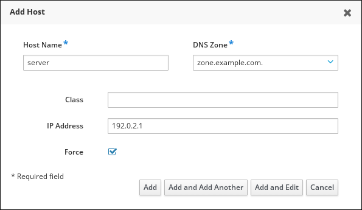

Configuring and managing Identity Management
Configuring, managing, and maintaining Identity Management in Red Hat Enterprise Linux 8
Abstract
Providing feedback on Red Hat documentation
We appreciate your input on our documentation. Please let us know how we could make it better. To do so:
For simple comments on specific passages:
- Make sure you are viewing the documentation in the Multi-page HTML format. In addition, ensure you see the Feedback button in the upper right corner of the document.
- Use your mouse cursor to highlight the part of text that you want to comment on.
- Click the Add Feedback pop-up that appears below the highlighted text.
- Follow the displayed instructions.
For submitting more complex feedback, create a Bugzilla ticket:
- Go to the Bugzilla website.
- As the Component, use Documentation.
- Fill in the Description field with your suggestion for improvement. Include a link to the relevant part(s) of documentation.
- Click Submit Bug.
Chapter 1. Logging in to Identity Management from the command line
Identity Management (IdM) uses the Kerberos protocol to support single sign-on. Single sign-on means that the user enters the correct user name and password only once, and then accesses IdM services without the system prompting for the credentials again.
In IdM, the System Security Services Daemon (SSSD) automatically obtains a ticket-granting ticket (TGT) for a user after the user successfully logs in to the desktop environment on an IdM client machine with the corresponding Kerberos principal name. This means that after logging in, the user is not required to use the kinit utility to access IdM resources.
If you have cleared your Kerberos credential cache or your Kerberos TGT has expired, you need to request a Kerberos ticket manually to access IdM resources. The following sections present basic user operations when using Kerberos in IdM.
1.1. Using kinit to log in to IdM manually
This procedure describes using the kinit utility to authenticate to an Identity Management (IdM) environment manually. The kinit utility obtains and caches a Kerberos ticket-granting ticket (TGT) on behalf of an IdM user.
Only use this procedure if you have destroyed your initial Kerberos TGT or if it has expired. As an IdM user, when logging onto your local machine you are also automatically logging in to IdM. This means that after logging in, you are not required to use the kinit utility to access IdM resources.
Procedure
To log in to IdM
under the user name of the user who is currently logged in on the local system, use kinit without specifying a user name. For example, if you are logged in as
example_useron the local system:[example_user@server ~]$ kinit Password for example_user@EXAMPLE.COM: [example_user@server ~]$If the user name of the local user does not match any user entry in IdM, the authentication attempt fails:
[example_user@server ~]$ kinit kinit: Client 'example_user@EXAMPLE.COM' not found in Kerberos database while getting initial credentialsusing a Kerberos principal that does not correspond to your local user name, pass the required user name to the
kinitutility. For example, to log in as theadminuser:[example_user@server ~]$ kinit admin Password for admin@EXAMPLE.COM: [example_user@server ~]$
Optionally, to verify that the login was successful, use the klist utility to display the cached TGT. In the following example, the cache contains a ticket for the
example_userprincipal, which means that on this particular host, onlyexample_useris currently allowed to access IdM services:$ klist Ticket cache: KEYRING:persistent:0:0 Default principal: example_user@EXAMPLE.COM Valid starting Expires Service principal 11/10/2019 08:35:45 11/10/2019 18:35:45 krbtgt/EXAMPLE.COM@EXAMPLE.COM
1.2. Destroying a user’s active Kerberos ticket
This section describes how to clear the credentials cache that contains the user’s active Kerberos ticket.
Procedure
To destroy your Kerberos ticket:
[example_user@server ~]$ kdestroyOptionally, to check that the Kerberos ticket has been destroyed:
[example_user@server ~]$ klist klist: Credentials cache keyring 'persistent:0:0' not found
1.3. Configuring an external system for Kerberos authentication
This section describes how to configure an external system so that Identity Management (IdM) users can log in to IdM from the external system using their Kerberos credentials.
Enabling Kerberos authentication on external systems is especially useful when your infrastructure includes multiple realms or overlapping domains. It is also useful if the system has not been enrolled into any IdM domain through ipa-client-install.
To enable Kerberos authentication to IdM from a system that is not a member of the IdM domain, define an IdM-specific Kerberos configuration file on the external system.
Prerequisites
The
krb5-workstationpackage is installed on the external system.To find out whether the package is installed, use the following CLI command:
# yum list installed krb5-workstation Installed Packages krb5-workstation.x86_64 1.16.1-19.el8 @BaseOS
Procedure
Copy the
/etc/krb5.conffile from the IdM server to the external system. For example:# scp /etc/krb5.conf root@externalsystem.example.com:/etc/krb5_ipa.confWarningDo not overwrite the existing
krb5.conffile on the external system.On the external system, set the terminal session to use the copied IdM Kerberos configuration file:
$ export KRB5_CONFIG=/etc/krb5_ipa.confThe
KRB5_CONFIGvariable exists only temporarily until you log out. To prevent this loss, export the variable with a different file name.-
Copy the Kerberos configuration snippets from the
/etc/krb5.conf.d/directory to the external system.
Users on the external system can now use the kinit utility to authenticate against the IdM server.
Additional resources
-
For details on Kerberos, see the
krb5.conf(5),kinit(1),klist(1), andkdestroy(1)man pages.
Chapter 2. Viewing, starting and stopping the Identity Management services
Identity Management (IdM) servers are Red Hat Enterprise Linux systems that work as domain controllers (DCs). A number of different services are running on IdM servers, most notably the Directory Server, Certificate Authority (CA), DNS, and Kerberos.
2.1. Viewing the status of IdM services
To view the status of the IdM services that are configured on your IdM server:
[root@server ~]# ipactl status
Directory Service: RUNNING
krb5kdc Service: RUNNING
kadmin Service: RUNNING
named Service: RUNNING
httpd Service: RUNNING
ntpd Service: RUNNING
pki-tomcatd Service: RUNNING
smb Service: RUNNING
winbind Service: RUNNING
ipa-otpd Service: RUNNING
ipa-dnskeysyncd Service: RUNNING
ipa: INFO: The ipactl command was successfulIn the output above:
-
The Kerberos service is divided into two parts,
krb5kdcandkadmin. Thekrb5kdcservice is the Kerberos version 5 Authentication service and Key Distribution Center (KDC) deamon. Thekadminservice is the Kerberos V5 database administration program. -
The
namedservice refers to the Internet domain name service (DNS). -
pkiis the Command-Line Interface for accessing Certificate System services. Thepki-tomcatdprogram handles Identity Management operations related to certificates.
The output of the ipactl status command on your server depends on your IdM configuration. For example, if an IdM deployment does not include a DNS server, the named service is not present in the list.
You cannot use the IdM web UI to view the status of all the IdM services running on a particular IdM server. Kerberized services running on different servers can be viewed in the Identity → Services tab of the IdM web UI.
You can start or stop the entire server, or an individual service only.
To start, stop, or restart the entire IdM server, see:
To start, stop, or restart an individual IdM service, see:
To display the version of IdM software, see:
2.2. Starting and stopping the entire Identity Management server: the ipactl utility
Use the ipactl utility to stop, start, or restart the entire IdM server along with all the installed services. Using the ipactl utility ensures all services are stopped, started, or restarted in the appropriate order. You do not need to have a valid Kerberos ticket to run the ipactl commands.
ipactl commands
To start the entire IdM server:
# ipactl startTo stop the entire IdM server:
# ipactl stopTo restart the entire IdM server:
# ipactl restartTo show the status of all the services that make up IdM:
# ipactl status
You cannot use the IdM web UI to perform the ipactl commands.
2.3. Starting and stopping an individual Identity Management service: the systemctl utility
Changing IdM configuration files manually is generally not recommended. However, certain situations require that an administrator performs a manual configuration of specific services. In such situations, use the systemctl utility to stop, start, or restart an individual IdM service.
For example, use systemctl after customizing the Directory Server behavior, without modifying the other IdM services:
# systemctl restart dirsrv@REALM-NAME.service
Also, when initially deploying an IdM trust with Active Directory, modify the /etc/sssd/sssd.conf file, adding:
- specific parameters to tune the timeout configuration options in an environment where remote servers have a high latency
- specific parameters to tune the Active Directory site affinity
- overrides for certain configuration options that are not provided by the global IdM settings
To apply the changes you have made in the /etc/sssd/sssd.conf file:
# systemctl restart sssd.service
Running systemctl restart sssd.service is required because the System Security Services Daemon (SSSD) does not automatically re-read or re-apply its configuration.
Note that for changes that affect IdM identity ranges, a complete server reboot is recommended.
To restart multiple IdM domain services, always use ipactl. Because of dependencies between the services installed with the IdM server, the order in which they are started and stopped is critical. The ipactl utility ensures that the services are started and stopped in the appropriate order.
Useful systemctl commands
To start a particular IdM service:
# systemctl start name.serviceTo stop a particular IdM service:
# systemctl stop name.serviceTo restart a particular IdM service:
# systemctl restart name.serviceTo view the status of a particular IdM service:
# systemctl status name.service
You cannot use the IdM web UI to start or stop the individual services running on IdM servers. You can only use the web UI to modify the settings of a Kerberized service by navigating to Identity → Services and selecting the service.
2.4. Methods for Displaying Identity Management Software Version
You can display the IdM version number with:
- the IdM WebUI
-
ipacommands rpmcommands- Displaying Version through the WebUI
In the IdM WebUI, the software version can be displayed by choosing
Aboutfrom the username menu at the top-right.- Displaying Version with
ipacommands From the command line, use the
ipa --versioncommand.[root@server ~]# ipa --version VERSION: 4.8.0, API_VERSION: 2.233
- Displaying Version with rpm commands
If IdM services are not operating properly, you can use the
rpmutility to determine the version number of theipa-serverpackage that is currently installed.[root@server ~]# rpm -q ipa-server ipa-server-4.8.0-11.module+el8.1.0+4247+9f3fd721.x86_64
Chapter 3. Introduction to the IdM command-line utilities
The following sections describe the basics of using the Identity Management (IdM) command-line utilities.
Prerequisites
Installed and accessible IdM server.
For details, see Installing Identity Management.
To use the IPA command line interface, authenticate to IdM with a valid Kerberos ticket.
For details about obtaining a valid Kerberos ticket, see Logging in to Identity Management from the command line.
3.1. What is the IPA command line interface
The IPA command line interface (CLI) is the basic command-line interface for Identity Management (IdM) administration.
It supports a lot of subcommands that are used to manage IdM, such as the ipa user-add command to add a new user.
IPA CLI allows you to:
- Add, manage, or remove users, groups, hosts and other objects in the network.
- Manage certificates.
- Search entries.
- Display and list objects.
- Set access rights.
- Get help with the correct command syntax.
3.2. What is the IPA help
The IPA help is a built-in documentation system for the IdM server.
IPA command line interface (CLI) generates available help topics from loaded IdM plugin modules. If you want to run the IPA help successfully, you need to:
- Have an IdM server installed and running.
- Be authenticated with a valid Kerberos ticket.
Executing the ipa help command without options displays information about basic help usage and the most common command examples.
Executing help with options has the following syntax:
$ ipa help [TOPIC | COMMAND | topics | commands]-
[]— Brackets mean that all parameters are optional and you can write justipa helpand the command will be executed. -
|— The pipe character means or. Therefore, you can use TOPIC or COMMAND or topics or commands with the basicipa helpcommand. -
topics— You can run the commandipa help topicsand it will execute correctly. The command displays a list of topics that are covered by IPA help, for example,user,cert,serverand many others. -
TOPIC— The TOPIC with capital letters means variable, therefore, you can use the particular topic, for example,ipa help user -
commands— You can run the commandipa help commandsand it will execute correctly. The command displays a list of commands which are covered by the IPA help, for example,user-add,ca-enable,server-showand many others. -
COMMAND— The COMMAND with capital letters means variable, therefore, you can use the particular command, for example,ipa help user-add
3.3. Using IPA help topics
The following procedure helps you to understand using the IPA help in the command line interface.
Procedure
- Open terminal and connect to the IdM server.
Enter
ipa help topicsto display a list of topics covered by help.$ ipa help topicsSelect one of the topics and create a command according to the following pattern:
ipa help [topic_name], instead of thetopic_namestring, add one of the topics you listed in the previous step.In the example, we use the following topic:
user$ ipa help userIf the IPA help command is too long and you cannot see the whole text, use the following syntax:
$ ipa help user | lessYou can then scroll down and read the whole help.
The IPA CLI displays a help page for the user topic. After reading the overview, you can see many examples with patterns for working with topic commands.
3.4. Using IPA help commands
The following procedure helps you to understand creating the IPA help commands in the command line interface.
Procedure
- Open terminal and connect to the IdM server.
Enter
ipa help commandsto display a list of commands covered by help.$ ipa help commandsSelect one of the commands and create a help command according to the following pattern:
ipa help <COMMAND>, instead of the<COMMAND>string, add one of the commands you listed in the previous step.$ ipa help user-add
Additional resources
-
For details, see
man ipapage.
3.5. Structure of IPA commands
The IPA CLI distinguishes the following types of commands:
- Built-in commands — Built-in commands are all available in the IdM server.
- Plug-in provided commands
Structure of IPA commands allows you to manage various types of objects. For example:
- Users,
- Hosts,
- DNS records,
- Certificates,
and many others.
For most of these objects, the IPA CLI includes commands to:
-
Add (
add) -
Modify (
mod) -
Delete (
del) -
Search (
find) -
Display (
show)
Commands have the following structure:
ipa user-add, ipa user-mod, ipa user-del, ipa user-find, ipa user-show
ipa host-add, ipa host-mod, ipa host-del, ipa host-find, ipa host-show
ipa dnsrecord-add, ipa dnsrecord-mod, ipa dnsrecord-del, ipa dnsrecord-find, ipa dnrecord-show
You can create a user with the ipa user-add [options], where [options] are optional. If you use just the ipa user-add command, the script asks you for details one by one.
To change an existing object, you need to define the object, therefore the command includes also object: ipa user-mod USER_NAME [options].
3.6. Using an IPA command to add a user account to IdM
The following describes adding a new user to the Identity Management database using command line.
Prerequisites
- You need to have administrator privileges to add user accounts to the IdM server.
Procedure
- Open terminal and connect to the IdM server.
Enter the command for adding a new user:
$ ipa user-addThe command runs a script where you can add basic data necessary for creating a user account.
- In the First name: field, enter the first name of the new user and press the Enter key.
- In the Last name: field, enter the last name of the new user and press the Enter key.
In the User login [suggested user name]: enter the user name or just press the Enter key if the suggested user name works for you.
User name must be unique for the whole IdM database. If an error occurs, that the user already exists, you need to start from the beginning with the
ipa user-addcommand and try a different user name.
After you successfully added the user name, the user account has been added to the IdM database and the IPA CLI prints on the output the following log:
---------------------- Added user "euser" ---------------------- User login: euser First name: Example Last name: User Full name: Example User Display name: Example User Initials: EU Home directory: /home/euser GECOS: Example User Login shell: /bin/sh Principal name: euser@IDM.EXAMPLE.COM Principal alias: euser@IDM.EXAMPLE.COM Email address: euser@idm.example.com UID: 427200006 GID: 427200006 Password: False Member of groups: ipausers Kerberos keys available: False
As you can see, a user password is not set to the user account. If you want to add also password, use the ipa user-add command in the following syntax:
$ ipa user-add --first=Example --last=User --passwordThe IPA CLI then asks you for adding or confirming a user name and password.
If the user has been already created, you can add only the password with the `ipa user-mod`command.
Additional resources
For more information about parameters, enter the following help command to the command line:
$ ipa help user-add3.7. Using an IPA command to modify a user account in IdM
You can change many parameters for each user account. For example, you can add a new password to the user.
Basic command syntax is different from the user-add syntax because you need to define the existing user account for which you want to perform changes, for example, add a password.
Prerequisites
- You need to have administrator privileges to modify user accounts in the IdM server.
Procedure
- Open terminal and connect to the IdM server.
Enter the command for adding a password:
$ ipa user-mod euser --passwordThe command runs a script where you can add the new password.
- Enter the new password and press the Enter key.
After you successfully added the user name, the user account has been added to the IdM database and the IPA CLI prints on the output the following log:
---------------------- Modified user "euser" ---------------------- User login: euser First name: Example Last name: User Home directory: /home/euser Principal name: euser@IDM.EXAMPLE.COM Principal alias: euser@IDM.EXAMPLE.COM Email address: euser@idm.example.com UID: 427200006 GID: 427200006 Password: True Member of groups: ipausers Kerberos keys available: True
The user password is now set for the account and the user can log into IdM.
Additional resources
For more information about parameters, enter the following help command to the command line:
$ ipa help user-mod3.8. How to supply a list of values to the IdM utilities
Identity Management (IdM) stores values for multi-valued attributes in lists.
IdM supports the following methods of supplying multi-valued lists:
Using the same command-line argument multiple times within the same command invocation:
$ ipa permission-add --right=read --permissions=write --permissions=delete ...Alternatively, you can enclose the list in curly braces, in which case the shell performs the expansion:
$ ipa permission-add --right={read,write,delete} ...
Examples above show a command permission-add which adds permissions to an object. The object is not mentioned in the example. Instead of … you need to add the object for which you want to add permissions.
When you update such multi-valued attributes from the command line, IdM completely overwrites the previous list of values with a new list. Therefore, when updating a multi-valued attribute, you must specify the whole new list, not just a single value you want to add.
In the command above, the list of permissions includes reading, writing and deleting. When you decide to update the list with the permission-mod command, you must add all values, otherwise those not mentioned will be deleted.
Example 1: — The ipa permission-mod command updates all previously added permissions.
$ ipa permission-mod --right=read --right=write --right=delete ...or
$ ipa permission-mod --right={read,write,delete} ...
Example 2 — The ipa permission-mod command deletes the --right=delete argument because it is not included in the command:
$ ipa permission-mod --right=read --right=write ...or
$ ipa permission-mod --right={read,write} ...3.9. How to use special characters with the IdM utilities
When passing command-line arguments that include special characters to the ipa commands, escape these characters with a backslash (\). For example, common special characters include angle brackets (< and >), ampersand (&), asterisk (*), or vertical bar (|).
For example, to escape an asterisk (*):
$ ipa certprofile-show certificate_profile --out=exported\*profile.cfgCommands containing unescaped special characters do not work as expected because the shell cannot properly parse such characters.
Chapter 4. Searching Identity Management entries from the command line
The following sections describe how to use IPA commands, which helps you to find or show objects.
4.1. Overview of listing IdM entries
This section describes the ipa *-find commands, which can help you to search for a particular type of IdM entries.
To list all the find commands, use the following ipa help command:
$ ipa help commands | grep findYou may need to check if a particular user is included in the IdM database. You can then list all users with the following command:
$ ipa user-findTo list user groups whose specified attributes contain a keyword:
$ ipa group-find keyword
For example the ipa group-find admin command lists all groups whose names or descriptions include string admin:
---------------- 3 groups matched ---------------- Group name: admins Description: Account administrators group GID: 427200002 Group name: editors Description: Limited admins who can edit other users GID: 427200002 Group name: trust admins Description: Trusts administrators group
When searching user groups, you can also limit the search results to groups that contain a particular user:
$ ipa group-find --user=user_nameTo search for groups that do not contain a particular user:
$ ipa group-find --no-user=user_name4.2. Showing details for a particular entry
Use the ipa *-show command to display details about a particular IdM entry.
Procedure
To display details about a host named server.example.com:
$ ipa host-show server.example.com Host name: server.example.com Principal name: host/server.example.com@EXAMPLE.COM ...
4.3. Adjusting the search size and time limit
Some queries, such as requesting a list of IdM users, can return a very large number of entries. By tuning these search operations, you can improve the overall server performance when running the ipa *-find commands, such as ipa user-find, and when displaying corresponding lists in the Web UI.
- Search size limit
Defines the maximum number of entries returned for a request sent to the server from a client’s CLI or from a browser accessing the IdM Web UI.
Default: 100 entries.
- Search time limit
Defines the maximum time (in seconds) that the server waits for searches to run. Once the search reaches this limit, the server stops the search and returns the entries discovered in that time.
Default: 2 seconds.
If you set the values to -1, IdM will not apply any limits when searching.
Setting search size or time limits too high can negatively affect server performance.
4.3.1. Adjusting the search size and time limit in the command line
The following text describes adjusting search size and time limits in the command line:
- Globally
- For a specific entry
Procedure
To display current search time and size limits in CLI, use the ipa config-show command:
$ ipa config-show Search time limit: 2 Search size limit: 100To adjust the limits globally for all queries, use the
ipa config-modcommand and add the--searchrecordslimitand--searchtimelimitoptions. For example:$ ipa config-mod --searchrecordslimit=500 --searchtimelimit=5-
To adjust the limits only for a specific query, add the
--sizelimitor--timelimitoptions to the command. For example:
$ ipa user-find --sizelimit=200 --timelimit=1204.3.2. Adjusting the search size and time limit in the Web UI
The following text describes adjusting search size and time limits in the IdM Web UI:
- Globally
- For a specific entry
Procedure
To adjust the limits globally for all queries:
- Log in to the IdM Web UI.
Click IPA Server.
- On the IPA Server tab, click Configuration.
Set the required values in the Search Options area.
Default values are:
- Search size limit: 100 entries
- Search time limit: 2 seconds
Click Save at the top of the page.
After saving the values, search an entry and verify the result.
Chapter 5. Accessing the IdM Web UI in a web browser
The following sections provide an overview of the IdM (Identity Management) Web UI and describe how to access it.
5.1. What is the IdM Web UI
The IdM (Identity Management) Web UI is a web application for IdM administration, a graphical alternative to the IdM command line tools.
You can access the IdM Web UI as:
- IdM users: A limited set of operations depending on permissions granted to the user in the IdM server. Basically, active IdM users can log in to the IdM server and configure their own account. They cannot change settings of other users or the IdM server settings.
- Administrators: Full access rights to the IdM server.
Active Directory users: A limited set of operations depending on permissions granted to the user.
Active Directory users cannot be administrators for Identity Management.
5.2. Web browsers supported for accessing the Web UI
IdM (Identity Management) supports the following browsers for connecting to the Web UI:
- Mozilla Firefox 38 and later
- Google Chrome 46 and later
5.3. Accessing the Web UI
The following procedure describes the first logging in to the IdM (Identity Management) Web UI with a password.
After the first login you can configure your IdM server to authenticate with:
Kerberos ticket
For details, see Section 6.1, “Kerberos authentication in Identity Management”.
Smart card
For details, see Section 19.1, “Configuring the IdM server for smart card authentication”.
One time password (OTP) — this can be combined with password and Kerberos authentication.
For details, see Section 7.2, “One time password (OTP) authentication in Identity Management”.
Procedure
Type an IdM server URL into the browser address bar. The name will look similarly to the following example:
https://server.example.com
You just need to change
server.example.comwith a DNS name of your IdM server.This opens the IdM Web UI login screen in your browser.
- If the server does not respond or the login screen does not open, check the DNS settings on the IdM server to which you are connecting.
If you use a self-signed certificate, the browser issues a warning. Check the certificate and accept the security exception to proceed with the login.
To avoid security exceptions, install a certificate signed by a certificate authority.
On the Web UI login screen, enter the administrator account credentials you added during the IdM server installation.
For details, see Installing an Identity Management server: With integrated DNS, with an integrated CA.
You can enter your personal account credentials as well if they are already entered in the IdM server.
- Click .
After the successful login, you can start configuring the IdM server.
Chapter 6. Logging in to IdM in the Web UI: Using a Kerberos ticket
The following sections describe the initial configuration of your environment to enable Kerberos login to the IdM Web UI and accessing IdM using Kerberos authentication.
Prerequisites
Installed IdM server in your network environment
For details, see Installing Identity Management in Red Hat Enterprise Linux 8
6.1. Kerberos authentication in Identity Management
Identity Management (IdM) uses the Kerberos protocol to support single sign-on. Single sign-on authentication allows you to provide the correct user name and password only once, and you can then access Identity Management services without the system prompting for credentials again.
The IdM server provides Kerberos authentication immediately after the installation if the DNS and certificate settings have been configured properly. For details, see Installing Identity Management.
To use Kerberos authentication on hosts, install:
the IdM client
For details, see Preparing the system for Identity Management client installation.
- the krb5conf package
6.2. Using kinit to log in to IdM manually
This procedure describes using the kinit utility to authenticate to an Identity Management (IdM) environment manually. The kinit utility obtains and caches a Kerberos ticket-granting ticket (TGT) on behalf of an IdM user.
Only use this procedure if you have destroyed your initial Kerberos TGT or if it has expired. As an IdM user, when logging onto your local machine you are also automatically logging in to IdM. This means that after logging in, you are not required to use the kinit utility to access IdM resources.
Procedure
To log in to IdM
under the user name of the user who is currently logged in on the local system, use kinit without specifying a user name. For example, if you are logged in as
example_useron the local system:[example_user@server ~]$ kinit Password for example_user@EXAMPLE.COM: [example_user@server ~]$If the user name of the local user does not match any user entry in IdM, the authentication attempt fails:
[example_user@server ~]$ kinit kinit: Client 'example_user@EXAMPLE.COM' not found in Kerberos database while getting initial credentialsusing a Kerberos principal that does not correspond to your local user name, pass the required user name to the
kinitutility. For example, to log in as theadminuser:[example_user@server ~]$ kinit admin Password for admin@EXAMPLE.COM: [example_user@server ~]$
Optionally, to verify that the login was successful, use the klist utility to display the cached TGT. In the following example, the cache contains a ticket for the
example_userprincipal, which means that on this particular host, onlyexample_useris currently allowed to access IdM services:$ klist Ticket cache: KEYRING:persistent:0:0 Default principal: example_user@EXAMPLE.COM Valid starting Expires Service principal 11/10/2019 08:35:45 11/10/2019 18:35:45 krbtgt/EXAMPLE.COM@EXAMPLE.COM
6.3. Configuring the browser for Kerberos authentication
To enable authentication with a Kerberos ticket, you may need a browser configuration.
The following steps help you to support Kerberos negotiation for accessing the IdM domain.
Each browser supports Kerberos in a different way and needs different set up. The IdM Web UI includes guidelines for the following browsers:
- Firefox
- Chrome
Procedure
- Open the IdM Web UI login dialog in your web browser.
Click the link for browser configuration on the Web UI login screen.
Follow the steps on the configuration page.
After the setup, turn back to the IdM Web UI and click Log in.
6.4. Logging in to the web UI using a Kerberos ticket
This procedure describes logging in to the IdM Web UI using a Kerberos ticket-granting ticket (TGT).
The TGT expires at a predefined time. The default time interval is 24 hours and you can change it in the IdM Web UI.
After the time interval expires, you need to renew the ticket:
- Using the kinit command.
- Using IdM login credentials in the Web UI login dialog.
Procedure
Open the IdM Web UI.
If Kerberos authentication works correctly and you have a valid ticket, you will be automatically authenticated and the Web UI opens.
If the ticket is expired, it is necessary to authenticate yourself with credentials first. However, next time the IdM Web UI will open automatically without opening the login dialog.
If you see an error message
Authentication with Kerberos failed, verify that your browser is configured for Kerberos authentication. See Section 6.3, “Configuring the browser for Kerberos authentication”.
6.5. Configuring an external system for Kerberos authentication
This section describes how to configure an external system so that Identity Management (IdM) users can log in to IdM from the external system using their Kerberos credentials.
Enabling Kerberos authentication on external systems is especially useful when your infrastructure includes multiple realms or overlapping domains. It is also useful if the system has not been enrolled into any IdM domain through ipa-client-install.
To enable Kerberos authentication to IdM from a system that is not a member of the IdM domain, define an IdM-specific Kerberos configuration file on the external system.
Prerequisites
The
krb5-workstationpackage is installed on the external system.To find out whether the package is installed, use the following CLI command:
# yum list installed krb5-workstation Installed Packages krb5-workstation.x86_64 1.16.1-19.el8 @BaseOS
Procedure
Copy the
/etc/krb5.conffile from the IdM server to the external system. For example:# scp /etc/krb5.conf root@externalsystem.example.com:/etc/krb5_ipa.confWarningDo not overwrite the existing
krb5.conffile on the external system.On the external system, set the terminal session to use the copied IdM Kerberos configuration file:
$ export KRB5_CONFIG=/etc/krb5_ipa.confThe
KRB5_CONFIGvariable exists only temporarily until you log out. To prevent this loss, export the variable with a different file name.-
Copy the Kerberos configuration snippets from the
/etc/krb5.conf.d/directory to the external system. - Configure the browser on the external system, as described in Section 6.3, “Configuring the browser for Kerberos authentication”.
Users on the external system can now use the kinit utility to authenticate against the IdM server.
6.6. Web UI login for Active Directory users
To enable Web UI login for Active Directory users, define an ID override for each Active Directory user in the default trust view. For example:
[admin@server ~]$ ipa idoverrideuser-add 'Default Trust View' ad_user@ad.example.comChapter 7. Logging in to the Identity Management Web UI using one time passwords
Access to IdM Web UI can be secured using several methods. The basic one is password authentication.
To increase the security of password authentication, you can add a second step and require automatically generated one-time passwords (OTPs). The most common usage is to combine password connected with the user account and a time limited one time password generated by a hardware or software token.
The following sections help you to:
- Understand how the OTP authentication works in IdM.
- Configure OTP authentication on the IdM server.
- Create OTP tokens and synchronize them with the FreeOTP app in your phone.
- Authenticate to the IdM Web UI with the combination of user password and one time password.
- Re-synchronize tokens in the Web UI.
7.1. Prerequisites
7.2. One time password (OTP) authentication in Identity Management
One-time passwords bring an additional step to your authentication security. The authentication uses your password + an automatically generated one time password.
To generate one time passwords, you can use a hardware or software token. IdM supports both software and hardware tokens.
Identity Management supports the following two standard OTP mechanisms:
- The HMAC-Based One-Time Password (HOTP) algorithm is based on a counter. HMAC stands for Hashed Message Authentication Code.
- The Time-Based One-Time Password (TOTP) algorithm is an extension of HOTP to support time-based moving factor.
IdM does not support OTP logins for Active Directory trust users.
7.3. Enabling the one time password in the Web UI
The IdM Web UI allows you to configure hardware or software device to generate one-time passwords.
The one time password is entered just after the usual password in the dedicated field in the login dialog.
Only administrators can enable OTP authentication in the user settings.
Prerequisites
- Administration privileges
Procedure
- Log in to the IdM Web UI with your username and password.
Open the Identity → Users → Active users tab.
- Click your username to open the user settings.
- In the User authentication types, select Two factor authentication (password + OTP).
- Click Save.
At this point, the OTP authentication is enabled on the IdM server.
Now you or users themselves need to assign a new token ID to the user account.
7.4. Adding OTP tokens in the Web UI
The following section helps you to add token to the IdM Web UI and to your software token generator.
Prerequisites
- Active user account on the IdM server.
- Administrator has enabled OTP for the particular user account in the IdM Web UI.
- A software device generating OTP tokens, for example FreeOTP.
Procedure
- Log in to the IdM Web UI with your user name and password.
- To create the token in your mobile phone, open the Authentication → OTP Tokens tab.
Click Add.
In the Add OTP token dialog box, leave everything unfilled and click Add.
At this stage, the IdM server creates a token with default parameters at the server and opens a page with a QR code.
- Copy the QR code into your mobile phone.
- Click OK to close the QR code.
Now you can generate one time passwords and log in with them to the IdM Web UI.
7.5. Logging into the Web UI with a one time password
This procedure describes the first login into the IdM Web UI using a one time password (OTP).
Prerequisites
OTP configuration enabled on the Identity Management server for the user account you are using for the OTP authentication. Administrators as well as users themselves can enable OTP.
To enable the OTP configuration, see Section 7.3, “Enabling the one time password in the Web UI”
- A hardware or software device generating OTP tokens configured.
Procedure
- In the Identity Management login screen, enter your user name or a user name of the IdM server administrator account.
- Add the password for the user name entered above.
- Generate a one time password on your device.
- Enter the one time password right after the password (without space).
Click Log in.
If the authentication fails, synchronize OTP tokens.
If your CA uses a self-signed certificate, the browser issues a warning. Check the certificate and accept the security exception to proceed with the login.
If the the IdM Web UI does not open, verify the DNS configuration of your Identity Management server.
After successful login, the IdM Web UI appears.
7.6. Synchronizing OTP tokens using the Web UI
If the login with OTP (One Time Password) fails, OTP tokens are not synchronized correctly.
The following text describes token re-synchronization.
Prerequisites
- A login screen opened.
- A device generating OTP tokens configured.
Procedure
On the IdM Web UI login screen, click Sync OTP Token.
- In the login screen, enter your username and the Identity Management password.
- Generate one time password and enter it in the First OTP field.
- Generate another one time password and enter it in the Second OTP field.
Optionally, enter the token ID.
- Click Sync OTP Token.
After the successful synchronization, you can log in to the IdM server.
7.7. Changing expired passwords
Administrators of Identity Management can enforce you having to change your password at the next login. It means that you cannot successfully log in to the IdM Web UI until you change the password.
Password expiration can happen during your first login to the Web UI.
If the expiration password dialog appears, follow the instructions in the procedure.
Prerequisites
- A login screen opened.
- Active account to the IdM server.
Procedure
- In the password expiration login screen, enter the user name.
- Add the password for the user name entered above.
In the OTP field, generate a one time password, if you use the one time password authentication.
If you do not have enabled the OTP authentication, leave the field empty.
- Enter the new password twice for verification.
Click Reset Password.
After the successful password change, the usual login dialog displays. Log in with the new password.
Chapter 8. Managing user accounts using the IdM Web UI
Identity Management (IdM) provides several stages that can help you to manage various user work life situations:
- Creating a user account
Creating a stage user account before an employee starts their career in your company and be prepared in advance for the day when the employee appears in the office and want to activate the account.
You can omit this step and create the active user account directly. The procedure is similar to creating a stage user account.
- Activating a user account
- Activating the account the first working day of the employee.
- Disabling a user account
- If the user go to a parental leave for couple of months, you will need to disable the account temporarily.
- Enabling a user account
- When the user returns, you will need to re-enable the account.
- Preserving a user account
- If the user wants to leave the company, you will need to delete the account with a possibility to restore it because people can return to the company after some time.
- Restoring a user account
- Two years later, the user is back and you need to restore the preserved account.
- Deleting a user account
- If the employee the employee is dismissed you will delete the account without a backup.
8.1. User life cycle
IdM (Identity Management) supports three user account states:
- Stage users are not allowed to authenticate. This is an initial state. Some of the user account properties required for active users cannot be set, for example, group membership.
- Active users are allowed to authenticate. All required user account properties must be set in this state.
- Preserved users are former active users that are considered inactive and cannot authenticate to IdM. Preserved users retain most of the account properties they had as active users, but they are not part of any user groups.
You can delete user entries permanently from the IdM database.
Deleted user accounts cannot be restored. When you delete a user account, all the information associated with the account is permanently lost.
A new administrator can only be created by a user with administrator rights, such as the default admin user. If you accidentally delete all administrator accounts, the Directory Manager must create a new administrator manually in the Directory Server.
8.2. Adding users in the Web UI
Usually, you need to create a new user account before a new employee starts to work. Such a stage account is not accessible and you need to activate it later.
Alternatively, you can create an active user account directly. For adding active user, follow the procedure below and add the user account in the Active users tab.
Prerequisites
- Administrator privileges for managing IdM or User Administrator role.
Procedure
Log in to the IdM Web UI.
For details, see Accessing the IdM Web UI in a web browser.
Go to Users → Stage Users tab.
Alternatively, you can add the user account in the Users → Active users, however, you cannot add user groups to the account.
- Click the + Add icon.
- In the Add stage user dialog box, enter First name and Last name of the new user.
[Optional] In the User login field, add a login name.
If you leave it empty, the IdM server creates the login name in the following pattern: The first letter of the first name and the surname. The whole login name can have up to 32 characters.
- [Optional] In the GID drop down menu, select groups in which the user should be included.
- [Optional] In the Password and Verify password fields,
Click on the Add button.
At this point, you can see the user account in the Stage Users table.

If you click on the user name, you can edit advanced settings, such as adding a phone number, address, or occupation.
8.3. Activating stage users in the IdM Web UI
A stage user account must be activated before the user can log in to IdM and before the user can be added to an IdM group. This section describes how to activate stage user accounts.
Prerequisites
- Administrator privileges for managing the IdM Web UI or User Administrator role.
- At least one staged user account in IdM.
Procedure
Log in to the IdM Web UI.
For details, see Accessing the IdM Web UI in a web browser.
- Go to Users → Stage users tab.
- Click the check-box of the user account you want to activate.
Click on the Activate button.
- In the Confirmation dialog box, click on the OK button.
If the activation is successfull, the IdM Web UI displays a green confirmation that the user has been activated and the user account has been moved to Active users. The account is active and the user can authenticate to the IdM domain and IdM Web UI. The user is prompted to change their password on the first login.
At this stage, you can add the active user account to user groups.
8.4. Disabling user accounts in the Web UI
You can disable active user accounts. Disabling a user account deactivates the account, therefore, user accounts cannot be used to authenticate and using IdM services, such as Kerberos, or perform any tasks.
Disabled user accounts still exist within IdM and all of the associated information remains unchanged. Unlike preserved user accounts, disabled user accounts remain in the active state and can be a member of user groups.
After disabling a user account, any existing connections remain valid until the user’s Kerberos TGT and other tickets expire. After the ticket expires, the user will not be able to renew it.
Prerequisites
- Administrator privileges for managing the IdM Web UI or User Administrator role.
Procedure
Log in to the IdM Web UI.
For details, see Accessing the IdM Web UI in a web browser.
- Go to Users → Active users tab.
- Click the check-box of the user accounts you want to disable.
Click on the Disable button.
- In the Confirmation dialog box, click on the OK button.
If the disabling procedure has been successful, you can verify in the Status column in the Active users table.
8.5. Enabling user accounts in the Web UI
With IdM you can enable disabled active user accounts. Enabling a user account activates the disabled account.
Prerequisites
- Administrator privileges for managing the IdM Web UI or User Administrator role.
Procedure
- Log in to the IdM Web UI.
- Go to Users → Active users tab.
- Click the check-box of the user accounts you want to enable.
Click on the Enable button.
- In the Confirmation dialog box, click on the OK button.
If the change has been successful, you can verify in the Status column in the Active users table.
8.6. Preserving active users in the IdM Web UI
Preserving user accounts enables you to remove accounts from the Active users tab, yet keeping these accounts in IdM.
Preserve the user account if the employee leaves the company. If you want to disable user accounts for a couple of weeks or months (parental leave, for example), disable the account. For details, see Section 8.4, “Disabling user accounts in the Web UI”. The preserved accounts are not active and users cannot use them to access your internal network, however, the account stays in the database with all the data.
You can move the restored accounts back to the active mode.
The list of users in the preserved state can provide a history of past user accounts.
Prerequisites
- Administrator privileges for managing the IdM (Identity Management) Web UI or User Administrator role.
Procedure
Log in to the IdM Web UI.
For details, see Accessing the IdM Web UI in a web browser.
- Go to Users → Active users tab.
- Click the check-box of the user accounts you want to preserve.
Click on the Delete button.
- In the Remove users dialog box, switch the Delete mode radio button to preserve.
Click on the Delete button.
As a result, the user account is moved to Preserved users.
If you need to restore preserved users, see the Restoring users in the IdM Web UI.
8.7. Restoring users in the IdM Web UI
IdM (Identity Management) enables you to restore preserved user accounts back in the active state.
Prerequisites
- Administrator privileges for managing the IdM Web UI or User Administrator role.
Procedure
Log in to the IdM Web UI.
For details, see Accessing the IdM Web UI in a web browser.
- Go to Users → Preserved users tab.
- Click the check-box at the user accounts you want to restore.
Click on the Restore button.
- In the Confirmation dialog box, click on the OK button.
The IdM Web UI displays a green confirmation and moves the user accounts to the Active users tab.
8.8. Deleting users in the IdM Web UI
Deleting users is an irreversible operation, causing the user accounts to be permanently deleted from the IdM database, including group memberships and passwords. Any external configuration for the user, such as the system account and home directory, is not deleted, but is no longer accessible through IdM.
You can delete:
Active users — the IdM Web UI offers you with the options:
Preserving users temporarily
For details, see the Preserving active users in the IdM Web UI.
- Deleting them permanently
- Stage users — you can just delete stage users permanently.
- Preserved users — you can delete preserved users permanently.
The following procedure describes deleting active users. Similarly, you can delete user accounts on:
- The Stage users tab
- The Preserved users tab
Prerequisites
- Administrator privileges for managing the IdM Web UI or User Administrator role.
Procedure
Log in to the IdM Web UI.
For details, see Accessing the IdM Web UI in a web browser.
Go to Users → Active users tab.
Alternatively, you can delete the user account in the Users → Stage users or Users → Preserved users.
- Click the Delete icon.
- In the Remove users dialog box, switch the Delete mode radio button to delete.
- Click on the Delete button.
The users accounts have been permanently deleted from IdM.
Chapter 9. Managing user accounts using the command line
This chapter includes basic description of user life cycle in IdM (Identity Management). The following sections show you how to:
- Create user accounts
- Activate stage user accounts
- Preserve user accounts
- Delete active, stage, or preserved user accounts
- Restore preserved user accounts
9.1. User life cycle
IdM (Identity Management) supports three user account states:
- Stage users are not allowed to authenticate. This is an initial state. Some of the user account properties required for active users cannot be set, for example, group membership.
- Active users are allowed to authenticate. All required user account properties must be set in this state.
- Preserved users are former active users that are considered inactive and cannot authenticate to IdM. Preserved users retain most of the account properties they had as active users, but they are not part of any user groups.
You can delete user entries permanently from the IdM database.
Deleted user accounts cannot be restored. When you delete a user account, all the information associated with the account is permanently lost.
A new administrator can only be created by a user with administrator rights, such as the default admin user. If you accidentally delete all administrator accounts, the Directory Manager must create a new administrator manually in the Directory Server.
9.2. Adding users using the command line
You can add user as:
- Active — user accounts which can be actively used by their users.
- Stage — users cannot use these accounts. Use it if you want to prepare new user accounts. When users are ready to use their accounts, then you can activate them.
The following procedure describes adding active users to the IdM server with the ipa user-add command.
Similarly, you can create stage user accounts with the ipa stageuser-add command.
IdM automatically assigns a unique user ID (UID) to the new user accounts. You can also do this manually, however, the server does not validate whether the UID number is unique. Due to this, multiple user entries might have the same ID number assigned. Red Hat recommends to prevent having multiple entries with the same UID.
Prerequisites
- Administrator privileges for managing IdM or User Administrator role.
- Obtained a Kerberos ticket. For details, see Using kinit to log in to IdM manually.
Procedure
- Open terminal and connect to the IdM server.
Add user login, user’s first name, last name and optionally, you can also add their email address.
$ ipa user-add user_login --first=first_name --last=last_name --email=email_address
IdM supports user names that can be described by the following regular expression:
[a-zA-Z0-9_.][a-zA-Z0-9_.-]{0,252}[a-zA-Z0-9_.$-]?NoteUser names ending with the trailing dollar sign ($) are supported to enable Samba 3.x machine support.
If you add a user name containing uppercase characters, IdM automatically converts the name to lowercase when saving it. Therefore, IdM always requires to enter user names in lowercase when logging in. Additionally, it is not possible to add user names which differ only in letter casing, such as user and User.
The default maximum length for user names is 32 characters. To change it, use the
ipa config-mod --maxusernamecommand. For example, to increase the maximum user name length to 64 characters:$ ipa config-mod --maxusername=64 Maximum username length: 64 ...
The
ipa user-addcommand includes a lot of parameters. To list them all, use the ipa help command:$ ipa help user-add
For details about
ipa helpcommand, see What is the IPA help.
You can verify if the new user account is successfully created by listing all IdM user accounts:
$ ipa $ ipa user-find
This command lists all user accounts with details.
9.3. Activating users using the command line
To activate a user account by moving it from stage to active, use the ipa stageuser-activate command.
Prerequisites
- Administrator privileges for managing IdM or User Administrator role.
- Obtained a Kerberos ticket. For details, see Using kinit to log in to IdM manually.
Procedure
- Open terminal and connect to the IdM server.
Activate the user account with the following command:
$ ipa stageuser-activate user_login ------------------------- Stage user user_login activated ------------------------- ...
You can verify if the new user account is successfully created by listing all IdM user accounts:
$ ipa $ ipa user-find
This command lists all user accounts with details.
9.4. Preserving users using the command line
To preserve a user account, use the ipa user-del or ipa stageuser-del commands.
Prerequisites
- Administrator privileges for managing IdM or User Administrator role.
- Obtained a Kerberos ticket. For details, see Using kinit to log in to IdM manually.
Procedure
- Open terminal and connect to the IdM server.
Preserve the user account with the following command:
$ ipa user-del --preserve user_login -------------------- Deleted user "user_login" --------------------
9.5. Deleting users using the command line
IdM (Identity Management) enables you to delete users permanently. You can delete:
-
Active users with the following command:
ipa user-del -
Stage users with the following command:
ipa stageuser-del -
Preserved users with the following command:
ipa user-del
When deleting multiple users, use the --continue option to force the command to continue regardless of errors. A summary of the successful and failed operations is printed to the stdout standard output stream when the command completes.
$ ipa user-del --continue user1 user2 user3
If you do not use --continue, the command proceeds with deleting users until it encounters an error, after which it stops and exits.
Prerequisites
- Administrator privileges for managing IdM or User Administrator role.
- Obtained a Kerberos ticket. For details, see Using kinit to log in to IdM manually.
Procedure
- Open terminal and connect to the IdM server.
Delete the user account with the following command:
$ ipa user-del user_login -------------------- Deleted user "user_login" --------------------
The user account has been permanently deleted from IdM.
9.6. Restoring users using the command line
You can restore a preserved users to:
-
Active users:
ipa user-undel -
Stage users:
ipa user-stage
Restoring a user account does not restore all of the account’s previous attributes. For example, the user’s password is not restored and must be set again.
Prerequisites
- Administrator privileges for managing IdM or User Administrator role.
- Obtained a Kerberos ticket. For details, see Using kinit to log in to IdM manually.
Procedure
- Open terminal and connect to the IdM server.
Activate the user account with the following command:
$ ipa user-undel user_login ------------------------------ Undeleted user account "user_login" ------------------------------
Alternatively, you can restore user accounts as staged:
$ ipa user-stage user_login ------------------------------ Staged user account "user_login" ------------------------------
You can verify if the new user account is successfully created by listing all IdM user accounts:
$ ipa $ ipa user-find
This command lists all user accounts with details.
Chapter 10. Managing user groups in IdM CLI
This chapter introduces user groups in Identity Management (IdM).
10.1. User groups and group types in IdM
A user group is a set of users with common privileges, password policies, and other characteristics.
A user group in Identity Management (IdM) can include:
- IdM users
- other IdM user groups
- external users, which are users that exist outside IdM
Group types
IdM has three types of groups:
- POSIX groups (the default)
POSIX groups support POSIX attributes for their members. Note that groups that interact with Active Directory cannot use POSIX attributes.
POSIX attributes identify users as separate entities. Examples of POSIX attributes relevant to users include
uidNumber, a user number (UID), andgidNumber, a group number (GID).- Non-POSIX groups
- All members of this type of group must belong to the IdM domain.
- External groups
- You can use external groups to add group members that exist in an identity store outside of the IdM domain. The external store can be a local system, an Active Directory domain, or a directory service.
Non-POSIX and external groups do not support POSIX attributes. For example, these groups do not have a GID defined.
In IdM role is a concept related to the concept of group. However, the only purpose of a role is to grant rights to users.
User groups created by default
.User groups created by default
| Group name | Default group members |
|---|---|
|
| All IdM users |
|
|
Users with administrative privileges, initially the default |
|
| Users allowed to edit other IdM users in the web UI, without all the rights of an administrative user |
|
| Users with privileges to manage the Active Directory trusts |
When you add a user to a user group, the user gains the privileges and policies associated with the group. For example, you can grant administrative privileges to a user by adding the user to the admins group.
In addition, IdM creates user private groups by default whenever a new user is created in IdM. For more information about private groups, see Section 10.5, “Adding users without a user private group”
10.2. Direct and indirect group members
User group attributes in IdM apply to both direct and indirect members: when group B is a member of group A, all users in group B are considered indirect members of group A.
For example, in [img.user-groups-add-member_managing-user-groups-cli]:
- User 1 and User 2 are direct members of group A.
- User 3, User 4, and User 5 are indirect members of group A.
.Direct and Indirect Group Membership
If you set a password policy for user group A, the policy also applies to all users in user group B.
10.3. Adding, searching for, and deleting user groups in IdM CLI
Adding a user group using IdM CLI
You can specify a custom GID when adding a user group. If you do this, be careful to avoid ID conflicts.
If you do not specify a custom GID, IdM automatically assigns a GID from the available ID range.
Log in as the administrator:
$ kinit admin
Add a user group using the
ipa group-add group_namecommand. For example, to create group_a:$ ipa group-add group_a --------------------- Added group "group_a" --------------------- Group name: group_a GID: 1133400009
By default,
ipa group-addadds a POSIX user group. To specify a different group type, add options toipa group-add:-
--nonposixto create a non-POSIX group --externalto create an external groupFor details on group types, see Section 10.1, “User groups and group types in IdM”.
-
Searching for user groups using IdM CLI
-
Display all user groups using the
ipa group-findcommand. -
Display all POSIX groups using the
ipa group-find --posixcommand. -
Display all non-POSIX groups using the
ipa group-find --nonposixcommand. -
Display all external groups using the
ipa group-find --externalcommand.
Deleting a user group using IdM CLI
Log in as the administrator:
$ kinit admin
Delete a user group using the
ipa group-del group_namecommand. For example, to delete group_a:$ ipa group-del group_a -------------------------- Deleted group "group_a" --------------------------
10.4. Adding a member to a user group using IdM CLI
Prerequisites
- Ensure the relevant user group entry exists. For more information, see Section 10.3, “Adding, searching for, and deleting user groups in IdM CLI”.
- Ensure the relevant user entries exist. Form more information, see Adding users using the command line.
Procedure
Add a member to a user group using the
ipa group-add-membercommand.Specify the type of member using these options:
-
--usersadds an IdM user -
--externaladds a user that exists outside the IdM domain, in the format ofDOMAIN\user_nameoruser_name@domain -
--groupsadds an IdM user group
For example, to add group_b as a member of group_a:
$ ipa group-add-member group_a --groups=group_b Group name: group_a GID: 1133400009 Member users: user_a Member groups: group_b Indirect Member users: user_b ------------------------- Number of members added 1 -------------------------
Members of group_b are now indirect members of group_a.
-
When adding a group as a member of another group, do not create recursive groups. For example, if Group A is a member of Group B, do not add Group B as a member of Group A. Recursive groups can cause unpredictable behavior.
After you add a member to a user group, the update may take some time to spread to all clients in your Identity Management environment. This is because when any given host resolves users, groups and netgroups, the System Security Services Daemon (SSSD) first looks into its cache and performs server lookups only for missing or expired records.
10.5. Adding users without a user private group
By default, IdM creates user private groups (UPGs) whenever a new user is created in IdM.
- The UPG has the same name as the newly created user.
- The user is the only member of the UPG. The UPG cannot contain any other members.
- The GID of the private group matches the UID of the user.
However, it is possible to add users without creating a UPG.
10.5.1. Users without a user private group
If a NIS group or another system group already uses the GID that would be assigned to a user private group, it is necessary to avoid creating a UPG.
You can do this in two ways:
- Add a new user without a UPG, without disabling private groups globally. See Adding a user without a user private group when private groups are globally enabled.
- Disable UPGs globally for all users, then add a new user. See Disabling user private groups globally for all users and Adding a user when user private groups are globally disabled.
In both cases, IdM will require specifying a GID when adding new users, otherwise the operation will fail. This is because IdM requires a GID for the new user, but the default user group ipausers is a non-POSIX group and therefore does not have an associated GID. The GID you specify does not have to correspond to an already existing group.
Specifying the GID does not create a new group. It only sets the GID attribute for the new user, because the attribute is required by IdM.
10.5.2. Adding a user without a user private group when private groups are globally enabled
You can add a user without creating a user private group (UPG) even when UPGs are enabled on the system. This requires manually setting a GID for the new user. For details on why this is needed, see Section 10.5.1, “Users without a user private group”.
Procedure
To prevent IdM from creating a UPG, add the
--noprivateoption to theipa user-addcommand.Note that for the command to succeed, you must specify a custom GID. For example, to add a new user with GID 10000:
$ ipa user-add jsmith --first=John --last=Smith --noprivate --gid 10000
10.5.3. Disabling user private groups globally for all users
You can disable user private groups (UPGs) globally. This prevents the creation of UPGs for all new users. Existing users are unaffected by this change.
Procedure
Obtain administrator privileges:
$ kinit admin
IdM uses the Directory Server Managed Entries Plug-in to manage UPGs. List the instances of the plug-in:
$ ipa-managed-entries --list
To ensure IdM does not create UPGs, disable the plug-in instance responsible for managing user private groups:
$ ipa-managed-entries -e "UPG Definition" disable Disabling Plugin
NoteTo re-enable the
UPG Definitioninstance later, use theipa-managed-entries -e "UPG Definition" enablecommand.Restart Directory Server to load the new configuration.
$ sudo systemctl restart dirsrv.target
To add a user after UPGs have been disabled, you need to specify a GID. For more information, see Adding a user when user private groups are globally disabled
Verification steps
To check if UPGs are globally disabled, use the disable command again:
$ ipa-managed-entries -e "UPG Definition" disable Plugin already disabled
10.5.4. Adding a user when user private groups are globally disabled
When user private groups (UPGs) are disabled globally, IdM does not assign a GID to a new user automatically. To successfully add a user, you must assign a GID manually or by using an automember rule. For details on why this is required, see Section 10.5.1, “Users without a user private group”.
Prerequisities
- UPGs must be disabled globally for all users. For more information, see Disabling user private groups globally for all users
Procedure
To make sure adding a new user succeeds when creating UPGs is disabled, choose one of the following:
Specify a custom GID when adding a new user. The GID does not have to correspond to an already existing user group.
For example, when adding a user from the command line, add the
--gidoption to theipa user-addcommand.- Use an automember rule to add the user to an existing group with a GID.
10.6. Viewing group members using IdM CLI
Procedure:
To list members of a group, use the
ipa group-show group_namecommand. For example:$ ipa group-show group_a ... Member users: user_a Member groups: group_b Indirect Member users: user_b
You can see both direct and indirect members of a group in the output. For details on direct and indirect membership, see Direct and indirect group members.
The list of indirect members does not include external users from trusted Active Directory domains. The Active Directory trust user objects are not visible in the Identity Management interface because they do not exist as LDAP objects within Identity Management.
10.7. Removing a member from a user group using IdM CLI
-
Optional. Use the
ipa group-showcommand to confirm that the group includes the member you want to remove. Remove a member from a user group using the
ipa group-remove-membercommand.You can specify the member using these options:
-
--usersremoves an IdM user -
--externalremoves a user that exists outside the IdM domain, in the format ofDOMAIN\user_nameoruser_name@domain -
--groupsremoves an IdM user group
For example, to remove user1, user2, and group1 from a group called group_name:
$ ipa group-remove-member group_name --users=user1 --users=user2 --groups=group1
-
Chapter 11. Managing user groups in IdM Web UI
This chapter introduces user groups management using the IdM web UI.
11.1. User groups and group types in IdM
A user group is a set of users with common privileges, password policies, and other characteristics.
A user group in Identity Management (IdM) can include:
- IdM users
- other IdM user groups
- external users, which are users that exist outside IdM
Group types
IdM has three types of groups:
- POSIX groups (the default)
POSIX groups support POSIX attributes for their members. Note that groups that interact with Active Directory cannot use POSIX attributes.
POSIX attributes identify users as separate entities. Examples of POSIX attributes relevant to users include
uidNumber, a user number (UID), andgidNumber, a group number (GID).- Non-POSIX groups
- All members of this type of group must belong to the IdM domain.
- External groups
- You can use external groups to add group members that exist in an identity store outside of the IdM domain. The external store can be a local system, an Active Directory domain, or a directory service.
Non-POSIX and external groups do not support POSIX attributes. For example, these groups do not have a GID defined.
In IdM role is a concept related to the concept of group. However, the only purpose of a role is to grant rights to users.
User groups created by default
.User groups created by default
| Group name | Default group members |
|---|---|
|
| All IdM users |
|
|
Users with administrative privileges, initially the default |
|
| Users allowed to edit other IdM users in the web UI, without all the rights of an administrative user |
|
| Users with privileges to manage the Active Directory trusts |
When you add a user to a user group, the user gains the privileges and policies associated with the group. For example, you can grant administrative privileges to a user by adding the user to the admins group.
In addition, IdM creates user private groups by default whenever a new user is created in IdM. For more information about private groups, see Section 10.5, “Adding users without a user private group”
11.2. Direct and indirect group members
User group attributes in IdM apply to both direct and indirect members: when group B is a member of group A, all users in group B are considered indirect members of group A.
For example, in [img.user-groups-add-member_managing-user-groups-in-idm-web-ui]:
- User 1 and User 2 are direct members of group A.
- User 3, User 4, and User 5 are indirect members of group A.
.Direct and Indirect Group Membership
If you set a password policy for user group A, the policy also applies to all users in user group B.
11.3. Adding a user group using IdM Web UI
This section describes how to add a user group using the IdM Web UI.
Prerequisites
- You are logged in to the IdM Web UI.
Procedure
- Click Identity → Groups, and select User Groups in the left sidebar.
- Click Add to start adding the group.
Fill out the information about the group. For more information about user group types, see User groups and group types in IdM.
You can specify a custom GID for the group. If you do this, be careful to avoid ID conflicts. If you do not specify a custom GID, IdM automatically assigns a GID from the available ID range.
- Click Add to confirm.
11.4. Deleting a user group using IdM Web UI
This section describes how to delete a user group using the IdM Web UI. Note that deleting a group does not delete the group members from IdM.
Prerequisites
- You are logged in to the IdM Web UI.
Procedure
- Click Identity → Groups and select User Groups.
- Select the group to delete.
- Click Delete.
- Click Delete to confirm.
11.5. Adding a member to a user group using IdM Web UI
You can add both users and user groups as members of a user group. For more information, see User groups and group types in IdM and Direct and indirect group members.
Prerequisites
- You are logged in to the IdM Web UI.
Procedure
- Click Identity → Groups and select User Groups in the left sidebar.
- Click the name of the group.
Select the type of group member you want to add: Users, User Groups, or External.
- Click Add.
- Select the check box next to one or more members you want to add.
Click the rightward arrow to move the selected members to the group.
- Click Add to confirm.
11.6. Viewing group members using IdM Web UI
This section describes how to view members of a group using the IdM Web UI. You can view both direct and indirect group members. For more information, see Direct and indirect group members.
Prerequisites
- You are logged in to the IdM Web UI.
Procedure
- Select Identity → Groups.
- Select User Groups in the left sidebar.
- Click the name of the group you want to view.
Switch between Direct Membership and Indirect Membership.
11.7. Removing a member from a user group using IdM Web UI
This section describes how to remove a member from a user group using the IdM Web UI.
Prerequisites
- You are logged in to the IdM Web UI.
Procedure
- Click Identity → Groups and select User Groups in the left sidebar.
- Click the name of the group.
Select the type of group member you want to remove: Users, User Groups, or External.
- Select the check box next to the member you want to remove.
- Click Delete.
- Click Delete to confirm.
Chapter 12. Managing Hosts in IdM CLI
This chapter introduces hosts and host entries in Identity Management (IdM), and the following operations performed when managing hosts and host entries in IdM CLI:
The chapter also contains an overview table of the prerequisites, the context, and the consequences of these operations.
12.1. Hosts in IdM
Identity Management (IdM) manages these identities:
- Users
- Services
- Hosts
A host represents a machine. As an IdM identity, a host has an entry in the IdM LDAP, that is the 389 Directory Server instance of the IdM server.
The host entry in IdM LDAP is used to establish relationships between other hosts and even services within the domain. These relationships are part of delegating authorization and control to hosts within the domain. Any host can be used in host-based access control (HBAC) rules.
IdM domain establishes a commonality between machines, with common identity information, common policies, and shared services. Any machine that belongs to a domain functions as a client of the domain, which means it uses the services that the domain provides. IdM domain provides three main services specifically for machines:
- DNS
- Kerberos
- Certificate management
Hosts in IdM are closely connected with the services running on them:
- Service entries are associated with a host.
- A host stores both the host and the service Kerberos principals.
12.2. Host enrollment
This section describes enrolling hosts as IdM clients and what happens during and after the enrollment. The section compares the enrollment of IdM hosts and IdM users. The section also outlines alternative types of authentication available to hosts.
Enrolling a host consists of:
-
Creating a host entry in IdM LDAP: possibly using the
ipa host-addcommand in IdM CLI, or the equivalent IdM Web UI operation. - Configuring IdM services on the host, for example the System Security Services Daemon (SSSD), Kerberos, and certmonger, and joining the host to the IdM domain.
The two actions can be performed separately or together.
If performed separately, they allow for dividing the two tasks between two users with different levels of privilege. This is useful for bulk deployments.
The ipa-client-install command can perform the two actions together. The command creates a host entry in IdM LDAP if that entry does not exist yet, and configures both the Kerberos and SSSD services for the host. The command brings the host within the IdM domain and allows it to identify the IdM server it will connect with. If the host belongs to a DNS zone managed by IdM, ipa-client-install adds DNS records for the host too. The command must be run on the client.
12.2.1. User privileges required for host enrollment
The host enrollment operation requires authentication to prevent an unprivileged user from adding unwanted machines to the IdM domain. The privileges required depend on several factors, for example:
-
If a host entry is created separately from running
ipa-client-install - If a one-time password (OTP) is used for enrollment
User privileges for optionally manually creating a host entry in IdM LDAP
The user privilege required for creating a host entry in IdM LDAP using the ipa host-add CLI command or the IdM Web UI is Host Administrators. The Host Administrators privilege can be obtained through the IT Specialist role.
User privileges for joining the client to the IdM domain
Hosts are configured as IdM clients during the execution of the ipa-client-install command. The level of credentials required for executing the ipa-client-install command depends on which of the following enrolling scenarios you find yourself in:
-
The host entry in IdM LDAP does not exist. For this scenario, you need a full administrator’s credentials or the
Host Administratorsrole. A full administrator is a member of theadminsgroup. TheHost Administratorsrole provides privileges to add hosts and enroll hosts. For details about this scenario, see Installing a client using user credentials: interactive installation. -
The host entry in IdM LDAP exists. For this scenario, you need a limited administrator’s credentials to execute
ipa-client-installsuccessfully. The limited administrator in this case has theEnrollment Administratorrole, which provides theHost Enrollmentprivilege. For details, see Installing a client using user credentials: interactive installation. -
The host entry in IdM LDAP exists, and an OTP has been generated for the host by a full or limited administrator. For this scenario, you can install an IdM client as an ordinary user if you run the
ipa-client-installcommand with the--passwordoption, supplying the correct OTP. For details, see Installing a client by using a one-time password: Interactive installation.
After enrollment, IdM hosts authenticate every new session to be able to access IdM resources. Machine authentication is required for the IdM server to trust the machine and to accept IdM connections from the client software installed on that machine. After authenticating the client, the IdM server can respond to its requests.
12.2.2. Enrollment and authentication of IdM hosts and users: comparison
There are many similarities between users and hosts in IdM. This section describes some of the similarities that can be observed during the enrollment stage as well as those that concern authentication during the deployment stage.
The enrollment stage (Table 12.1, “User and host enrollment”):
-
An administrator can create an LDAP entry for both a user and a host before the user or host actually join IdM: for the stage user, the command is
ipa stageuser-add; for the host, the command isipa host-add. -
A file containing a key table or, abbreviated, keytab, a symmetric key resembling to some extent a user password, is created during the execution of the
ipa-client-installcommand on the host, resulting in the host joining the IdM realm. Analogically, a user is asked to create a password when they activate their account, thus joining the IdM realm. - While the user password is the default authentication method for a user, the keytab is the default authentication method for a host. The keytab is stored in a file on the host.
Table 12.1. User and host enrollment
Action User Host Pre-enrollment
$ ipa stageuser-add user_name [--password]
$ ipa host-add host_name [--random]
Activating the account
$ ipa stageuser-activate user_name
$ ipa-client install [--password] (must be run on the host itself)
-
An administrator can create an LDAP entry for both a user and a host before the user or host actually join IdM: for the stage user, the command is
The deployment stage (Table 12.2, “User and host session authentication”):
- When a user starts a new session, the user authenticates using a password; similarly, every time it is switched on, the host authenticates by presenting its keytab file. The System Security Services Daemon (SSSD) manages this process in the background.
- If the authentication is successful, the user or host obtains a Kerberos ticket granting ticket (TGT).
- The TGT is then used to obtain specific tickets for specific services.
Table 12.2. User and host session authentication
User Host Default means of authentication
Password
Keytabs
Starting a session (ordinary user)
$ kinit user_name
[switch on the host]
The result of successful authentication
TGT to be used to obtain access to specific services
TGT to be used to obtain access to specific services
TGTs and other Kerberos tickets are generated as part of the Kerberos services and policies defined by the server. The initial granting of a Kerberos ticket, the renewing of the Kerberos credentials, and even the destroying of the Kerberos session are all handled automatically by the IdM services.
12.2.3. Alternative authentication options for IdM hosts
Apart from keytabs, IdM supports two other types of machine authentication:
- SSH keys. The SSH public key for the host is created and uploaded to the host entry. From there, the System Security Services Daemon (SSSD) uses IdM as an identity provider and can work in conjunction with OpenSSH and other services to reference the public keys located centrally in IdM.
- Machine certificates. In this case, the machine uses an SSL certificate that is issued by the IdM server’s certificate authority and then stored in IdM’s Directory Server. The certificate is then sent to the machine to present when it authenticates to the server. On the client, certificates are managed by a service called certmonger.
12.3. Host Operations
This section lists the most common operations related to host enrollment and enablement, and explains the prerequisites, the context, and the consequences of performing them.
Table 12.3. Host operations part 1
| Action | What are the prerequisites of the action? | When does it make sense to run the command? | How is the action performed by a system administrator? What command(s) does he run? |
|---|---|---|---|
|
| see Preparing the system for Identity Management client installation in Installing_Identity_Management | When you want the host to join the IdM realm. |
Enrolling machines as clients in the IdM domain is a two-part process. A host entry is created for the client (and stored in the 389 Directory Server instance) when the |
|
| The host must have an entry in IdM. The host needs to have an active keytab. | When you want to remove the host from the IdM realm temporarily, perhaps for maintenance purposes. |
|
|
| The host must have an entry in IdM. | When you want the temporarily disabled host to become active again. |
|
|
| The host must have en entry in IdM. | When the original host has been lost but you have installed a host with the same host name. |
|
|
| The host must have an entry in IdM. | When you want to remove the host from the IdM realm permanently. |
|
Table 12.4. Host operations part 2
| Action | On which machine can the administrator run the command(s)? | What happens when the action is performed? What are the consequences for the host’s functioning in IdM? What limitations are introduced/removed? |
|---|---|---|
|
|
In the case of a two-step enrollment: | By default this configures SSSD to connect to an IdM server for authentication and authorization. Optionally one can instead configure the Pluggable Authentication Module (PAM) and the Name Switching Service (NSS) to work with an IdM server over Kerberos and LDAP. |
|
| Any machine in IdM, even the host itself | The host’s Kerberos key and SSL certificate are invalidated, and all services running on the host are disabled. |
|
| Any machine in IdM. If run on the disabled host, LDAP credentials need to be supplied. | The host’s Kerberos key and the SSL certificate are made valid again, and all IdM services running on the host are re-enabled. |
|
| The host to be re-enrolled. LDAP credentials need to be supplied. | A new Kerberos key is generated for the host, replacing the previous one. |
|
| The host to be un-enrolled. |
The command unconfigures IdM and attempts to return the machine to its previous state. Part of this process is to unenroll the host from the IdM server. Unenrollment consists of disabling the principal key on the IdM server. The machine principal in |
12.4. Host entry in IdM LDAP
This section describes what a host entry in Identity Management (IdM) looks like and what attributes it can contain.
An LDAP host entry contains all relevant information about the client within IdM:
- Service entries associated with the host
- The host and service principal
- Access control rules
- Machine information, such as its physical location and operating system
Note that the IdM Web UI Identity → Hosts tab does not show all the information about a particular host stored in the IdM LDAP.
12.4.1. Host entry configuration properties
A host entry can contain information about the host that is outside its system configuration, such as its physical location, MAC address, keys, and certificates.
This information can be set when the host entry is created if it is created manually. Alternatively, most of this information can be added to the host entry after the host is enrolled in the domain.
Table 12.5. Host Configuration Properties
| UI Field | Command-Line Option | Description |
|---|---|---|
| Description |
| A description of the host. |
| Locality |
| The geographic location of the host. |
| Location |
| The physical location of the host, such as its data center rack. |
| Platform |
| The host hardware or architecture. |
| Operating system |
| The operating system and version for the host. |
| MAC address |
|
The MAC address for the host. This is a multi-valued attribute. The MAC address is used by the NIS plug-in to create a NIS |
| SSH public keys |
| The full SSH public key for the host. This is a multi-valued attribute, so multiple keys can be set. |
| Principal name (not editable) |
|
The Kerberos principal name for the host. This defaults to the host name during the client installation, unless a different principal is explicitly set in the |
| Set One-Time Password |
| This option sets a password for the host which can be used in bulk enrollment. |
| - |
| This option generates a random password to be used in bulk enrollment. |
| - |
| A certificate blob for the host. |
| - |
| This sets whether the host can dynamically update its DNS entries if its IP address changes. |
12.5. Adding IdM host entries from IdM CLI
This section describes how to add host entries in Identity Management (IdM) using the command-line interface (CLI).
Host entries are created using the host-add command. This commands adds the host entry to the IdM Directory Server. Consult the ipa host manpage by typing ipa help host in your CLI to get the full list of options available with host-add.
There are a few different scenarios when adding a host to IdM:
At its most basic, specify only the client host name to add the client to the Kerberos realm and to create an entry in the IdM LDAP server:
$ ipa host-add client1.example.comIf the IdM server is configured to manage DNS, add the host to the DNS resource records using the
--ip-addressoption.Example 12.1. Creating Host Entries with Static IP Addresses
$ ipa host-add --ip-address=192.168.166.31 client1.example.comIf the host to be added does not have a static IP address or if the IP address is not known at the time the client is configured, use the
--forceoption with theipa host-addcommand.Example 12.2. Creating Host Entries with DHCP
$ ipa host-add --force client1.example.comFor example, laptops may be preconfigured as IdM clients, but they do not have IP addresses at the time they are configured. Using
--forceessentially creates a placeholder entry in the IdM DNS service. When the DNS service dynamically updates its records, the host’s current IP address is detected and its DNS record is updated.
12.6. Deleting host entries from IdM CLI
Use the
host-delcommand to delete host records. If your IdM domain has integrated DNS, use the--updatednsoption to remove the associated records of any kind for the host from the DNS:$ ipa host-del --updatedns client1.example.com
12.7. Re-enrolling an Identity Management client
12.7.1. Client re-enrollment in IdM
This section describes how to re-enroll an Identity Management (IdM) client.
If a client machine has been destroyed and lost connection with the IdM servers, for example due to the client’s hardware failure, and you still have its keytab, you can re-enroll the client. In this scenario, you want to get the client back in the IdM environment with the same hostname.
During the re-enrollment, the client generates a new Kerberos key and SSH keys, but the identity of the client in the LDAP database remains unchanged. After the re-enrollment, the host has its keys and other information in the same LDAP object with the same FQDN as previously, before the machine’s loss of connection with the IdM servers.
You can only re-enroll clients whose domain entry is still active. If you uninstalled a client (using ipa-client-install --uninstall) or disabled its host entry (using ipa host-disable), you cannot re-enroll it.
You cannot re-enroll a client after you have renamed it. This is because in Identity Management, the key attribute of the client’s entry in LDAP is the client’s hostname, its FQDN. As opposed to re-enrolling a client, during which the client’s LDAP object remains unchanged, the outcome of renaming a client is that the client has its keys and other information in a different LDAP object with a new FQDN. Thus the only way to rename a client is to uninstall the host from IdM, change the host’s hostname, and install it as an IdM client with a new name. For details on how to rename a client, see Section 12.8, “Renaming Identity Management client systems”.
12.7.1.1. What happens during client re-enrollment
During re-enrollment, Identity Management:
- Revokes the original host certificate
- Creates new SSH keys
- Generates a new keytab
12.7.2. Re-enrolling a client by using user credentials: Interactive re-enrollment
This procedure describes re-enrolling an Identity Management client interactively by using the credentials of an authorized user.
- Re-create the client machine with the same host name.
Run the
ipa-client-install --force-joincommand on the client machine:# ipa-client-install --force-joinThe script prompts for a user whose identity will be used to re-enroll the client. This could be, for example, a
hostadminuser with the Enrollment Administrator role:User authorized to enroll computers:
hostadminPassword forhostadmin@EXAMPLE.COM:
Additional resources
- For a more detailed procedure on enrolling clients by using an authorized user’s credentials, see Installing a client by using user credentials: Interactive installation in Installing Identity Management.
12.7.3. Re-enrolling a client by using the client keytab: Non-interactive re-enrollment
Prerequisites
-
Back up the original client keytab file, for example in the
/tmpor/rootdirectory.
Procedure
This procedure describes re-enrolling an Identity Management (IdM) client non-interactively by using the keytab of the client system. For example, re-enrollment using the client keytab is appropriate for an automated installation.
- Re-create the client machine with the same host name.
-
Copy the keytab file from the backup location to the
/etc/directory on the re-created client machine. Use the
ipa-client-installutility to re-enroll the client, and specify the keytab location with the--keytaboption:# ipa-client-install --keytab /etc/krb5.keytabNoteThe keytab specified in the
--keytaboption is only used when authenticating to initiate the enrollment. During the re-enrollment, IdM generates a new keytab for the client.
12.7.4. Testing an Identity Management client after installation
The Command-Line Interface informs you that the ipa-client-install was successful, but you can also do your own test.
To test that the Identity Management client can obtain information about users defined on the server, check that you are able to resolve a user defined on the server. For example, to check the default admin user:
[user@client1 ~]$ id admin
uid=1254400000(admin) gid=1254400000(admins) groups=1254400000(admins)
To test that authentication works correctly, su - as another IdM user:
[user@client1 ~]$ su - idm_user
Last login: Thu Oct 18 18:39:11 CEST 2018 from 192.168.122.1 on pts/0
[idm_user@client1 ~]$12.8. Renaming Identity Management client systems
The following sections describe how to change the host name of an Identity Management client system.
Renaming a client is a manual procedure. Do not perform it unless changing the host name is absolutely required.
Renaming an Identity Management client involves:
- Preparing the host. For details, see Section 12.8.1, “Prerequisites”
- Uninstalling the IdM client from the host. For details, see Section 12.8.2, “Uninstalling an Identity Management client”
- Renaming the host. For details, see Section 12.8.3, “Renaming the host system”
- Installing the IdM client on the host with the new name. For details, see Section 12.8.4, “Re-installing an Identity Management client”
- Configuring the host after the IdM client installation. For details, see Section 12.8.5, “Re-adding services, re-generating certificates, and re-adding host groups”
12.8.1. Prerequisites
Before uninstalling the current client, make note of certain settings for the client. You will apply this configuration after re-enrolling the machine with a new host name.
Identify which services are running on the machine:
Use the
ipa service-findcommand, and identify services with certificates in the output:$ ipa service-find old-client-name.example.com-
In addition, each host has a default host service which does not appear in the
ipa service-findoutput. The service principal for the host service, also called a host principal, ishost/old-client-name.example.com.
For all service principals displayed by
ipa service-find old-client-name.example.com, determine the location of the corresponding keytabs on theold-client-name.example.comsystem:# find / -name "*.keytab"Each service on the client system has a Kerberos principal in the form service_name/host_name@REALM, such as
ldap/old-client-name.example.com@EXAMPLE.COM.Identify all host groups to which the machine belongs.
# ipa hostgroup-find old-client-name.example.com
12.8.2. Uninstalling an Identity Management client
Uninstalling a client removes the client from the Identity Management domain, along with all of the specific Identity Management configuration of system services, such as System Security Services Daemon (SSSD). This restores the previous configuration of the client system.
Procedure
Run the
ipa-client-install --uninstallcommand:[root@client]# ipa-client-install --uninstallRemove the DNS entries for the client host manually from the server:
[root@server]# ipa dnsrecord-del Record name: old-client-client Zone name: idm.example.com No option to delete specific record provided. Delete all? Yes/No (default No): yes ------------------------ Deleted record "old-client-name"For each identified keytab other than
/etc/krb5.keytab, remove the old principals:[root@client ~]# ipa-rmkeytab -k /path/to/keytab -r EXAMPLE.COMOn an IdM server, remove the host entry. This removes all services and revokes all certificates issued for that host:
[root@server ~]# ipa host-del client.example.com
12.8.3. Renaming the host system
Rename the machine as required. For example:
[root@client]# hostnamectl set-hostname new-client-name.example.comYou can now re-install the Identity Management client to the Identity Management domain with the new host name.
12.8.4. Re-installing an Identity Management client
Install an client on your renamed host following the procedure described in Installing an Identity Management client: Basic scenario in Installing Identity Management.
12.8.5. Re-adding services, re-generating certificates, and re-adding host groups
On the Identity Management (IdM) server, add a new keytab for every service identified in Section 12.8.1, “Prerequisites”.
[root@server ~]# ipa service-add service_name/new-client-nameGenerate certificates for services that had a certificate assigned in Section 12.8.1, “Prerequisites”. You can do this:
- Using the IdM administration tools
-
Using the
certmongerutility
- Re-add the client to the host groups identified in Section 12.8.1, “Prerequisites”.
12.9. Disabling and Re-enabling Host Entries
This section describes how to disable and re-enable hosts in Identity Management (IdM).
12.9.1. Disabling Hosts
Complete this procedure to disable a host entry in IdM.
Domain services, hosts, and users can access an active host. There can be situations when it is necessary to remove an active host temporarily, for maintenance reasons, for example. Deleting the host in such situations is not desired as it removes the host entry and all the associated configuration permanently. Instead, choose the option of disabling the host.
Disabling a host prevents domain users from accessing it without permanently removing it from the domain. This can be done by using the host-disable command. Disabling a host kills the host’s current, active keytabs.
For example:
$ kinit admin $ ipa host-disable client.example.com
As a result of disabling a host, the host becomes unavailable to all IdM users, hosts and services.
Disabling a host entry not only disables that host. It disables every configured service on that host as well.
12.9.2. Re-enabling Hosts
This section describes how to re-enable a disabled IdM host.
Disabling a host killed its active keytabs, which removed the host from the IdM domain without otherwise touching its configuration entry.
To re-enable a host, use the ipa-getkeytab command, adding:
-
the
-soption to specify which IdM server to request the keytab from -
the
-poption to specify the principal name -
the
-koption to specify the file to which to save the keytab.
For example, to request a new host keytab from server.example.com for client.example.com, and store the keytab in the /etc/krb5.keytab file:
$ ipa-getkeytab -s server.example.com -p host/client.example.com -k /etc/krb5.keytab -D "cn=directory manager" -w password
You can also use the administrator’s credentials, specifying -D "uid=admin,cn=users,cn=accounts,dc=example,dc=com". It is important that the credentials correspond to a user allowed to create the keytab for the host.
If the ipa-getkeytab command is run on an active IdM client or server, then it can be run without any LDAP credentials (-D and -w) if the user has a TGT obtained using, for example, kinit admin. To run the command directly on the disabled host, supply LDAP credentials to authenticate to the IdM server.
Chapter 13. Adding host entries from IdM Web UI
This chapter introduces hosts in Identity Management (IdM) and the operation of adding a host entry in the IdM Web UI.
13.1. Hosts in IdM
Identity Management (IdM) manages these identities:
- Users
- Services
- Hosts
A host represents a machine. As an IdM identity, a host has an entry in the IdM LDAP, that is the 389 Directory Server instance of the IdM server.
The host entry in IdM LDAP is used to establish relationships between other hosts and even services within the domain. These relationships are part of delegating authorization and control to hosts within the domain. Any host can be used in host-based access control (HBAC) rules.
IdM domain establishes a commonality between machines, with common identity information, common policies, and shared services. Any machine that belongs to a domain functions as a client of the domain, which means it uses the services that the domain provides. IdM domain provides three main services specifically for machines:
- DNS
- Kerberos
- Certificate management
Hosts in IdM are closely connected with the services running on them:
- Service entries are associated with a host.
- A host stores both the host and the service Kerberos principals.
13.2. Host enrollment
This section describes enrolling hosts as IdM clients and what happens during and after the enrollment. The section compares the enrollment of IdM hosts and IdM users. The section also outlines alternative types of authentication available to hosts.
Enrolling a host consists of:
-
Creating a host entry in IdM LDAP: possibly using the
ipa host-addcommand in IdM CLI, or the equivalent IdM Web UI operation. - Configuring IdM services on the host, for example the System Security Services Daemon (SSSD), Kerberos, and certmonger, and joining the host to the IdM domain.
The two actions can be performed separately or together.
If performed separately, they allow for dividing the two tasks between two users with different levels of privilege. This is useful for bulk deployments.
The ipa-client-install command can perform the two actions together. The command creates a host entry in IdM LDAP if that entry does not exist yet, and configures both the Kerberos and SSSD services for the host. The command brings the host within the IdM domain and allows it to identify the IdM server it will connect with. If the host belongs to a DNS zone managed by IdM, ipa-client-install adds DNS records for the host too. The command must be run on the client.
13.2.1. User privileges required for host enrollment
The host enrollment operation requires authentication to prevent an unprivileged user from adding unwanted machines to the IdM domain. The privileges required depend on several factors, for example:
-
If a host entry is created separately from running
ipa-client-install - If a one-time password (OTP) is used for enrollment
User privileges for optionally manually creating a host entry in IdM LDAP
The user privilege required for creating a host entry in IdM LDAP using the ipa host-add CLI command or the IdM Web UI is Host Administrators. The Host Administrators privilege can be obtained through the IT Specialist role.
User privileges for joining the client to the IdM domain
Hosts are configured as IdM clients during the execution of the ipa-client-install command. The level of credentials required for executing the ipa-client-install command depends on which of the following enrolling scenarios you find yourself in:
-
The host entry in IdM LDAP does not exist. For this scenario, you need a full administrator’s credentials or the
Host Administratorsrole. A full administrator is a member of theadminsgroup. TheHost Administratorsrole provides privileges to add hosts and enroll hosts. For details about this scenario, see Installing a client using user credentials: interactive installation. -
The host entry in IdM LDAP exists. For this scenario, you need a limited administrator’s credentials to execute
ipa-client-installsuccessfully. The limited administrator in this case has theEnrollment Administratorrole, which provides theHost Enrollmentprivilege. For details, see Installing a client using user credentials: interactive installation. -
The host entry in IdM LDAP exists, and an OTP has been generated for the host by a full or limited administrator. For this scenario, you can install an IdM client as an ordinary user if you run the
ipa-client-installcommand with the--passwordoption, supplying the correct OTP. For details, see Installing a client by using a one-time password: Interactive installation.
After enrollment, IdM hosts authenticate every new session to be able to access IdM resources. Machine authentication is required for the IdM server to trust the machine and to accept IdM connections from the client software installed on that machine. After authenticating the client, the IdM server can respond to its requests.
13.2.2. Enrollment and authentication of IdM hosts and users: comparison
There are many similarities between users and hosts in IdM. This section describes some of the similarities that can be observed during the enrollment stage as well as those that concern authentication during the deployment stage.
The enrollment stage (Table 13.1, “User and host enrollment”):
-
An administrator can create an LDAP entry for both a user and a host before the user or host actually join IdM: for the stage user, the command is
ipa stageuser-add; for the host, the command isipa host-add. -
A file containing a key table or, abbreviated, keytab, a symmetric key resembling to some extent a user password, is created during the execution of the
ipa-client-installcommand on the host, resulting in the host joining the IdM realm. Analogically, a user is asked to create a password when they activate their account, thus joining the IdM realm. - While the user password is the default authentication method for a user, the keytab is the default authentication method for a host. The keytab is stored in a file on the host.
Table 13.1. User and host enrollment
Action User Host Pre-enrollment
$ ipa stageuser-add user_name [--password]
$ ipa host-add host_name [--random]
Activating the account
$ ipa stageuser-activate user_name
$ ipa-client install [--password] (must be run on the host itself)
-
An administrator can create an LDAP entry for both a user and a host before the user or host actually join IdM: for the stage user, the command is
The deployment stage (Table 13.2, “User and host session authentication”):
- When a user starts a new session, the user authenticates using a password; similarly, every time it is switched on, the host authenticates by presenting its keytab file. The System Security Services Daemon (SSSD) manages this process in the background.
- If the authentication is successful, the user or host obtains a Kerberos ticket granting ticket (TGT).
- The TGT is then used to obtain specific tickets for specific services.
Table 13.2. User and host session authentication
User Host Default means of authentication
Password
Keytabs
Starting a session (ordinary user)
$ kinit user_name
[switch on the host]
The result of successful authentication
TGT to be used to obtain access to specific services
TGT to be used to obtain access to specific services
TGTs and other Kerberos tickets are generated as part of the Kerberos services and policies defined by the server. The initial granting of a Kerberos ticket, the renewing of the Kerberos credentials, and even the destroying of the Kerberos session are all handled automatically by the IdM services.
13.2.3. Alternative authentication options for IdM hosts
Apart from keytabs, IdM supports two other types of machine authentication:
- SSH keys. The SSH public key for the host is created and uploaded to the host entry. From there, the System Security Services Daemon (SSSD) uses IdM as an identity provider and can work in conjunction with OpenSSH and other services to reference the public keys located centrally in IdM.
- Machine certificates. In this case, the machine uses an SSL certificate that is issued by the IdM server’s certificate authority and then stored in IdM’s Directory Server. The certificate is then sent to the machine to present when it authenticates to the server. On the client, certificates are managed by a service called certmonger.
13.3. Host entry in IdM LDAP
This section describes what a host entry in Identity Management (IdM) looks like and what attributes it can contain.
An LDAP host entry contains all relevant information about the client within IdM:
- Service entries associated with the host
- The host and service principal
- Access control rules
- Machine information, such as its physical location and operating system
Note that the IdM Web UI Identity → Hosts tab does not show all the information about a particular host stored in the IdM LDAP.
13.3.1. Host entry configuration properties
A host entry can contain information about the host that is outside its system configuration, such as its physical location, MAC address, keys, and certificates.
This information can be set when the host entry is created if it is created manually. Alternatively, most of this information can be added to the host entry after the host is enrolled in the domain.
Table 13.3. Host Configuration Properties
| UI Field | Command-Line Option | Description |
|---|---|---|
| Description |
| A description of the host. |
| Locality |
| The geographic location of the host. |
| Location |
| The physical location of the host, such as its data center rack. |
| Platform |
| The host hardware or architecture. |
| Operating system |
| The operating system and version for the host. |
| MAC address |
|
The MAC address for the host. This is a multi-valued attribute. The MAC address is used by the NIS plug-in to create a NIS |
| SSH public keys |
| The full SSH public key for the host. This is a multi-valued attribute, so multiple keys can be set. |
| Principal name (not editable) |
|
The Kerberos principal name for the host. This defaults to the host name during the client installation, unless a different principal is explicitly set in the |
| Set One-Time Password |
| This option sets a password for the host which can be used in bulk enrollment. |
| - |
| This option generates a random password to be used in bulk enrollment. |
| - |
| A certificate blob for the host. |
| - |
| This sets whether the host can dynamically update its DNS entries if its IP address changes. |
13.4. Adding Host Entries from the Web UI
-
Open the
Identitytab, and select theHostssubtab. Click at the top of the hosts list.
Figure 13.1. Adding Host Entries
Enter the machine name and select the domain from the configured zones in the drop-down list. If the host has already been assigned a static IP address, then include that with the host entry so that the DNS entry is fully created.
The
Classfield has no specific purpose at the moment.Figure 13.2. Add Host Wizard
DNS zones can be created in IdM. If the IdM server does not manage the DNS server, the zone can be entered manually in the menu area, like a regular text field.
NoteSelect the
Forcecheck box if you want to skip checking whether the host is resolvable via DNS.Click the
Add and Editbutton to go directly to the expanded entry page and enter more attribute information. Information about the host hardware and physical location can be included with the host entry.Figure 13.3. Expanded Entry Page
Chapter 14. Adjusting ID ranges manually
An IdM master generates unique user ID (UID) and group ID (GID) numbers. By creating and assigning different ID ranges to replicas, it also ensures that they never generate the same ID numbers. By default, this process is automatic. However, you can manually adjust the IdM ID range during the IdM master installation, or manually define a replica’s DNA ID range.
14.1. ID ranges
ID numbers are divided into ID ranges. Keeping separate numeric ranges for individual servers and replicas eliminates the chance that an ID number issued for an entry is already used by another entry on another server or replica.
Note that there are two distinct types of ID ranges:
- The IdM ID range, which is assigned during the IdM master installation. This range cannot be modified after it is created. However, if you need to, you can create a new IdM ID range in addition to the original one. For more information, see Automatic ID ranges assignment and Adding a new IdM ID range.
The Distributed Numeric Assignment (DNA) ID ranges, which can be modified by the user. These have to fit within an existing IdM ID range. For more information, see Adjusting DNA ID ranges manually.
Replicas can also have a next DNA ID range assigned. A replica uses its next range when it runs out of IDs in its current range. Next ranges are assigned automatically when a replica is deleted or you can set them manually.
The ranges are updated and shared between the master and replicas by the DNA plug-in, as part of the back end 389 Directory Server instance for the domain.
The DNA range definition is set by two attributes: the server’s next available number (the low end of the DNA range) and its maximum value (the top end of the DNA range). The initial bottom range is set during the plug-in instance configuration. After that, the plug-in updates the bottom value. Breaking the available numbers into ranges allows the servers to continually assign numbers without overlapping with each other.
14.2. Automatic ID ranges assignment
By default, an IdM ID range is automatically assigned during the IdM master installation. The ipa-server-install command randomly selects and assigns a range of 200,000 IDs from a total of 10,000 possible ranges. Selecting a random range in this way significantly reduces the probability of conflicting IDs in case you decide to merge two separate IdM domains in the future.
This IdM ID range cannot be modified after it is created. You can only manually adjust the Distributed Numeric Assignment (DNA) ID ranges, using the commands described in Adjusting DNA ID ranges manually. A DNA range matching the IdM ID range is automatically created during installation.
If you have a single IdM server installed, it controls the whole DNA ID range. When you install a new replica and the replica requests its own DNA ID range, the initial ID range for the master splits and is distributed between the master and replica: the replica receives half of the remaining DNA ID range that is available on the initial master. The master and replica then use their respective portions of the original ID range for new user or group entries. Also, if the replica is close to depleting its allocated ID range and fewer than 100 IDs remain, the replica contacts the other available servers to request a new DNA ID range.
When you install a replica, it does not immediately receive an ID range. A replica receives an ID range the first time the DNA plug-in is used, for example when you first add a user. Until then, the replica has no ID range defined.
If the initial master stops functioning before the replica requests a DNA ID range from it, the replica is unable to contact the master to request the ID range. Attempting to add a new user on the replica then fails. In such situations, you can find out what ID range is assigned to the disabled master, and assign an ID range to the replica manually.
14.3. Assigning the IdM ID range manually during server installation
You can override the default behavior and set an IdM ID range manually instead of having it assigned randomly.
Do not set ID ranges that include UID values of 1000 and lower; these values are reserved for system use. Also, do not set an ID range that would include the 0 value; the SSSD service does not handle the 0 ID value.
Procedure
You can define the IdM ID range manually during server installation by using the following two options with
ipa-server-install:-
--idstartgives the starting value for UID and GID numbers. -
--idmaxgives the maximum UID and GID number; by default, the value is the--idstartstarting value plus 199,999.
-
Verification steps
To check if the ID range was assigned correctly, you can display the assigned IdM ID range by using the
ipa idrange-findcommand:# ipa idrange-find --------------- 1 range matched --------------- Range name: IDM.EXAMPLE.COM_id_range First Posix ID of the range: 882200000 Number of IDs in the range: 200000 Range type: local domain range ---------------------------- Number of entries returned 1 ----------------------------
14.4. Adding a new IdM ID range
In some cases, you may want to create a new IdM ID range in addition to the original one; for example, when a replica has run out of IDs and the original IdM ID range is depleted.
Adding a new IdM ID range does not create new DNA ID ranges automatically. You need to assign new DNA ID ranges manually as needed. For more information on how to do this, see Adjusting DNA ID ranges manually.
Procedure
-
To create a new IdM ID range, use the
ipa idrange-addcommand. You need to specify the new range name, the first ID number of the range and the range size:
# ipa idrange-add IDM.EXAMPLE.COM_new_range --base-id=1000000 --range-size=200000 ------------------------------------------ Added ID range "IDM.EXAMPLE.COM_new_range" ------------------------------------------ Range name: IDM.EXAMPLE.COM_new_range First Posix ID of the range: 1000000 Number of IDs in the range: 200000 Range type: local domain range
Verification steps
-
You can check if the new range is set correctly by using the
ipa idrange-findcommand:
# ipa idrange-find ---------------- 2 ranges matched ---------------- Range name: IDM.EXAMPLE.COM_id_range First Posix ID of the range: 882200000 Number of IDs in the range: 200000 Range type: local domain range Range name: IDM.EXAMPLE.COM_new_range First Posix ID of the range: 1000000 Number of IDs in the range: 200000 Range type: local domain range ---------------------------- Number of entries returned 2 ----------------------------
14.5. Displaying currently assigned DNA ID ranges
You can display both the currently active Distributed Numeric Assignment (DNA) ID range on a server, as well as its next DNA range if it has one assigned.
Procedure
To display which DNA ID ranges are configured for the servers in the topology, use the following commands:
ipa-replica-manage dnarange-showdisplays the current DNA ID range that is set on all servers or, if you specify a server, only on the specified server, for example:# ipa-replica-manage dnarange-show masterA.example.com: 1001-1500 masterB.example.com: 1501-2000 masterC.example.com: No range set # ipa-replica-manage dnarange-show masterA.example.com masterA.example.com: 1001-1500
ipa-replica-manage dnanextrange-showdisplays the next DNA ID range currently set on all servers or, if you specify a server, only on the specified server, for example:# ipa-replica-manage dnanextrange-show masterA.example.com: 2001-2500 masterB.example.com: No on-deck range set masterC.example.com: No on-deck range set # ipa-replica-manage dnanextrange-show masterA.example.com masterA.example.com: 2001-2500
14.6. Automatic DNA ID range extension
When you delete a functioning replica, the ipa-replica-manage del command retrieves the DNA ID ranges that were assigned to the replica and adds them as a next range to another available IdM replica. This ensures that DNA ID ranges are used efficiently.
After you delete a replica, you can verify which DNA ID ranges are configured for other servers by using the commands described in Displaying currently assigned DNA ID ranges.
14.7. Manual DNA ID range adjustment
In certain situations, it is necessary to manually adjust a Distributed Numeric Assignment (DNA) ID range, for example when:
A replica has run out of IDs and the IdM ID range is depleted
A replica has exhausted the DNA ID range that was assigned to it, and requesting additional IDs failed because no more free IDs are available in the IdM range.
To solve this situation, extend the DNA ID range assigned to the replica. You can do this in two ways:
- Shorten the DNA ID range assigned to a different replica, then assign the newly available values to the depleted replica.
Create a new IdM ID range, then set a new DNA ID range for the replica within this created IdM range.
For information on how to create a new IdM ID range, see Adding a new IdM ID range.
A replica stopped functioning
A replica’s DNA ID range is not automatically retrieved when the replica dies and needs to be deleted, which means the DNA ID range previously assigned to the replica becomes unavailable. You want to recover the DNA ID range and make it available for other replicas.
If you want to recover a DNA ID range belonging to a replica that stopped functioning and assign it to another server, you first need to find out what the ID range values are, before manually assigning that range to a different server. Also, to avoid duplicate UIDs or GIDs, make sure that no ID value from the recovered range was previously assigned to a user or group; you can do this by examining the UIDs and GIDs of existing users and groups.
You can manually adjust a DNA ID range for a replica using the commands in Adjusting DNA ID ranges manually.
If you assign a new DNA ID range, the UIDs of the already existing entries on the server or replica stay the same. This does not pose a problem because even if you change the current DNA ID range, IdM keeps a record of what ranges were assigned in the past.
14.8. Adjusting DNA ID ranges manually
In some cases, you may need to manually adjust Distributed Numeric Assignment (DNA) ID ranges for existing replicas, for example to reassign a DNA ID range assigned to a non-functioning replica. For more information, see Manual DNA ID range adjustment.
When adjusting a DNA ID range manually, make sure that the newly adjusted range is included in the IdM ID range; you can check this using the ipa idrange-find command. Otherwise, the command will fail.
Be careful not to create overlapping ID ranges. If any of the ID ranges you assign to servers or replicas overlap, it could result in two different servers assigning the same ID value to different entries.
Prerequisites
- Optional. If you are recovering a DNA ID range from a non-functioning replica, first find the ID range using the commands described in Displaying currently assigned DNA ID ranges.
Procedure
To define the current DNA ID range for a specified server, use the
ipa-replica-manage dnarange-set:# ipa-replica-manage dnarange-set masterA.example.com 1250-1499
To define the next DNA ID range for a specified server, use the
ipa-replica-manage dnanextrange-set:# ipa-replica-manage dnanextrange-set masterB.example.com 1500-5000
Verification steps
- You can check that the new DNA ranges are set correctly by using the commands described in Displaying the currently assigned DNA ID ranges.
Chapter 15. Granting sudo access to an IdM user on an IdM client
15.1. Sudo access on an IdM client
System administrators can grant sudo access to allow non-root users to execute administrative commands that are normally reserved for the root user. Consequently, when users need to perform an administrative command normally reserved for the root user, they precede that command with sudo. After entering their password, the command is executed as if they were the root user.
If a Red Hat Enterprise Linux (RHEL) 8 host is enrolled as an Identity Management (IdM) client, you can specify sudo rules defining which IdM users can perform which commands on the host in the following ways:
-
Locally in the
/etc/sudoersfile - Centrally in IdM
This chapter describes creating a central sudo rule for an IdM client using IdM Web UI. For details on creating local sudo rules on a RHEL 8 host, see Managing sudo access.
Note that you can also define central IdM sudo rules using the IdM command-line interface.
15.2. Granting sudo access to an IdM user on an IdM client using IdM Web UI
In Identity Management (IdM), you can grant sudo access for a specific command to an IdM user account on a specific IdM host. First, add a sudo command and then create a sudo rule for one or more commands.
Complete this procedure to create the idm_user_reboot sudo rule to grant idm_user the permission to run the /usr/sbin/reboot command on the idmclient machine.
Prerequisites
- You are logged in as IdM administrator.
- You have created a user account for idm_user in IdM and unlocked the account by creating a password for the user. For details on adding a new IdM user using the command-line interface, see Adding users using the command line.
-
No local idm_user account has been created on idmclient. The idm_user user is not listed in the local
/etc/passwdfile.
Procedure
Add the
/usr/sbin/rebootcommand to the IdM database ofsudocommands:- Navigate to Policy → Sudo → Sudo Commands.
- Click Add in the upper right corner to open the Add sudo command dialog box.
Enter the command you want the user to be able to perform using
sudo:/usr/sbin/reboot.Figure 15.1. Adding IdM sudo command

- Click Add.
Use the new
sudocommand entry to create a sudo rule to allow idm_user to reboot the idmclient machine:- Navigate to Policy → Sudo → Sudo rules.
- Click Add in the upper right corner to open the Add sudo rule dialog box.
-
Enter the name of the
sudorule: idm_user_reboot. - Click Add and Edit.
Specify the user:
- In the Who section, check the Specified Users and Groups radio button.
- In the User category the rule applies to subsection, click Add to open the Add users into sudo rule "idm_user_reboot" dialog box.
- In the Add users into sudo rule "idm_user_reboot" dialog box in the Available column, check the idm_user checkbox, and move it to the Prospective column.
- Click Add.
Specify the host:
- In the Access this host section, check the Specified Hosts and Groups radio button.
- In the Host category this rule applies to subsection, click Add to open the Add hosts into sudo rule "idm_user_reboot" dialog box.
- In the Add hosts into sudo rule "idm_user_reboot" dialog box in the Available column, check the idmclient.idm.example.com checkbox, and move it to the Prospective column.
- Click Add.
Specify the commands:
- In the Command category the rule applies to subsection of the Run Commands section, check the Specified Commands and Groups radio button.
- In the Sudo Allow Commands subsection, click Add to open the Add allow sudo commands into sudo rule "idm_user_reboot" dialog box.
-
In the Add allow sudo commands into sudo rule "idm_user_reboot" dialog box in the Available column, check the
/usr/sbin/rebootcheckbox, and move it to the Prospective column. Click Add to return to the idm_sudo_reboot page.
Figure 15.2. Adding IdM sudo rule

- Click Save in the top left corner.
The new rule is enabled by default.
Verification steps
Test that the sudo rule that you have set up on the IdM server works on idmclient by verifying that idm_user can now reboot idmclient using sudo. Note that propagating the changes from the server to the client can take a few minutes.
- Log in to idmclient as idm_user.
Reboot the machine using
sudo. Enter the password for idm_user when prompted:$ sudo /usr/sbin/reboot [sudo] password for idm_user:
If sudo is configured correctly, the machine reboots.
Chapter 16. Public key certificates in Identity Management
This chapter introduces X.509 public key certificates, which are used to authenticate users, hosts and services in Identity Management (IdM). In addition to authentication, X.509 certificates also enable digital signing and encryption to provide privacy, integrity and non-repudiation.
A certificate contains information about
- the subject that the certificate authenticates
- who has signed (validated) the certificate, that is the issuer
- the start and end of the validity of the certificate
- the valid uses of the certificate
- the public key of the subject
A message encrypted by the public key can only be decrypted by a corresponding private key. Although a certificate and the public key it includes can be made freely available, a user, host or machine must keep their private key secret.
16.1. Certificate authorities in IdM
Certificate authorities operate in a hierarchy of trust. In an IdM environment with an internal Certificate Authority (CA), all the IdM hosts, users and services trust certificates that have been signed by the CA. Apart from this root CA, IdM supports sub-CAs to which the root CA has granted the ability to sign certificates in their turn. Frequently, the certificates that such sub-CAs are able to sign are certificates of a specific kind, for example VPN certificates.
From the certificate point of view, there is no difference between being signed by a self-signed IdM CA and being signed externally.
The role of the CA is the following:
- It issues and verifies digital certificates
- It signs the certificate to prove that the certificate belongs to the user, host or service that presents it
- In an IdM environment with an internal CA, the CA which is the Certificate Renewal Master and which maintains the Certificate Revocation List (CRL) is the highest authority
16.2. Comparison of certificates and Kerberos
Certificates perform a similar function to that performed by Kerberos tickets. Kerberos is a computer network authentication protocol that works on the basis of tickets to allow nodes communicating over a non-secure network to prove their identity to one another in a secure manner. The following table shows a comparison of Kerberos and X.509 certificates:
Table 16.1. Comparison of certificates and Kerberos
| Characteristic | Kerberos | X.509 |
|
| Yes | Yes |
|
| Optional | Yes |
|
| Optional | Yes |
|
| Symmetrical | Asymmetrical |
|
| Short (1 day) | Long(2 years) |
By default, Kerberos in Identity Management only ensures the identity of the communicating parties.
16.3. The pros and cons of using certificates to authenticate users in IdM
The advantages of using certificates to authenticate users in IdM include:
- A PIN that protects the private key on a smart card is typically less complex and easier to remember than a regular password.
- Depending on the device, a private key stored on a smart card cannot be exported. This provides additional security.
- Smart cards can make logout automatic: IdM can be configured to log out users when they remove the smart card from the reader.
- Stealing the private key requires actual physical access to a smart card, making smart cards secure against hacking attacks.
- Smart card authentication is two-factor authentication: it requires both something you have (the card) and something you know (the PIN).
- Smart cards are more flexible than passwords because they provide the keys that can be used for other purposes, such as encrypting email.
- Using smart cards use on shared machines that are IdM clients does not typically pose additional configuration problems for system administrators. In fact, smart card authentication is an ideal choice for shared machines.
The disadvantages of using certificates to authenticate users in IdM include:
- Users might lose or forget to bring their smart card or certificate and be effectively locked out.
- Mistyping a PIN multiple times might result in a card becoming locked.
- There is generally an intermediate step between request and authorization by some sort of security officer or approver. In IdM, the security officer or administrator must run the ipa cert-request command.
- Smart cards and readers tend to be vendor and driver specific: although a lot of readers can be used for different cards, a smart card of a specific vendor might not work in the reader of another vendor or in the type of a reader for which it was not designed.
- The learning curve to certificates and smart cards might seem daunting to admininstrators with no experience in the area.
Chapter 17. Converting certificate formats to work with IdM
This user story describes how to make sure that you as an IdM system administrator are using the correct format of a certificate with specific IdM commands. This is useful, for example, in the following situations:
- You are loading an external certificate into a user profile. For details, see Section 17.2, “Converting an external certificate to load into an IdM user account”.
- You are using an external CA certificate when configuring the IdM server for smart card authentication or configuring the IdM client for smart card authentication so that users can authenticate to IdM using smart cards with certificates on them that have been issued by the external certificate authority.
- You are exporting a certificate from an NSS database into a pkcs #12 format that includes both the certificate and the private key. For details, see Section 17.3.1, “Exporting a certificate and private key from an NSS database into a PKCS #12 file”.
17.1. Certificate formats and encodings in IdM
Certificate authentication including smart card authentication in IdM proceeds by comparing the certificate that the user presents with the certificate, or certificate data, that are stored in the user’s IdM profile.
System configuration
What is stored in the IdM profile is only the certificate, not the corresponding private key. During authentication, the user must also show that he is in possession of the corresponding private key. The user does that by either presenting a PKCS #12 file that contains both the certificate and the private key or by presenting two files: one that contains the certificate and the other containing the private key.
Therefore, processes such as loading a certificate into a user profile only accept certificate files that do not contain the private key.
Similarly, when a system administrator provides you with an external CA certificate, he will provide only the public data: the certificate without the private key. The ipa-advise utility for configuring the IdM server or the IdM client for smart card authentication expects the input file to contain the certificate of the external CA but not the private key.
Certificate encodings
There are two common certificate encodings: Privacy-enhanced Electronic Mail (PEM) and Distinguished Encoding Rules (DER). The base64 format is almost identical to the PEM format but it does not contain the -----BEGIN CERTIFICATE-----/-----END CERTIFICATE----- header and footer.
A certificate that has been encoded using DER is a binary X509 digital certificate file. As a binary file, the certificate is not human-readable. DER files sometimes use the .der filename extension, but files with the .crt and .cer filename extensions also sometimes contain DER certificates. DER files containing keys can be named .key.
A certificate that has been encoded using PEM Base64 is a human-readable file. The file contains ASCII (Base64) armored data prefixed with a “-----BEGIN …” line. PEM files sometimes use the .pem filename extension, but files with the .crt and .cer filename extensions also sometimes contain PEM certificates. PEM files containing keys can be named .key.
Different ipa commands have different limitations regarding the types of certificates that they accept. For example, the ipa user-add-cert command only accepts certificates encoded in the base64 format but ipa-server-certinstall accepts PEM, DER, PKCS #7, PKCS #8 and PKCS #12 certificates.
Table 17.1. Certificate encodings
| Encoding format | Human-readable | Common filename extensions | Sample IdM commands accepting the encoding format |
|---|---|---|---|
| PEM/base64 | Yes | .pem, .crt, .cer | ipa user-add-cert, ipa-server-certinstall, … |
| DER | No | .der, .crt, .cer | ipa-server-certinstall, … |
Section 17.4, “Certificate-related commands and formats in IdM” lists further ipa commands with the certificate formats that the commands accept.
User authentication
When using the web UI to access IdM, the user proves that he is in possession of the private key corresponding to the certificate by having both stored in the browser’s database.
When using the CLI to access IdM, the user proves that he is in possession of the private key corresponding to the certificate by one of the following methods:
The user adds, as the value of the
X509_user_identityparameter of thekinit -Xcommand, the path to the smart card module that is connected to the smart card that contains both the certificate and the key:$ kinit -X X509_user_identity='PKCS11:opensc-pkcs11.so'idm_userThe user adds two files as the values of the
X509_user_identityparameter of thekinit -Xcommand, one containing the certificate and the other the private key:$ kinit -X X509_user_identity='FILE:`/path/to/cert.pem,/path/to/cert.key`'idm_user
Useful certificate commands
To view the certificate data, such as the subject and the issuer:
$ openssl x509 -noout -text -in ca.pemTo compare in which lines two certificates differ:
$ diff cert1.crt cert2.crtTo compare in which lines two certificates differ with the output displayed in two columns:
$ diff cert1.crt cert2.crt -y17.2. Converting an external certificate to load into an IdM user account
This section describes how to make sure that an external certificate is correctly encoded and formatted before adding it to a user entry.
Prerequisites
-
If your certificate was issued by an Active Directory certificate authority and uses the
PEMencoding, make sure that thePEMfile has been converted into theUNIXformat. To convert a file, use thedos2unixutility provided by the eponymous package.
17.2.1. Converting an external certificate in the IdM CLI and loading it into an IdM user account
The IdM CLI only accepts a PEM certificate from which the first and last lines (-----BEGIN CERTIFICATE----- and -----END CERTIFICATE-----) have been removed.
Procedure
Convert the certificate to the
PEMformat:If your certificate is in the
DERformat:$ openssl x509 -in cert.crt -inform der -outform pem -out cert.pemIf your file is in the
PKCS #12format, whose common filename extensions are.pfxand.p12, and contains a certificate, a private key, and possibly other data, extract the certificate using theopenssl pkcs12utility. When prompted, enter the password protecting the private key stored in the file:$ openssl pkcs12 -in cert_and_key.p12 -clcerts -nokeys -out cert.pem Enter Import Password:
Obtain the administrator’s credentials:
$ kinit adminAdd the certificate to the user account using the
IdM CLIfollowing one of the following methods:Remove the first and last lines (-----BEGIN CERTIFICATE----- and -----END CERTIFICATE-----) of the
PEMfile using thesedutility before adding the string to theipa user-add-certcommand:$ ipa user-add-cert some_user --certificate="$(sed -e '/BEGIN CERTIFICATE/d;/END CERTIFICATE/d' cert.pem)"Copy and paste the contents of the certificate file without the first and last lines (-----BEGIN CERTIFICATE----- and -----END CERTIFICATE-----) into the
ipa user-add-certcommand:$ ipa user-add-cert some_user --certificate=MIIDlzCCAn+gAwIBAgIBATANBgkqhki...NoteYou cannot pass a
PEMfile containing the certificate as input to theipa user-add-certcommand directly, without first removing the first and last lines (-----BEGIN CERTIFICATE----- and -----END CERTIFICATE-----):$ ipa user-add-cert some_user --cert=some_user_cert.pemThis command results in the "ipa: ERROR: Base64 decoding failed: Incorrect padding" error message.
Optionally, to check if the certificate was accepted by the system:
[idm_user@r8server]$ ipa user-show some_user
17.2.2. Converting an external certificate in the IdM web UI for loading into an IdM user account:
Procedure
Using the
CLI, convert the certificate to thePEMformat:If your certificate is in the
DERformat:$ openssl x509 -in cert.crt -inform der -outform pem -out cert.pemIf your file is in the
PKCS #12format, whose common filename extensions are.pfxand.p12, and contains a certificate, a private key, and possibly other data, extract the certificate using theopenssl pkcs12utility. When prompted, enter the password protecting the private key stored in the file:$ openssl pkcs12 -in cert_and_key.p12 -clcerts -nokeys -out cert.pem Enter Import Password:
-
Open the certificate in an editor and copy the contents. You can include the "-----BEGIN CERTIFICATE-----" and "-----END CERTIFICATE-----" header and footer lines but you do not have to, as both the
PEMandbase64formats are accepted by the IdM web UI. - In the IdM web UI, log in as security officer.
-
Go to
Identity→Users→some_user. -
Click
Addnext toCertificates. - Paste the PEM-formatted contents of the certificate into the window that opens.
-
Click
Add.
If the certificate was accepted by the system, you can see it listed among the Certificates in the user profile.
17.3. Preparing to load a certificate into the browser
Before importing a user certificate into the browser, make sure that the certificate and the corresponding private key are in a PKCS #12 format. There are two common situations requiring extra preparatory work:
- The certificate is located in an NSS database. For details how to proceed in this situation, see Section 17.3.1, “Exporting a certificate and private key from an NSS database into a PKCS #12 file”.
-
The certificate and the private key are in two separate
PEMfiles. For details how to proceed in this situation, see Section 17.3.2, “Combining certificate and private key PEM files into a PKCS #12 file”.
Afterwards, to import both the CA certificate in the PEM format and the user certificate in the PKCS #12 format into the browser, follow the procedures in Section 22.4, “Configuring a browser to enable certificate authentication” and Section 22.5, “Authenticating to the Identity Management Web UI with a Certificate as an Identity Management User”.
17.3.1. Exporting a certificate and private key from an NSS database into a PKCS #12 file
Procedure
Use the
pk12utilcommand to export the certificate from the NSS database to thePKCS12format. For example, to export the certificate with thesome_usernickname from the NSS database stored in the~/certdbdirectory into the~/some_user.p12file:$ pk12util -d~/certdb-o~/some_user.p12-n some_user Enter Password or Pin for "NSS Certificate DB": Enter password for PKCS12 file: Re-enter password: pk12util: PKCS12 EXPORT SUCCESSFULSet appropriate permissions for the
.p12file:# chmod 600 ~/some_user.p12Because the
PKCS #12file also contains the private key, it must be protected to prevent other users from using the file. Otherwise, they would be able to impersonate the user.
17.3.2. Combining certificate and private key PEM files into a PKCS #12 file
This section describes how to combine a certificate and the corresponding key stored in separate PEM files into a PKCS #12 file.
Procedure
To combine a certificate stored in
certfile.cerand a key stored incertfile.keyinto acertfile.p12file that contains both the certificate and the key:$ openssl pkcs12 -export -in certfile.cer -inkey certfile.key -out certfile.p12
17.4. Certificate-related commands and formats in IdM
Table IdM certificate commands and formats displays certificate-related commands in IdM with acceptable formats.
Table 17.2. IdM certificate commands and formats
| Command | Acceptable formats | Notes |
|---|---|---|
|
| base64 PEM certificate | |
|
| PEM and DER certificate; PKCS#7 certificate chain; PKCS#8 and raw private key; PKCS#12 certificate and private key | |
|
| DER; PEM; PKCS#7 | |
|
| PEM and DER certificate; PKCS#7 certificate chain | |
|
| PEM and DER certificate; PKCS#7 certificate chain | |
|
| N/A |
Creates the PEM-encoded |
|
| N/A |
Creates the PEM-encoded |
|
| N/A |
Creates the |
|
| N/A |
Creates the |
Chapter 18. Managing the validity of certificates in IdM
In Identity Management (IdM), you can manage the validity of both already existing certificates and certificates you want to issue in the future, but the methods are different.
Managing the validity of an existing certificate that was issued by IdM CA
In IdM, the following methods of viewing the expiry date of a certificate are available:
You can manage the validity of an already existing certificate that was issued by IdM CA in the following ways:
Renew a certificate by requesting a new certificate using either the original certificate signing request (CSR) or a new CSR generated from the private key. You can request a new certificate using the following utilities:
- certmonger
-
You can use
certmongerto request a service certificate. Before the certificate is due to expire,certmongerwill automatically renew the certificate, thereby ensuring a continuing validity of the service certificate. For details, see Obtaining an IdM certificate for a service using certmonger; - certutil
-
You can use
certutilto renew user, host, and service certificates. For details on requesting a user certificate, see Requesting a new user certificate and exporting it to the client; - openssl
-
You can use
opensslto renew user, host, and service certificates.
Revoke a certificate. For details, see:
Restore a certificate if it has been temporarily revoked. For details, see:
Managing the validity of future certificates issued by IdM CA
To manage the validity of future certificates issued by IdM CA, modify, import, or create a certificate profile. For details, see Certificate profiles in RHEL 7 documentation.
18.1. Viewing the expiry date of a certificate
18.1.1. Viewing the expiry date of a certificate in IdM WebUI
You can use IdM WebUI to view the expiry date of all the certificates that have been issued by IdM CA.
Prerequisites
- Ensure that you have obtained the administrator’s credentials.
Procedure
-
In the
Authenticationmenu, clickCertificates>Certificates. Click the serial number of the certificate to open the certificate information page.
Figure 18.1. List of Certificates

-
In the certificate information page, locate the
Expires Oninformation.
18.1.2. Viewing the expiry date of a certificate in the CLI
You can use the command-line interface (CLI) to view the expiry date of a certificate.
Procedure
Use the
opensslutility to open the file in a human-readable format:$ openssl x509 -noout -text -in ca.pem Certificate: Data: Version: 3 (0x2) Serial Number: 1 (0x1) Signature Algorithm: sha256WithRSAEncryption Issuer: O = IDM.EXAMPLE.COM, CN = Certificate Authority Validity Not Before: Oct 30 19:39:14 2017 GMT Not After : Oct 30 19:39:14 2037 GMT
18.2. Revoking certificates with the integrated IdM CAs
18.2.1. Certificate revocation reasons
A revoked certificate is invalid and cannot be used for authentication. All revocations are permanent, except for reason 6: Certificate Hold.
The default revocation reason is 0: unspecified.
Table 18.1. Revocation Reasons
| ID | Reason | Explanation |
|---|---|---|
| 0 | Unspecified | |
| 1 | Key Compromised | The key that issued the certificate is no longer trusted. Possible causes: lost token, improperly accessed file. |
| 2 | CA Compromised | The CA that issued the certificate is no longer trusted. |
| 3 | Affiliation Changed | Possible causes: * A person has left the company or moved to another department. * A host or service is being retired. |
| 4 | Superseded | A newer certificate has replaced the current certificate. |
| 5 | Cessation of Operation | The host or service is being decommissioned. |
| 6 | Certificate Hold | The certificate is temporarily revoked. You can restore the certificate later. |
| 8 | Remove from CRL | The certificate is not included in the certificate revocation list (CRL). |
| 9 | Privilege Withdrawn | The user, host, or service is no longer permitted to use the certificate. |
| 10 | Attribute Authority (AA) Compromise | The AA certificate is no longer trusted. |
18.2.2. Revoking certificates with the integrated IdM CAs using IdM WebUI
If you know you have lost the private key for your certificate, you must revoke the certificate to prevent its abuse. Complete this procedure to use the IdM WebUI to revoke a certificate issued by the IdM CA.
Procedure
-
Click
Authentication>Certificates>Certificates. Click the serial number of the certificate to open the certificate information page.
Figure 18.2. List of Certificates
- In the certificate information page, click → .
- Select the reason for revoking and click . See Section 18.2.1, “Certificate revocation reasons” for details.
18.2.3. Revoking certificates with the integrated IdM CAs using IdM CLI
If you know you have lost the private key for your certificate, you must revoke the certificate to prevent its abuse. Complete this procedure to use the IdM CLI to revoke a certificate issued by the IdM CA.
Procedure
Use the
ipa cert-revokecommand, and specify:- the certificate serial number
- the ID number for the revocation reason; see Section 18.2.1, “Certificate revocation reasons” for details
For example, to revoke the certificate with serial number 1032 because of reason 1: Key Compromised, enter:
$ ipa cert-revoke 1032 --revocation-reason=1
For details on requesting a new certificate, see the following documentation:
18.3. Restoring certificates with the integrated IdM CAs
If you have revoked a certificate because of reason 6: Certificate Hold, you can restore it again if the private key for the certificate has not been compromised. To restore a certificate, use one of the following procedures:
18.3.1. Restoring certificates with the integrated IdM CAs using IdM WebUI
Complete this procedure to use the IdM WebUI to restore an IdM certificate that has been revoked because of Reason 6: Certificate Hold.
Procedure
-
In the
Authenticationmenu, clickCertificates>Certificates. Click the serial number of the certificate to open the certificate information page.
Figure 18.3. List of Certificates
- In the certificate information page, click → .
18.3.2. Restoring certificates with the integrated IdM CAs using IdM CLI
Complete this procedure to use the IdM CLI to restore an IdM certificate that has been revoked because of Reason 6: Certificate Hold.
Procedure
Use the
ipa cert-remove-holdcommand and specify the certificate serial number. For example:$ ipa cert-remove-hold 1032
Chapter 19. Configuring Identity Management for smart card authentication
Authentication based on smart cards is an alternative to passwords. User credentials are stored on the smart card in the form of a private key and a certificate, and special software and hardware is used to access them. The user places the smart card into a reader or a USB socket and supplies the PIN code for the smart card instead of providing his password.
Identity Management (IdM) supports smart card authentication with:
- User certificates issued by the IdM certificate authority
- User certificates issued by an external certificate authority
This user story shows how to set up smart card authentication in IdM for both types of certificates. In the user story, the smartcard_ca.pem CA certificate is the file containing the certificate of a trusted external certificate authority.
The user story contains the following modules:
Section 19.1, “Configuring the IdM server for smart card authentication”
Section 19.2, “Configuring the IdM client for smart card authentication”
Section 19.3, “Adding a certificate to a user entry in IdM”
Section 19.4, “Installing gnutls-utils”
Section 19.5, “Storing a certificate on the smart card”
Section 19.6, “Configuring the browser for smart card authentication”
Section 19.7, “Logging in to IdM with smart cards”
19.1. Configuring the IdM server for smart card authentication
If you want to enable smart card authentication for users whose certificates have been issued by the certificate authority of the EXAMPLE.ORG domain, whose LDAP distinguished name (DN) is CN=Certificate Authority,DC=EXAMPLE,DC=ORG, then you need to obtain the certificate of the authority so that you can run it with the script configuring the IdM server. You can, for example, download the certificate from a web page whose certificate has been issued by the authority. For details, see Steps 1 - 4a in Section 22.4, “Configuring a browser to enable certificate authentication”.
To enable smart card authentication for IdM users who have been issued a certificate by the IdM Certificate Authority, obtain the CA certificate from the /etc/ipa/ca.crt file on the IdM server on which the IdM CA is running.
This section describes how to configure an IdM server for smart card authentication. First, obtain files with the CA certificates in the PEM format, then run the in-built ipa-advise script. Finally, reload the system configuration.
Prerequisites
- You have root access to the IdM server.
Procedure
Create a directory in which you will do the configuration:
[root@server]# mkdir ~/SmartCard/Navigate to the directory:
[root@server]# cd ~/SmartCard/Obtain the relevant CA certificates stored in files in the PEM format:
.pem,.crtand.cer. The IdM Certificate Authority certificate is located in the/etc/ipa/ca.crtfile. For convenience, copy the certificates to the directory in which you want to do the configuration:[root@server SmartCard]# cp /etc/ipa/ca.crt ~/SmartCard/ [root@server SmartCard]# cp /tmp/smartcard_ca.pem ~/SmartCard/
Optionally, if you use certificates of external certificate authorities, use the
openssl x509utility to view the contents of the files in thePEMformat to check that theIssuerandSubjectvalues are correct:[root@server SmartCard]# openssl x509 -noout -text -in smartcard_ca.pem | moreGenerate a configuration script with the in-built
ipa-adviseutility, using the administrator’s privileges:[root@server SmartCard]# kinit admin [root@server SmartCard]# sudo ipa-advise config-server-for-smart-card-auth > config-server-for-smart-card-auth.sh
The
config-server-for-smart-card-auth.shscript performs the following actions:- It configures the IdM Apache HTTP Server.
- It enables Public Key Cryptography for Initial Authentication in Kerberos (PKINIT) on the Key Distribution Center (KDC).
- It configures the IdM Web UI to accept smart card authorization requests.
Execute the script, adding the PEM files containing the CA certificates as arguments:
[root@server SmartCard]# chmod +x config-server-for-smart-card-auth.sh [root@server SmartCard]# ./config-server-for-smart-card-auth.sh smartcard_ca.pem ca.crt Ticket cache:KEYRING:persistent:0:0 Default principal: admin@IDM.EXAMPLE.COM [...] Systemwide CA database updated. The ipa-certupdate command was successful
Optionally, if the certificate authority that issued the user certificate does not provide any Online Certificate Status Protocol (OCSP) responder, you may need to disable OCSP check for authentication to the IdM Web UI:
Set the
SSLOCSPEnableparameter tooffin the/etc/httpd/conf.d/ssl.conffile:SSLOCSPEnable offRestart the Apache daemon (httpd) for the changes to take effect immediately:
[root@server SmartCard]# sudo systemctl restart httpd
WarningDo not disable the OCSP check if you only use user certificates issued by the IdM CA. OCSP responders are part of IdM.
For instructions on how to keep the OCSP check enabled, and yet prevent a user certificate from being rejected by the IdM server if it does not contain the information about the location at which the CA that issued the user certificate listens for OCSP service requests, see the
SSLOCSPDefaultResponderdirective in Apache mod_ssl configuration options.
The server is now configured for smart card authentication.
To enable smart card authentication in the whole topology, run the procedure on each IdM server.
19.2. Configuring the IdM client for smart card authentication
This section describes how to configure IdM clients for smart card authentication. The procedure needs to be run on each IdM system, a client or a server, to which you want to connect while using a smart card for authentication. For example, to enable an ssh connection from host A to host B, the script needs to be run on host B.
As an administrator, run this procedure to enable smart card authentication using
the
sshprotocolFor details see Configuring SSH access using smart card authentication.
- the console login
- the Gnome Display Manager (GDM)
-
the
sucommand
This procedure is not required for authenticating to the IdM Web UI. Authenticating to the IdM Web UI involves two hosts, neither of which needs to be an IdM client:
- the machine - possibly outside of the IdM domain - on which the browser is running
-
the IdM server on which
httpdis running
The following procedure assumes that you are configuring smart card authentication on an IdM client that is not also an IdM master. For this reason you need two computers: an IdM master to generate the configuration script, and the IdM client on which to run the script.
Prerequisites
- Your IdM server has been configured for smart card authentication, as described in Section 19.1, “Configuring the IdM server for smart card authentication”.
- You have root access to the IdM server and the IdM client.
Procedure
On an IdM master, generate a configuration script with
ipa-adviseusing the administrator’s privileges:[root@server SmartCard]# kinit admin [root@server SmartCard]# ipa-advise config-client-for-smart-card-auth > config-client-for-smart-card-auth.sh
The
config-client-for-smart-card-auth.shscript performs the following actions:- It configures the smart card daemon.
- It sets the system-wide trust store.
- It configures the System Security Services Daemon (SSSD) to allow smart card logins to the desktop.
From the IdM master, copy the script to a directory of your choice on the IdM client machine:
[root@server SmartCard]# scp config-client-for-smart-card-auth.sh root@client.idm.example.com:/root/SmartCard/ Password: config-client-for-smart-card-auth.sh 100% 2419 3.5MB/s 00:00From the IdM master, copy the CA certificate files in the PEM format for convenience to the same directory on the IdM client machine as used in the previous step:
[root@server SmartCard]# scp {smartcard_ca.pem,ca.crt} root@client.idm.example.com:/root/SmartCard/ Password: smartcard_ca.pem 100% 1237 9.6KB/s 00:00 ca.crt 100% 2514 19.6KB/s 00:00On the client machine, execute the script, adding the PEM files containing the CA certificates as arguments:
[root@client SmartCard]# kinit admin [root@client SmartCard]# chmod +x config-client-for-smart-card-auth.sh [root@client SmartCard]# ./config-client-for-smart-card-auth.sh smartcard_ca.pem ca.crt Ticket cache:KEYRING:persistent:0:0 Default principal: admin@IDM.EXAMPLE.COM [...] Systemwide CA database updated. The ipa-certupdate command was successful
The client is now configured for smart card authentication.
19.3. Adding a certificate to a user entry in IdM
This procedure describes how to add an external certificate to a user entry in IdM.
Instead of uploading the whole certificate, it is also possible to upload certificate mapping data to a user entry in IdM. User entries containing either full certificates or certificate mapping data can be used in conjunction with corresponding certificate mapping rules to facilitate the configuration of smart card authentication for system administrators. For details, see Chapter 21, Configuring certificate mapping rules in Identity Management.
If the user’s certificate has been issued by the IdM Certificate Authority, the certificate is already stored in the user entry, and you can skip this section.
19.3.1. Adding a certificate to a user entry in the IdM Web UI
Prerequisites
- You have the certificate that you want to add to the user entry at your disposal.
Procedure
- Log into the IdM Web UI as an administrator if you want to add a certificate to another user. For adding a certificate to your own profile, you do not need the administrator’s credentials.
-
Navigate to
Users→Active users→sc_user. -
Find the
Certificateoption and clickAdd. In the
Command-Line Interface, display the certificate in thePEMformat using thecatutility or a text editor:[user@client SmartCard]$ cat testuser.crt- Copy and paste the certificate from the CLI into the window that has opened in the Web UI.
Click
Add.Figure 19.1. Adding a new certificate in the IdM Web UI
The sc_user entry now contains an external certificate.
19.3.2. Adding a certificate to a user entry in the IdM CLI
Prerequisites
- You have the certificate that you want to add to the user entry at your disposal.
Procedure
Log into the IdM Web UI as an administrator if you want to add a certificate to another user:
[user@client SmartCard]$ kinit adminFor adding a certificate to your own profile, you do not need the administrator’s credentials:
[user@client SmartCard]$ kinit sc_userCreate an environment variable containing the certificate with the header and footer removed and concatenated into a single line, which is the format expected by the
ipa user-add-certcommand:[user@client SmartCard]$ export CERT=`openssl x509 -outform der -in testuser.crt | base64 -w0 -`Note that certificate in the
testuser.crtfile must be in thePEMformat.Add the certificate to the profile of sc_user using the
ipa user-add-certcommand:[user@client SmartCard]$ ipa user-add-cert sc_user --certificate=$CERT
The sc_user entry now contains an external certificate.
19.4. Installing gnutls-utils
To configure your smart card, you need a tool that can generate certificates and store them in the smart card.
You must:
-
Install the
gnutls-utilsprogram which helps you to manage certificates. -
Start the
pcscdservice which communicates with the smart card reader.
Procedure
Install the the
gnutls-utilspackage which allows you to manage smart card settings for reading and writing from the smart card:# dnf -y install opensc gnutls-utils
Start the
pcscdservice.# systemctl start pcscd
Verify that the pcscd service is up and running.
19.5. Storing a certificate on the smart card
This section describes smart card configuration with gnutls-utils which helps you to configure:
- Erasing your smart card
- Setting a new PIN and PUK
- Creating a new slot in the smart card
- Storing the certificate and private key in the slot
- Locking the smart card settings (some smart cards need this type of finalization)
Prerequisites
The
gnutls-utilspackage is installed.For details, see Installing gnutls-utils.
- The card is inserted in the reader and connected to the computer.
Procedure
Erase your smart card and authenticate yourself with PIN:
# spawn pkcs15-init --erase-card --use-default-transport-keys Using reader with a card: Smart Card name PIN [Security Officer PIN] required. Please enter PIN [Security Officer PIN]:
The card has been erased.
Set your PIN and PUK — both twice for verification:
# pkcs15-init --create-pkcs15 --use-default-transport-keys \ --pin redhat --puk redhat --so-pin redhat --so-puk redhat Using reader with a card: SCM Microsystems Inc. SCR 3320 [CCID Interface] (53311657131456) 00 00The
pcks15-initcreates a new slot in the smart card and marks it with a label and an authentication ID.Add a label that is the name of the slot and the authentication ID:
# pkcs15-init --store-pin --label testuser \ --auth-id 01 --so-pin redhat --pin redhat --puk redhat Using reader with a card: SCM Microsystems Inc. SCR 3320 [CCID Interface] (53311657131456) 00 00The label auth-id is set to 01.
Store the private key in the new slot of the smart card:
# pkcs15-init --store-private-key testuser.key --label testuser_key \ --auth-id 01 --id 01 --so-pin redhat --pin redhat Using reader with a card: SCM Microsystems Inc. SCR 3320 [CCID Interface] (53311657131456) 00 00Store the certificate in the new slot of the smart card:
# pkcs15-init --store-certificate testuser.crt --label testuser_crt \ --auth-id 01 --id 01 --format pem --so-pin redhat --pin redhat Using reader with a card: SCM Microsystems Inc. SCR 3320 [CCID Interface] (53311657131456) 00 00Optionally finalize the card settings with locking the settings:
# pkcs15-init -F
ImportantSome smart cards require this step.
At this stage, your smart card includes the certificate and private key in the newly created slot. PIN and PUK has been successfully created.
19.6. Configuring the browser for smart card authentication
This module describes how to configure the Firefox browser for smart card authentication.
Identity Management supports the following browsers for connecting to the web UI:
- Mozilla Firefox 38 and later
- Google Chrome 46 and later
The following procedure shows how to configure the Mozilla Firefox 57.0.1 browser.
Prerequisites
- Your IdM server has been configured for smart card authentication, as described in Section 19.1, “Configuring the IdM server for smart card authentication”.
- A smart card is inserted into the USB slot of the host on which you want to configure the browser for smart card authentication.
- On the smart card, both the certificate and the private key of the IdM user are stored. For details about importing the certificate and the key on to the smart card, see Section 19.5, “Storing a certificate on the smart card”.
- The user entry in IdM contains the certificate that is stored on the smart card. For details about uploading a certificate into an IdM user’s user entry, see Section 19.3, “Adding a certificate to a user entry in IdM”.
Procedure
Open Firefox, click on
Preferences.Figure 19.2. Firefox preferences
-
Navigate to
Privacy & Security. Click on
Security Devices.Figure 19.3. Security devices
In the new
Device Managerdialogue window, click onLoad.Figure 19.4. Loading a security device
In the new
Load PKCS#11 Device Driverdialogue window, enter the module name, for exampleOpenSC. Enter the module filename. The module for OpenSC is located in the/usr/lib64/opensc-pkcs11.sofile.Figure 19.5. Entering the security device information
Optionally, check that module can log in to Firefox.
Click on
PIV Card Holder pin (PIV_II)in the left pane and clickLog Inin the right pane.Figure 19.6. Logging in with the security device
Enter the PIN of the smart card and click
OK.Figure 19.7. Entering the smart card PIN
If successful, you will see the
Log Inbutton grayed out.Figure 19.8. Security device module loaded
-
Click
OK.
Now your browser is ready for smart card authentication using the loaded security device.
19.7. Logging in to IdM with smart cards
This section provides information about using smart cards for logging in to IdM Web UI.
Prerequisites
- The web browser is configured for using smart card authentication.
- The IdM server has been configured for smart card authentication.
- The certificate installed on your smart card is known to the IdM server.
- You need the PIN for the certificate access.
- The smart card has been plugged to the reader.
Procedure
- Open the IdM Web UI in the browser.
Click on Log In Using Certificate.
If the Password Required dialog box opens, add the PIN to unlock the certificate and click the OK button.
The User Identification Request dialog box opens.
If the smart card contains more than one certificate, select the certificate you want to use for authentication in the drop down list below Choose a certificate to present as identification.
- Click the OK button.
Now you are successfully logged in to the IdM Web UI.
Chapter 20. Configuring certificates issued by ADCS for smart card authentication in IdM
This scenario describes the following situation:
- Your deployment is based on cross-forest trust between Identity Management (IdM) and Active Directory (AD).
- You want to allow smart card authentication for users whose accounts are stored in AD.
- Certificates are created and stored in Active Directory Certificate Services (ADCS).
Configuration will be accomplished in the following steps:
- Copying CA and user certificates from Active Directory to the IdM server and client
- Configuring the IdM server and clients for smart card authentication using ADCS certificates
- Converting a PFX (PKCS#12) file to be able to store the certificate and private key into the smart card
- Configuring timeouts in the sssd.conf file
- Creating certificate mapping rules for smart card authentication
Prerequisites
Identity Management (IdM) and Active Directory (AD) trust is installed
For details, see Installing trust between IdM and AD.
- Active Directory Certificate Services (ADCS) is installed and certificates for users are generated
20.1. Smart card authentication
A smart card is a physical device which can provide personal authentication using certificates stored on the card. Personal authentication means that you can use smart cards in the same way as user passwords.
User credentials are stored on the smart card in the form of a private key and a certificate, and special software and hardware is used to access them. The user places the smart card into a reader or a USB socket and supplies the PIN code for the smart card instead of providing his password.
You can configure how you want smart card authentication to work in a particular IdM client:
- Users can authenticate with the user name and password or with their smart cards
- Users can authenticate with their smart cards, and passwords are not allowed
- Users can use the smart card for logout with a function lock on removal, and passwords are not allowed
If the default smart card setup done by the ipa-advise script does not work, you can find further details about smart card configuration with authselect, see Configuring smart cards using authselect.
Identity Management (IdM) supports smart card authentication with:
- User certificates issued by the IdM certificate authority. For details, see Configuring Identity Management for smart card authentication.
- User certificates issued by the ADCS certificate authority.
- User certificates issued by local certification authority generated on a RHEL system. For details, see Configuring and importing local certificates to a smart card.
- User certificates issued by an external certificate authority.
If you want to start to use smart card authentication, see the hardware requirements: Smart Card support in RHEL8.
20.2. Windows Server settings required for trust configuration and certificate usage
This section summarizes what must be configured on Windows Server:
- Active Directory Certificate Services (ADCS) is installed
- Certificate Authority is created
- [Optional] If you are using Certificate Authority Web Enrollment, the Internet Information Services (IIS) must be configured
Export the certificate:
-
Key must have
2048bits or more - Include a private key
You will need a certificate in the following format: Personal Information Exchange —
PKCS #12(.PFX)- Enable certificate privacy
20.3. Copying certificates from Active Directory using sftp
To be able to use smart card authetication, you need to copy the following certificate files:
-
A root CA certificate in the
CERformat:adcs-winserver-ca.ceron your IdM server. -
A user certificate with a private key in the
PFXformat:aduser1.pfxon an IdM client.
This procedure expects SSH access is allowed. If SSH is unavailable the user must copy the file from the AD Server to the IdM server and client.
Procedure
Connect from the IdM server and copy the
adcs-winserver-ca.cerroot certificate to the IdM server:root@idmserver ~]# sftp Administrator@winserver.ad.example.com Administrator@winserver.ad.example.com's password: Connected to Administrator@winserver.ad.example.com. sftp> cd <Path to certificates> sftp> ls adcs-winserver-ca.cer aduser1.pfx sftp> sftp> get adcs-winserver-ca.cer Fetching <Path to certificates>/adcs-winserver-ca.cer to adcs-winserver-ca.cer <Path to certificates>/adcs-winserver-ca.cer 100% 1254 15KB/s 00:00 sftp quit
Connect from the IdM client and copy the
aduser1.pfxuser certificate to the client:[root@client1 ~]# sftp Administrator@winserver.ad.example.com Administrator@winserver.ad.example.com's password: Connected to Administrator@winserver.ad.example.com. sftp> cd /<Path to certificates> sftp> get aduser1.pfx Fetching <Path to certificates>/aduser1.pfx to aduser1.pfx <Path to certificates>/aduser1.pfx 100% 1254 15KB/s 00:00 sftp quit
Now the CA certificate is stored in the IdM server and the user certificates is stored on the client machine.
20.4. Configuring the IdM server and clients for smart card authentication using ADCS certificates
You must configure the IdM (Identity Management) server and clients to be able to use smart card authentication in the IdM environment. IdM includes the ipa-advise scripts which makes all necessary changes:
- install necessary packages
- it configures IdM server and clients
- copy the CA certificates into expected locations
You can run ipa-advise on your IdM server.
This procedure describes:
-
On an IdM server: Preparing the
ipa-advisescript to configure your IdM server for smart card authentication. -
On an IdM server: Preparing the
ipa-advisescript to configure your IdM client for smart card authentication. -
On an IdM server: Applying the the
ipa-adviseserver script on the IdM server using the AD certificate. - Moving the client script to the IdM client machine.
-
On an IdM client: Applying the the
ipa-adviseclient script on the IdM client using the AD certificate.
Prerequisites
- The certificate has been copied to the IdM server.
- Obtain the Kerberos ticket.
- Log in as a user with administration rights.
Procedure
On the IdM server, use the
ipa-advisescript for configuring a client:[root@idmserver ~]# ipa-advise config-client-for-smart-card-auth > sc_client.sh
On the IdM server, use the
ipa-advisescript for configuring a server:[root@idmserver ~]# ipa-advise config-server-for-smart-card-auth > sc_server.sh
On the IdM server, execute the script:
[root@idmserver ~]# sh -x sc_server.sh adcs-winserver-ca.cer
- It configures the IdM Apache HTTP Server.
- It enables Public Key Cryptography for Initial Authentication in Kerberos (PKINIT) on the Key Distribution Center (KDC).
- It configures the IdM Web UI to accept smart card authorization requests.
Copy the
sc_client.shscript to the client system:[root@idmserver ~]# scp sc_client.sh root@client1.idm.example.com:/root Password: sc_client.sh 100% 2857 1.6MB/s 00:00
Copy the Windows certificate to the client system:
[root@idmserver ~]# scp adcs-winserver-ca.cer root@client1.idm.example.com:/root Password: adcs-winserver-ca.cer 100% 1254 952.0KB/s 00:00
On the client system, run the client script:
[root@idmclient1 ~]# sh -x sc_client.sh adcs-winserver-ca.cer
The CA certificate is installed in the correct format on the IdM server and client systems and next step is to copy the user certificates onto the smart card itself.
20.5. Converting the PFX file
Before you store the PFX (PKCS#12) file into the smart card, you must:
- convert the file to the PEM format
- extract the private key and the certificate to two different files
Prerequisites
- The PFX file is copied into the IdM client machine.
Procedure
On the IdM client, into the PEM format:
[root@idmclient1 ~]# openssl pkcs12 -in aduser1.pfx -out aduser1_cert_only.pem -clcerts -nodes Enter Import Password:
Extract the key into the separate file:
[root@idmclient1 ~]# openssl pkcs12 -in adduser1.pfx -nocerts -out adduser1.pem > aduser1.key
Extract the public certificate into the separate file:
[root@idmclient1 ~]# openssl pkcs12 -in adduser1.pfx -clcerts -nokeys -out aduser1_cert_only.pem > aduser1.crt
At this point, you can store the aduser1.key and aduser1.crt into the smart card.
20.6. Installing gnutls-utils
To configure your smart card, you need a tool that can generate certificates and store them in the smart card.
You must:
-
Install the
gnutls-utilsprogram which helps you to manage certificates. -
Start the
pcscdservice which communicates with the smart card reader.
Procedure
Install the the
gnutls-utilspackage which allows you to manage smart card settings for reading and writing from the smart card:# dnf -y install opensc gnutls-utils
Start the
pcscdservice.# systemctl start pcscd
Verify that the pcscd service is up and running.
20.7. Storing a certificate on the smart card
This section describes smart card configuration with gnutls-utils which helps you to configure:
- Erasing your smart card
- Setting a new PIN and PUK
- Creating a new slot in the smart card
- Storing the certificate and private key in the slot
- Locking the smart card settings (some smart cards need this type of finalization)
Prerequisites
The
gnutls-utilspackage is installed.For details, see Installing gnutls-utils.
- The card is inserted in the reader and connected to the computer.
Procedure
Erase your smart card and authenticate yourself with PIN:
# spawn pkcs15-init --erase-card --use-default-transport-keys Using reader with a card: Smart Card name PIN [Security Officer PIN] required. Please enter PIN [Security Officer PIN]:
The card has been erased.
Set your PIN and PUK — both twice for verification:
# pkcs15-init --create-pkcs15 --use-default-transport-keys \ --pin redhat --puk redhat --so-pin redhat --so-puk redhat Using reader with a card: SCM Microsystems Inc. SCR 3320 [CCID Interface] (53311657131456) 00 00The
pcks15-initcreates a new slot in the smart card and marks it with a label and an authentication ID.Add a label that is the name of the slot and the authentication ID:
# pkcs15-init --store-pin --label testuser \ --auth-id 01 --so-pin redhat --pin redhat --puk redhat Using reader with a card: SCM Microsystems Inc. SCR 3320 [CCID Interface] (53311657131456) 00 00The label auth-id is set to 01.
Store the private key in the new slot of the smart card:
# pkcs15-init --store-private-key testuser.key --label testuser_key \ --auth-id 01 --id 01 --so-pin redhat --pin redhat Using reader with a card: SCM Microsystems Inc. SCR 3320 [CCID Interface] (53311657131456) 00 00Store the certificate in the new slot of the smart card:
# pkcs15-init --store-certificate testuser.crt --label testuser_crt \ --auth-id 01 --id 01 --format pem --so-pin redhat --pin redhat Using reader with a card: SCM Microsystems Inc. SCR 3320 [CCID Interface] (53311657131456) 00 00Optionally finalize the card settings with locking the settings:
# pkcs15-init -F
ImportantSome smart cards require this step.
At this stage, your smart card includes the certificate and private key in the newly created slot. PIN and PUK has been successfully created.
20.8. Configuring timeouts in sssd.conf
Authentication with a smart card certificate might take longer than the default timeouts used by SSSD. Time out expiration can be caused by:
- slow reader
- a forwarding form a physical device into a virtual environment
- too many certificates stored on the smart card
- slow response from the OCSP (Online Certificate Status Protocol) responder if OCSP is used to verify the certificates
In this case you can prolong the following timeouts in the sssd.conf file, for example, to 60 seconds:
-
p11_child_timeout -
krb5_auth_timeout
Prerequisites
- You must be logged in as root.
Procedure
Open the
sssd.conffile:[root@idmclient1 ~]# vim /etc/sssd/sssd.conf
Change the value of
p11_child_timeout:[pam] p11_child_timeout = 60
Change the value of
krb5_auth_timeout:[domain/IDM.EXAMPLE.COM] krb5_auth_timeout = 60
- Save the settings.
Now, the interaction with the smart card is allowed to run for 1 minute (60 seconds) before authentication will fail with a timeout.
20.9. Creating certificate mapping rules for smart card authentication
If you want to use one certificate for the same user who has accounts in AD (Active Directory) and in IdM (Identity Management) too, you can create a certificate mapping rule on the IdM server. After creating such a rule, the user is able to authenticate with their smart card in both domains.
For details about certificate mapping rules, see Certificate mapping rules for configuring authentication on smart cards.
Chapter 21. Configuring certificate mapping rules in Identity Management
21.1. Certificate mapping rules for configuring authentication on smart cards
Certificate mapping rules are a convenient way of allowing users to authenticate using certificates in scenarios when the Identity Management (IdM) administrator does not have access to certain users' certificates. This lack of access is typically caused by the fact that the certificates have been issued by an external certificate authority. A special use case is represented by certificates issued by the Certificate System of an Active Directory (AD) with which the IdM domain is in a trust relationship.
Certificate mapping rules are also convenient if the IdM environment is large with a lot of users using smart cards. In this situation, adding full certificates can be complicated. The subject and issuer are predictable in most scenarios and thus easier to add ahead of time than the full certificate. As a system administrator, you can create a certificate mapping rule and add certificate mapping data to a user entry even before a certificate is issued to a particular user. Once the certificate is issued, the user will be able to log in using the certificate even though the full certificate is not uploaded into his entry.
In addition, as certificates have to be renewed at regular intervals, certificate mapping rules reduce administrative overhead. When a user’s certificate gets renewed, the administrator does not have to update the user entry. For example, if the mapping is based on the Subject and Issuer values, and if the new certificate has the same subject and issuer as the old one, the mapping still applies. If, in contrast, the full certificate was used, then the administrator would have to upload the new certificate to the user entry to replace the old one.
To set up certificate mapping:
- An administrator has to load the certificate mapping data (typically the issuer and subject) or the full certificate into a user account.
An administrator has to create a certificate mapping rule to allow successful logging into IdM for a user
- whose account contains a certificate mapping data entry
- whose certificate mapping data entry matches the information on the certificate
For details on the individual components that make up a mapping rule and how to obtain and use them, see Components of an identity mapping rule in IdM and Obtaining the issuer from a certificate for use in a matching rule.
Afterwards, when the end-user presents his certificate, stored either in the filesystem or on a smart card, he authenticates successfully.
21.1.1. Certificate mapping rules for trusts with Active Directory domains
This section outlines the different certificate mapping use cases that are possible if an IdM deployment is in a trust relationship with an Active Directory (AD) domain.
Certificate mapping rules are a convenient way to enable access to IdM resources for users who have smart card certificates that were issued by the trusted AD Certificate System. Depending on the AD configuration, the following scenarios are possible:
- If the certificate is issued by AD but the user and the certificate are stored in IdM, the mapping and the whole processing of the authentication request takes place on the IdM side. For details of configuring this scenario, see Configuring certificate mapping for users stored in IdM.
If the user is stored in AD, the processing of the authentication request takes place in AD. There are three different subcases:
- The AD user entry contains the whole certificate. For details how to configure IdM in this scenario, see Configuring certificate mapping for users whose AD user entry contains the whole certificate.
-
AD is configured to map user certificates to user accounts. In this case, the AD user entry does not contain the whole certificate but instead contains an attribute called
altSecurityIdentities. For details how to configure IdM in this scenario, see Configuring certificate mapping if AD is configured to map user certificates to user accounts. -
The AD user entry contains neither the whole certificate nor the mapping data. In this case, the only solution is to use the
ipa idoverrideuser-addcommand to add the whole certificate to the AD user’s ID override in IdM. For details, see Configuring certificate mapping if AD user entry contains no certificate or mapping data.
21.1.2. Components of an identity mapping rule in IdM
This section describes the components of an identity mapping rule in IdM and how to configure them. Each component has a default value that you can override. You can define the components in either the web UI or the CLI. In the CLI, the identity mapping rule is created using the ipa certmaprule-add command.
- Mapping rule
The mapping rule component associates (or maps) a certificate with one or more user accounts. The rule defines an LDAP search filter that associates a certificate with the intended user account.
Certificates issued by different certificate authorities (CAs) might have different properties and might be used in different domains. Therefore, IdM does not apply mapping rules unconditionally, but only to the appropriate certificates. The appropriate certificates are defined using matching rules.
Note that if you leave the mapping rule option empty, the certificates are searched in the
userCertificateattribute as a DER encoded binary file.Define the mapping rule in the CLI using the
--mapruleoption.- Matching rule
The matching rule component selects a certificate to which you want to apply the mapping rule. The default matching rule matches certificates with the
digitalSignature keyusage andclientAuth extended keyusage.Define the matching rule in the CLI using the
--matchruleoption.- Domain list
The domain list specifies the identity domains in which you want IdM to search the users when processing identity mapping rules. If you leave the option unspecified, IdM searches the users only in the local domain to which the IdM client belongs.
Define the domain in the CLI using the
--domainoption.- Priority
When multiple rules are applicable to a certificate, the rule with the highest priority takes precedence. All other rules are ignored.
- The lower the numerical value, the higher the priority of the identity mapping rule. For example, a rule with a priority 1 has higher priority than a rule with a priority 2.
- If a rule has no priority value defined, it has the lowest priority.
Define the mapping rule priority in the CLI using the
--priorityoption.
Certificate mapping rule example
To define, using the CLI, a certificate mapping rule called simple_rule that allows authentication for a certificate issued by the Smart Card CA of the EXAMPLE.ORG organisation as long as the Subject on that certificate matches a certmapdata entry in a user account in IdM:
# ipa certmaprule-add simple_rule --matchrule '<ISSUER>CN=Smart Card CA,O=EXAMPLE.ORG' --maprule '(ipacertmapdata=X509:<I>{issuer_dn!nss_x500}<S>{subject_dn!nss_x500})'
21.1.3. Obtaining the issuer from a certificate for use in a matching rule
This procedure describes how to obtain the issuer information from a certificate so that you can copy and paste it into the matching rule of a certificate mapping rule. To get the issuer format required by a matching rule, use the openssl x509 utility.
Prerequisites
-
You have the user certificate in a
.pemor.crtformat
Procedure
Obtain the user information from the certificate. Use the
openssl x509certificate display and signing utility with:-
the
-nooutoption to prevent the output of an encoded version of the request -
the
-issueroption to output the issuer name -
the
-inoption to specify the input file name to read the certificate from the
-nameoptoption with theRFC2253value to display the output with the most specific relative distinguished name (RDN) firstIf the input file contains an Identity Management certificate, the output of the command shows that the Issuer is defined using the
Organisationinformation:# openssl x509 -noout -issuer -in idm_user.crt -nameopt RFC2253 issuer=CN=Certificate Authority,O=REALM.EXAMPLE.COMIf the input file contains an Active Directory certificate, the output of the command shows that the Issuer is defined using the
Domain Componentinformation:# openssl x509 -noout -issuer -in ad_user.crt -nameopt RFC2253 issuer=CN=AD-WIN2012R2-CA,DC=AD,DC=EXAMPLE,DC=COM
-
the
Optionally, to create a new mapping rule in the CLI based on a matching rule which specifies that the certificate issuer must be the extracted
AD-WIN2012R2-CAof thead.example.comdomain and the subject on the certificate must match thecertmapdataentry in a user account in IdM:# ipa certmaprule-add simple_rule --matchrule '<ISSUER>CN=AD-WIN2012R2-CA,DC=AD,DC=EXAMPLE,DC=COM' --maprule '(ipacertmapdata=X509:<I>{issuer_dn!nss_x500}<S>{subject_dn!nss_x500})'
Additional information
For details about the supported formats for the matching rule and the mapping rule, and an explanation of the priority and domain fields, see the sss-certmap(5) man page.
21.2. Configuring certificate mapping for users stored in IdM
This user story describes the steps a system administrator must take to enable certificate mapping in IdM if the user for whom certificate authentication is being configured is stored in IdM.
Prerequisites
- The user has an account in IdM.
- The administrator has either the whole certificate or the certificate mapping data to add to the user entry.
21.2.1. Adding a certificate mapping rule in IdM
This section describes how to set up a certificate mapping rule so that IdM users with certificates that match the conditions specified in the mapping rule and in their certificate mapping data entries can authenticate to IdM.
21.2.1.1. Adding a certificate mapping rule in the IdM web UI
- Log in to the IdM web UI as an administrator.
-
Navigate to
Authentication→Certificate Identity Mapping Rules→Certificate Identity Mapping Rules. Click
Add.Figure 21.1. Adding a new certificate mapping rule in the IdM web UI
- Enter the rule name.
Enter the mapping rule. For example, to make IdM search for the
IssuerandSubjectentries in any certificate presented to them, and base its decision to authenticate or not on the information found in these two entries of the presented certificate:(ipacertmapdata=X509:<I>{issuer_dn!nss_x500}<S>{subject_dn!nss_x500})Enter the matching rule. For example, to only allow certificates issued by the
Smart Card CAof theEXAMPLE.ORGorganization to authenticate users to IdM:<ISSUER>CN=Smart Card CA,O=EXAMPLE.ORGFigure 21.2. Entering the details for a certificate mapping rule in the IdM web UI
-
Click
Addat the bottom of the dialog box to add the rule and close the box. The System Security Services Daemon (SSSD) periodically re-reads the certificate mapping rules. To force the newly-created rule to be loaded immediately, restart SSSD:
# systemctl restart sssd
Now you have a certificate mapping rule set up that compares the type of data specified in the mapping rule that it finds on a smart card certificate with the certificate mapping data in your IdM user entries. Once it finds a match, it authenticates the matching user.
21.2.1.2. Adding a certificate mapping rule in the IdM CLI
Obtain the administrator’s credentials:
# kinit adminEnter the mapping rule and the matching rule the mapping rule is based on. For example, to make IdM search for the
IssuerandSubjectentries in any certificate presented, and base its decision to authenticate or not on the information found in these two entries of the presented certificate, recognizing only certificates issued by theSmart Card CAof theEXAMPLE.ORGorganization:# ipa certmaprule-addrule_name--matchrule '<ISSUER>CN=Smart Card CA,O=EXAMPLE.ORG' --maprule '(ipacertmapdata=X509:<I>{issuer_dn!nss_x500}<S>{subject_dn!nss_x500})' ------------------------------------------------------- Added Certificate Identity Mapping Rule "rule_name" ------------------------------------------------------- Rule name: rule_name Mapping rule: (ipacertmapdata=X509:<I>{issuer_dn!nss_x500}<S>{subject_dn!nss_x500}) Matching rule: <ISSUER>CN=Smart Card CA,O=EXAMPLE.ORG Enabled: TRUEThe System Security Services Daemon (SSSD) periodically re-reads the certificate mapping rules. To force the newly-created rule to be loaded immediately, restart SSSD:
# systemctl restart sssd
Now you have a certificate mapping rule set up that compares the type of data specified in the mapping rule that it finds on a smart card certificate with the certificate mapping data in your IdM user entries. Once it finds a match, it authenticates the matching user.
21.2.2. Adding certificate mapping data to a user entry in IdM
This section describes how to enter certificate mapping data to an IdM user entry so that the user can authenticate using multiple certificates as long as they all contain the values specified in the certificate mapping data entry.
21.2.2.1. Adding certificate mapping data to a user entry in the IdM web UI
- Log into the IdM web UI as an administrator.
-
Navigate to
Users→Active users→idm_user. -
Find the
Certificate mapping dataoption and clickAdd. If you have the certificate of
idm_userat your disposal:In the Command-Line Interface, display the certificate using the
catutility or a text editor:[root@server ~]# cat idm_user_certificate.pem -----BEGIN CERTIFICATE----- MIIFFTCCA/2gAwIBAgIBEjANBgkqhkiG9w0BAQsFADA6MRgwFgYDVQQKDA9JRE0u RVhBTVBMRS5DT00xHjAcBgNVBAMMFUNlcnRpZmljYXRlIEF1dGhvcml0eTAeFw0x ODA5MDIxODE1MzlaFw0yMDA5MDIxODE1MzlaMCwxGDAWBgNVBAoMD0lETS5FWEFN [...output truncated...]- Copy the certificate.
In the IdM web UI, click
Addnext toCertificateand paste the certificate into the window that opens up.Figure 21.3. Adding a user’s certificate mapping data: certificate
Alternatively, if you do not have the certificate of
idm_userat your disposal but know theIssuerand theSubjectof the certificate, check the radio button ofIssuer and subjectand enter the values in the two respective boxes.Figure 21.4. Adding a user’s certificate mapping data: issuer and subject
-
Click
Add. Optionally, if you have access to the whole certificate in the
.pemformat, verify that the user and certificate are linked:Use the
sss_cacheutility to invalidate the record ofidm_userin the SSSD cache and force a reload of theidm_userinformation:# sss_cache -u idm_userRun the
ipa certmap-matchcommand with the name of the file containing the certificate of the IdM user:# ipa certmap-match idm_user_cert.pem -------------- 1 user matched -------------- Domain: IDM.EXAMPLE.COM User logins: idm_user ---------------------------- Number of entries returned 1 ----------------------------The output confirms that now you have certificate mapping data added to
idm_userand that a corresponding mapping rule defined in Adding a certificate mapping rule in IdM exists. This means that you can use any certificate that matches the defined certificate mapping data to authenticate asidm_user.
21.2.2.2. Adding certificate mapping data to a user entry in the IdM CLI
Obtain the administrator’s credentials:
# kinit adminIf you have the certificate of
idm_userat your disposal, add the certificate to the user account using theipa user-add-certcommand:# CERT=`cat idm_user_cert.pem | tail -n +2| head -n -1 | tr -d '\r\n'\` # ipa user-add-certmapdata idm_user --certificate $CERT
Alternatively, if you do not have the certificate of
idm_userat your disposal but know theIssuerand theSubjectof idm_user’s certificate:# ipa user-add-certmapdata idm_user --subject "O=EXAMPLE.ORG,CN=test" --issuer "CN=Smart Card CA,O=EXAMPLE.ORG" -------------------------------------------- Added certificate mappings to user "idm_user" -------------------------------------------- User login: idm_user Certificate mapping data: X509:<I>O=EXAMPLE.ORG,CN=Smart Card CA<S>CN=test,O=EXAMPLE.ORGOptionally, if you have access to the whole certificate in the
.pemformat, verify that the user and certificate are linked:Use the
sss_cacheutility to invalidate the record ofidm_userin the SSSD cache and force a reload of theidm_userinformation:# sss_cache -u idm_userRun the
ipa certmap-matchcommand with the name of the file containing the certificate of the IdM user:# ipa certmap-match idm_user_cert.pem -------------- 1 user matched -------------- Domain: IDM.EXAMPLE.COM User logins: idm_user ---------------------------- Number of entries returned 1 ----------------------------The output confirms that now you have certificate mapping data added to
idm_userand that a corresponding mapping rule defined in Adding a certificate mapping rule in IdM exists. This means that you can use any certificate that matches the defined certificate mapping data to authenticate asidm_user.
21.3. Configuring certificate mapping for users whose AD user entry contains the whole certificate
This user story describes the steps necessary for enabling certificate mapping in IdM if the IdM deployment is in trust with Active Directory (AD), the user is stored in AD and the user entry in AD contains the whole certificate.
Prerequisites
- The user does not have an account in IdM.
- The user has an account in AD which contains a certificate.
- The IdM administrator has access to data on which the IdM certificate mapping rule can be based.
21.3.1. Adding a certificate mapping rule for users whose AD entry contains whole certificates
21.3.1.1. Adding a certificate mapping rule in the IdM web UI
- Log into the IdM web UI as an administrator.
-
Navigate to
Authentication→Certificate Identity Mapping Rules→Certificate Identity Mapping Rules. Click
Add.Figure 21.5. Adding a new certificate mapping rule in the IdM web UI
- Enter the rule name.
Enter the mapping rule. To have the whole certificate that is presented to IdM for authentication compared to what is available in AD:
(userCertificate;binary={cert!bin})Enter the matching rule. For example, to only allow certificates issued by the
AD-ROOT-CAof theAD.EXAMPLE.COMdomain to authenticate:<ISSUER>CN=AD-ROOT-CA,DC=ad,DC=example,DC=comFigure 21.6. Certificate mapping rule for a user with a certificate stored in AD
-
Click
Add. The System Security Services Daemon (SSSD) periodically re-reads the certificate mapping rules. To force the newly-created rule to be loaded immediately, restart SSSD in the CLI::
# systemctl restart sssd
21.3.1.2. Adding a certificate mapping rule in the IdM CLI
Obtain the administrator’s credentials:
# kinit adminEnter the mapping rule and the matching rule the mapping rule is based on. To have the whole certificate that is presented for authentication compared to what is available in AD, only allowing certificates issued by the
AD-ROOT-CAof theAD.EXAMPLE.COMdomain to authenticate:# ipa certmaprule-addsimpleADrule--matchrule '<ISSUER>CN=AD-ROOT-CA,DC=ad,DC=example,DC=com' --maprule '(userCertificate;binary={cert!bin})' --domain ad.example.com ------------------------------------------------------- Added Certificate Identity Mapping Rule "simpleADrule" ------------------------------------------------------- Rule name: simpleADrule Mapping rule: (userCertificate;binary={cert!bin}) Matching rule: <ISSUER>CN=AD-ROOT-CA,DC=ad,DC=example,DC=com Domain name: ad.example.com Enabled: TRUEThe System Security Services Daemon (SSSD) periodically re-reads the certificate mapping rules. To force the newly-created rule to be loaded immediately, restart SSSD:
# systemctl restart sssd
21.4. Configuring certificate mapping if AD is configured to map user certificates to user accounts
This user story describes the steps necessary for enabling certificate mapping in IdM if the IdM deployment is in trust with Active Directory (AD), the user is stored in AD and the user entry in AD contains certificate mapping data.
Prerequisites
- The user does not have an account in IdM.
-
The user has an account in AD which contains the
altSecurityIdentitiesattribute, the AD equivalent of the IdMcertmapdataattribute. - The IdM administrator has access to data on which the IdM certificate mapping rule can be based.
21.4.1. Adding a certificate mapping rule if the trusted AD domain is configured to map user certificates
21.4.1.1. Adding a certificate mapping rule in the IdM web UI
- Log into the IdM web UI as an administrator.
-
Navigate to
Authentication→Certificate Identity Mapping Rules→Certificate Identity Mapping Rules. Click
Add.Figure 21.7. Adding a new certificate mapping rule in the IdM web UI
- Enter the rule name.
Enter the mapping rule. For example, to make AD DC search for the
IssuerandSubjectentries in any certificate presented, and base its decision to authenticate or not on the information found in these two entries of the presented certificate:(altSecurityIdentities=X509:<I>{issuer_dn!ad_x500}<S>{subject_dn!ad_x500})Enter the matching rule. For example, to only allow certificates issued by the
AD-ROOT-CAof theAD.EXAMPLE.COMdomain to authenticate users to IdM:<ISSUER>CN=AD-ROOT-CA,DC=ad,DC=example,DC=comEnter the domain:
ad.example.comFigure 21.8. Certificate mapping rule if AD is configured for mapping
-
Click
Add. The System Security Services Daemon (SSSD) periodically re-reads the certificate mapping rules. To force the newly-created rule to be loaded immediately, restart SSSD in the CLI::
# systemctl restart sssd
21.4.1.2. Adding a certificate mapping rule in the IdM CLI
Obtain the administrator’s credentials:
# kinit adminEnter the mapping rule and the matching rule the mapping rule is based on. For example, to make AD search for the
IssuerandSubjectentries in any certificate presented, and only allow certificates issued by theAD-ROOT-CAof theAD.EXAMPLE.COMdomain:# ipa certmaprule-add ad_configured_for_mapping_rule --matchrule '<ISSUER>CN=AD-ROOT-CA,DC=ad,DC=example,DC=com' --maprule '(altSecurityIdentities=X509:<I>{issuer_dn!ad_x500}<S>{subject_dn!ad_x500})' --domain=ad.example.com ------------------------------------------------------- Added Certificate Identity Mapping Rule "ad_configured_for_mapping_rule" ------------------------------------------------------- Rule name: ad_configured_for_mapping_rule Mapping rule: (altSecurityIdentities=X509:<I>{issuer_dn!ad_x500}<S>{subject_dn!ad_x500}) Matching rule: <ISSUER>CN=AD-ROOT-CA,DC=ad,DC=example,DC=com Domain name: ad.example.com Enabled: TRUEThe System Security Services Daemon (SSSD) periodically re-reads the certificate mapping rules. To force the newly-created rule to be loaded immediately, restart SSSD:
# systemctl restart sssd
21.4.2. Checking certificate mapping data on the AD side
The altSecurityIdentities attribute is the Active Directory (AD) equivalent of certmapdata user attribute in IdM. When configuring certificate mapping in IdM in the scenario when a trusted AD domain is configured to map user certificates to user accounts, the IdM system administrator needs to check that the altSecurityIdentities attribute is set correctly in the user entries in AD.
To check that AD contains the right information for the user stored in AD, use the ldapsearch command.
For example, to check with the
adserver.ad.example.comserver that thealtSecurityIdentitiesattribute is set in the user entry ofad_userand that the matchrule stipulates that the certificate thatad_useruses to authenticate to AD was issued byAD-ROOT-CAof thead.example.comdomain and that the subject is<S>DC=com,DC=example,DC=ad,CN=Users,CN=ad_user:$ ldapsearch -o ldif-wrap=no -LLL -h adserver.ad.example.com \ -p 389 -D cn=Administrator,cn=users,dc=ad,dc=example,dc=com \ -W -b cn=users,dc=ad,dc=example,dc=com "(cn=ad_user)" \ altSecurityIdentities Enter LDAP Password: dn: CN=ad_user,CN=Users,DC=ad,DC=example,DC=com altSecurityIdentities: X509:<I>DC=com,DC=example,DC=ad,CN=AD-ROOT-CA<S>DC=com,DC=example,DC=ad,CN=Users,CN=ad_user
21.5. Configuring certificate mapping if AD user entry contains no certificate or mapping data
This user story describes the steps necessary for enabling certificate mapping in IdM if the IdM deployment is in trust with Active Directory (AD), the user is stored in AD and the user entry in AD contains neither the whole certificate nor certificate mapping data.
Prerequisites
- The user does not have an account in IdM.
-
The user has an account in AD which contains neither the whole certificate nor the
altSecurityIdentitiesattribute, the AD equivalent of the IdMcertmapdataattribute. -
The IdM administrator has the whole AD user certificate to add to the AD user’s
user ID overridein IdM.
21.5.1. Adding a certificate mapping rule if the AD user entry contains no certificate or mapping data
21.5.1.1. Adding a certificate mapping rule in the IdM web UI
- Log into the IdM web UI as an administrator.
-
Navigate to
Authentication→Certificate Identity Mapping Rules→Certificate Identity Mapping Rules. Click
Add.Figure 21.9. Adding a new certificate mapping rule in the IdM web UI
- Enter the rule name.
Enter the mapping rule. To have the whole certificate that is presented to IdM for authentication compared to the certificate stored in the user ID override entry of the AD user entry in IdM:
(userCertificate;binary={cert!bin})Enter the matching rule. For example, to only allow certificates issued by the
AD-ROOT-CAof theAD.EXAMPLE.COMdomain to authenticate:<ISSUER>CN=AD-ROOT-CA,DC=ad,DC=example,DC=comEnter the domain name. For example, to search for users in the
ad.example.comdomain:Figure 21.10. Certificate mapping rule for a user with no certificate or mapping data stored in AD
-
Click
Add. The System Security Services Daemon (SSSD) periodically re-reads the certificate mapping rules. To force the newly-created rule to be loaded immediately, restart SSSD in the CLI:
# systemctl restart sssd
21.5.1.2. Adding a certificate mapping rule in the IdM CLI
Obtain the administrator’s credentials:
# kinit adminEnter the mapping rule and the matching rule the mapping rule is based on. To have the whole certificate that is presented for authentication compared to the certificate stored in the user ID override entry of the AD user entry in IdM, only allowing certificates issued by the
AD-ROOT-CAof theAD.EXAMPLE.COMdomain to authenticate:# ipa certmaprule-addsimpleADrule--matchrule '<ISSUER>CN=AD-ROOT-CA,DC=ad,DC=example,DC=com' --maprule '(userCertificate;binary={cert!bin})' --domain ad.example.com ------------------------------------------------------- Added Certificate Identity Mapping Rule "simpleADrule" ------------------------------------------------------- Rule name: simpleADrule Mapping rule: (userCertificate;binary={cert!bin}) Matching rule: <ISSUER>CN=AD-ROOT-CA,DC=ad,DC=example,DC=com Domain name: ad.example.com Enabled: TRUEThe System Security Services Daemon (SSSD) periodically re-reads the certificate mapping rules. To force the newly-created rule to be loaded immediately, restart SSSD:
# systemctl restart sssd
21.5.2. Adding a certificate to an AD user’s ID override if the user entry in AD contains no certificate or mapping data
21.5.2.1. Adding a certificate to an AD user’s ID override in the IdM web UI
-
Navigate to
Identity→ID Views→Default Trust View. Click
Add.Figure 21.11. Adding a new user ID override in the IdM web UI
-
In the
User to overridefield, enterad_user@ad.example.com. Copy and paste the certificate of
ad_userinto theCertificatefield.Figure 21.12. Configuring the User ID override for an AD user
-
Click
Add. Optionally, verify that the user and certificate are linked:
Use the
sss_cacheutility to invalidate the record ofad_user@ad.example.comin the SSSD cache and force a reload of thead_user@ad.example.cominformation:# sss_cache -u ad_user@ad.example.comRun the
ipa certmap-matchcommand with the name of the file containing the certificate of the AD user:# ipa certmap-match ad_user_cert.pem -------------- 1 user matched -------------- Domain: AD.EXAMPLE.COM User logins: ad_user@ad.example.com ---------------------------- Number of entries returned 1 ----------------------------The output confirms that you have certificate mapping data added to
ad_user@ad.example.comand that a corresponding mapping rule defined in Adding a certificate mapping rule if the AD user entry contains no certificate or mapping data exists. This means that you can use any certificate that matches the defined certificate mapping data to authenticate asad_user@ad.example.com.
21.5.2.2. Adding a certificate to an AD user’s ID override in the IdM CLI
Obtain the administrator’s credentials:
# kinit adminAdd the certificate of
ad_user@ad.example.comto the user account using theipa idoverrideuser-add-certcommand:# CERT=`cat ad_user_cert.pem | tail -n +2| head -n -1 | tr -d '\r\n'\` # ipa idoverrideuser-add-cert ad_user@ad.example.com --certificate $CERT
Optionally, verify that the user and certificate are linked:
Use the
sss_cacheutility to invalidate the record ofad_user@ad.example.comin the SSSD cache and force a reload of thead_user@ad.example.cominformation:# sss_cache -u ad_user@ad.example.comRun the
ipa certmap-matchcommand with the name of the file containing the certificate of the AD user:# ipa certmap-match ad_user_cert.pem -------------- 1 user matched -------------- Domain: AD.EXAMPLE.COM User logins: ad_user@ad.example.com ---------------------------- Number of entries returned 1 ----------------------------The output confirms that you have certificate mapping data added to
ad_user@ad.example.comand that a corresponding mapping rule defined in Adding a certificate mapping rule if the AD user entry contains no certificate or mapping data exists. This means that you can use any certificate that matches the defined certificate mapping data to authenticate asad_user@ad.example.com.
21.6. Combining several identity mapping rules into one
To combine several identity mapping rules into one combined rule, use the | (or) character to precede the individual mapping rules, and separate them using () brackets, for example:
Certificate mapping filter example 1
$ ipa certmaprule-add ad_cert_for_ipa_and_ad_users \ --maprule='(|(ipacertmapdata=X509:<I>{issuer_dn!nss_x500}<S>{subject_dn!nss_x500})(altSecurityIdentities=X509:<I>{issuer_dn!ad_x500}<S>{subject_dn!ad_x500}))' \ --matchrule='<ISSUER>CN=AD-ROOT-CA,DC=ad,DC=example,DC=com' \ --domain=ad.example.com
In the above example, the filter definition in the --maprule option includes these criteria:
-
ipacertmapdata=X509:<I>{issuer_dn!nss_x500}<S>{subject_dn!nss_x500}is a filter that links the subject and issuer from a smart card certificate to the value of theipacertmapdataattribute in an IdM user account, as described in Adding a certificate mapping rule in IdM -
altSecurityIdentities=X509:<I>{issuer_dn!ad_x500}<S>{subject_dn!ad_x500}is a filter that links the subject and issuer from a smart card certificate to the value of thealtSecurityIdentitiesattribute in an AD user account, as described in Adding a certificate mapping rule if the trusted AD domain is configured to map user certificates -
The addition of the
--domain=ad.example.comoption means that users mapped to a given certificate are not only searched in the localidm.example.comdomain but also in thead.example.comdomain
The filter definition in the --maprule option accepts the logical operator | (or), so that you can specify multiple criteria. In this case, the rule maps all user accounts that meet at least one of the criteria.
Certificate mapping filter example 2
$ ipa certmaprule-add ipa_cert_for_ad_users \ --maprule='(|(userCertificate;binary={cert!bin})(ipacertmapdata=X509:<I>{issuer_dn!nss_x500}<S>{subject_dn!nss_x500})(altSecurityIdentities=X509:<I>{issuer_dn!ad_x500}<S>{subject_dn!ad_x500}))' \ --matchrule='<ISSUER>CN=Certificate Authority,O=REALM.EXAMPLE.COM' \ --domain=idm.example.com --domain=ad.example.com
In the above example, the filter definition in the --maprule option includes these criteria:
-
userCertificate;binary={cert!bin}is a filter that returns user entries that include the whole certificate. For AD users, creating this type of filter is described in detail in Adding a certificate mapping rule if the AD user entry contains no certificate or mapping data. -
ipacertmapdata=X509:<I>{issuer_dn!nss_x500}<S>{subject_dn!nss_x500}is a filter that links the subject and issuer from a smart card certificate to the value of theipacertmapdataattribute in an IdM user account, as described in Adding a certificate mapping rule in IdM. -
altSecurityIdentities=X509:<I>{issuer_dn!ad_x500}<S>{subject_dn!ad_x500}is a filter that links the subject and issuer from a smart card certificate to the value of thealtSecurityIdentitiesattribute in an AD user account, as described in Adding a certificate mapping rule if the trusted AD domain is configured to map user certificates.
The filter definition in the --maprule option accepts the logical operator | (or), so that you can specify multiple criteria. In this case, the rule maps all user accounts that meet at least one of the criteria.
Chapter 22. Configuring authentication with a certificate stored on the desktop of an IdM client
By configuring Identity Management (IdM), IdM system administrators can enable users to authenticate to the IdM web UI and command-line interface (CLI) using a certificate that a Certificate Authority (CA) has issued to the users.
The web browser can run on a system that is not part of the IdM domain.
This user story provides instructions on how to effectively configure and test logging into Identity Management web UI and CLI with a certificate stored on the desktop of an IdM client. In following this user story,
- you can skip Section 22.2, “Requesting a new user certificate and exporting it to the client” if the user you want to authenticate using a certificate already has a certificate;
- you can skip Section 22.3, “Making sure the certificate and user are linked together” if the user’s certificate has been issued by the IdM CA.
Only Identity Management users can log into the web UI using a certificate. Active Directory users can log in with their user name and password.
22.1. Configuring the Identity Management Server for Certificate Authentication in the Web UI
As an Identity Management (IdM) administrator, you can allow users to use certificates to authenticate to your IdM environment.
Procedure
As the Identity Management administrator:
On an Identity Management server, obtain administrator privileges and create a shell script to configure the server.
Run the
ipa-advise config-server-for-smart-card-authcommand, and save its output to a file, for exampleserver_certificate_script.sh:# kinit admin # ipa-advise config-server-for-smart-card-auth >
server_certificate_script.shAdd execute permissions to the file using the
chmodutility:# chmod +x
server_certificate_script.sh
On all the servers in the Identity Management domain, run the
server_certificate_script.shscriptwith the path of the IdM Certificate Authority certificate,
/etc/ipa/ca.crt, as input if the IdM CA is the only certificate authority that has issued the certificates of the users you want to enable certificate authentication for:#
./server_certificate_script.sh/etc/ipa/ca.crtwith the paths leading to the relevant CA certificates as input if different external CAs signed the certificates of the users who you want to enable certificate authentication for:
#
./server_certificate_script.sh/tmp/ca1.pem/tmp/ca2.pem
Do not forget to run the script on each new replica that you add to the system in the future if you want to have certificate authentication for users enabled in the whole topology.
22.2. Requesting a new user certificate and exporting it to the client
As an Identity Management (IdM) administrator, you can create certificates for users in your IdM environment and export them to the IdM clients on which you want to enable certificate authentication for users.
You can skip this section if the user you want to authenticate using a certificate already has a certificate.
Procedure
Optionally, create a new directory, for example
~/certdb/, and make it a temporary certificate database. When asked, create an NSS Certificate DB password to encrypt the keys to the certificate to be generated in a subsequent step:# mkdir
~/certdb/# certutil -N -d~/certdb/Enter a password which will be used to encrypt your keys. The password should be at least 8 characters long, and should contain at least one non-alphabetic character. Enter new password: Re-enter password:Create the certificate signing request (CSR) and redirect the output to a file. For example, to create a CSR with the name
certificate_request.csrfor a4096bit certificate for theidm_useruser in theIDM.EXAMPLE.COMrealm, setting the nickname of the certificate private keys toidm_userfor easy findability, and setting the subject toCN=idm_user,O=IDM.EXAMPLE.COM:# certutil -R -d
~/certdb/-a -g4096-nidm_user-s "CN=idm_user,O=IDM.EXAMPLE.COM" >certificate_request.csrWhen prompted, enter the same password that you entered when using
certutilto create the temporary database. Then continue typing randlomly until told to stop:Enter Password or Pin for "NSS Certificate DB": A random seed must be generated that will be used in the creation of your key. One of the easiest ways to create a random seed is to use the timing of keystrokes on a keyboard. To begin, type keys on the keyboard until this progress meter is full. DO NOT USE THE AUTOREPEAT FUNCTION ON YOUR KEYBOARD! Continue typing until the progress meter is full:
Submit the certificate request file to the server. Specify the Kerberos principal to associate with the newly-issued certificate, the output file to store the certificate, and optionally the certificate profile. For example, to obtain a certificate of the
IECUserRolesprofile, a profile with added user roles extension, for theidm_user@IDM.EXAMPLE.COMprincipal, and save it in the~/idm_user.pemfile:# ipa cert-request
certificate_request.csr--principal=idm_user@IDM.EXAMPLE.COM--profile-id=IECUserRoles--certificate-out=~/idm_user.pemAdd the certificate to the NSS database. Use the
-noption to set the same nickname that you used when creating the CSR previously so that the certificate matches the private key in the NSS database. The-toption sets the trust level. For details, see the certutil(1) man page. The-ioption specifies the input certificate file. For example, to add to the NSS database a certificate with theidm_usernickname that is stored in the~/idm_user.pemfile in the~/certdb/database:# certutil -A -d
~/certdb/-nidm_user-t "P,," -i~/idm_user.pemVerify that the key in the NSS database does not show
(orphan)as its nickname. For example, to verify that the certificate stored in the~/certdb/database is not orphaned:# certutil -K -d
~/certdb/< 0> rsa 5ad14d41463b87a095b1896cf0068ccc467df395 NSS Certificate DB:idm_userUse the
pk12utilcommand to export the certificate from the NSS database to the PKCS12 format. For example, to export the certificate with theidm_usernickname from the/root/certdbNSS database into the~/idm_user.p12file:# pk12util -d
~/certdb-o~/idm_user.p12-nidm_userEnter Password or Pin for "NSS Certificate DB": Enter password for PKCS12 file: Re-enter password: pk12util: PKCS12 EXPORT SUCCESSFULTransfer the certificate to the host on which you want the certificate authentication for
idm_userto be enabled:# scp
~/idm_user.p12idm_user@client.idm.example.com:/home/idm_user/On the host to which the certificate has been transferred, make the directory in which the .pkcs12 file is stored inaccessible to the 'other' group for security reasons:
# chmod o-rwx
/home/idm_user/For security reasons, remove the temporary NSS database and the .pkcs12 file from the server:
# rm
~/certdb/# rm~/idm_user.p12
22.3. Making sure the certificate and user are linked together
You can skip this section if the user’s certificate has been issued by the IdM CA.
For certificate authentication to work, you need to make sure that the certificate is linked to the user that will use it to authenticate to Identity Management (IdM).
- If the certificate is provided by a Certificate Authority that is not part of your Identity Management environment, link the user and the certificate following the procedure described in Linking User Accounts to Certificates.
- If the certificate is provided by Identity Management CA, the certificate is already automatically added in the user entry and you do not have to link the certificate to the user account. For details on creating a new certificate in IdM, see Section 22.2, “Requesting a new user certificate and exporting it to the client”.
22.4. Configuring a browser to enable certificate authentication
To be able to authenticate with a certificate when using the WebUI to log into Identity Management (IdM), you need to import the user and the relevant certificate authority (CA) certificates into the Mozilla Firefox or Google Chrome browser. The host itself on which the browser is running does not have to be part of the IdM domain.
IdM supports the following browsers for connecting to the WebUI:
- Mozilla Firefox 38 and later
- Google Chrome 46 and later
The following procedure shows how to configure the Mozilla Firefox 57.0.1 browser.
Prerequisites
- You have the user certificate that you want to import to the browser at your disposal in the PKCS#12 format.
Procedure
Open Firefox, then navigate to
Preferences→Privacy & Security.Figure 22.1. Privacy and Security section in Preferences
Click .
Figure 22.2. View Certificates in Privacy and Security
-
In the
Your Certificatestab, click . Locate and open the certificate of the user in the PKCS12 format, then click and . Make sure that the Identity Management Certificate Authority is recognized by Firefox as a trusted authority:
Save the IdM CA certificate locally:
Navigate to the IdM web UI by writing the name of your IdM server in the Firefox address bar. Click
Advancedon the Insecure Connection warning page.Figure 22.3. Insecure Connection
Add Exception. ClickView.Figure 22.4. View the Details of a Certificate
In the
Detailstab, highlight theCertificate Authorityfields.Figure 22.5. Exporting the CA Certificate
-
Click . Save the CA certificate, for example as the
CertificateAuthority.crtfile, then click , and .
Import the IdM CA certificate to Firefox as a trusted certificate authority certificate:
Open Firefox, navigate to Preferences and click .
Figure 22.6. Privacy and Security section in Preferences
Click .
Figure 22.7. View Certificates in Privacy and Security
-
In the
Authoritiestab, click . Locate and open the CA certificate that you saved in the previous step in theCertificateAuthority.crtfile. Trust the certificate to identify websites, then click and .
- Continue to Authenticating to the Identity Management Web UI with a Certificate as an Identity Management User.
22.5. Authenticating to the Identity Management Web UI with a Certificate as an Identity Management User
This procedure describes authenticating as a user to the Identity Management (IdM) web UI using a certificate stored on the desktop of an Identity Management client.
Procedure
-
In the browser, navigate to the Identity Management web UI at, for example,
https://server.idm.example.com/ipa/ui. Click .
. in the Identity Management web UI
- The user’s certificate should already be selected. Uncheck , then click .
You are now authenticated as the user who corresponds to the certificate.
Additional resources
- For information about authenticating to the IdM web UI using a certificate stored on a smart card, see
22.6. Configuring an IdM client to enable authenticating to the CLI using a certificate
To make certificate authentication work for an IdM user in the Command Line Interface (CLI) of your IdM client, import the IdM user’s certificate and the private key to the IdM client. For details on creating and transferring the user certificate, see Section 22.2, “Requesting a new user certificate and exporting it to the client”.
Procedure
Log into the IdM client and have the .p12 file containing the user’s certificate and the private key ready. To obtain and cache the Kerberos ticket granting ticket (TGT), run the
kinitcommand with the user’s principal, using the-Xoption with theX509_username:/path/to/file.p12attribute to specify where to find the user’s X509 identity information. For example, to obtain the TGT foridm_userusing the user’s identity information stored in the~/idm_user.p12file:$ kinit -X X509_idm_user='PKCS12:~/idm_user.p12' idm_userNoteThe command also supports the .pem file format: kinit -X X509_username='FILE:/path/to/cert.pem,/path/to/key' user_principal
Chapter 23. Using IdM CA renewal master
23.1. Explanation of IdM CA renewal master
In an Identity Management (IdM) deployment that uses an embedded certificate authority (CA), the CA renewal master server maintains and renews IdM system certificates. It ensures nondisruptive IdM deployments.
IdM system certificates include:
-
IdM CAcertificate -
OCSPsigning certificate -
IdM CA subsystemcertificates -
IdM CA audit signingcertificate -
IdM renewal agent(RA) certificate -
KRAtransport and storage certificates
What characterizes system certificates is that their keys are shared by all CA replicas. In contrast, the IdM service certificates (for example, LDAP, HTTP and PKINIT certificates), have different keypairs and subject names on different IdM CA servers.
In IdM topology, by default, the first master IdM CA server is the CA renewal master.
In upstream documentation, the IdM CA is called Dogtag.
The role of the CA renewal master server
The IdM CA, IdM CA subsystem, and IdM RA certificates are crucial for IdM deployment. Each certificate is stored in an NSS database in the /etc/pki/pki-tomcat/ directory and also as an LDAP database entry. The certificate stored in LDAP must match the certificate stored in the NSS database. If they do not match, authentication failures occur between the IdM framework and IdM CA, and between IdM CA and LDAP.
All IdM CA replicas have tracking requests for every system certificate. If an IdM deployment with integrated CA does not contain a CA renewal master, each IdM CA server requests the renewal of system certificates independently. This results in different CA replicas having various system certificates and authentication failures occurring.
Appointing one CA replica as the renewal master allows the system certificates to be renewed exactly once, when required, and thus prevents authentication failures.
The role of certmonger on CA replicas
The certmonger service running on all IdM CA replicas uses the dogtag-ipa-ca-renew-agent renewal helper to keep track of IdM system certificates. The renewal helper program reads the CA renewal master configuration. On each CA replica that is not the CA renewal master, the renewal helper programme retrieves the latest system certificates from the ca_renewal LDAP entries. Due to non-determinism in when exactly certmonger renewal attempts occur, the dogtag-ipa-ca-renew-agent helper sometimes attempts to update a system certificate before the CA renewal master has actually renewed the certificate. If this happens, the old, soon-to-expire certificate is returned to the certmonger on the CA replica. The certmonger, realizing it is the same certificate that is already stored in its database, keeps attempting to renew the certificate with some delay between individual attempts until it can retrieve the updated certificate from the CA renewal master.
The correct functioning of IdM CA renewal master
An IdM deployment with an embedded CA is an IdM deployment that was installed with an IdM CA - or whose IdM CA master server was installed later. An IdM deployment with an embedded CA must at all times have exactly one CA replica configured as the renewal master. The renewal master server must be online and fully functional, and must replicate properly with the other servers.
If the current CA renewal master server is being deleted using the ipa server-del, ipa-replica-manage del, ipa-csreplica-manage del or ipa-server-install --uninstall commands, a CA replica is automatically assigned as the CA renewal master server. This policy ensures that the renewal master configuration remains valid.
This policy does not cover the following situations:
Offline renewal master- If the renewal master is offline for an extended duration, it may miss a renewal window. In this situation, all nonrenewal master servers keep reinstalling the current system certificates until the certificates expire. When this occurs, the IdM deployment is disrupted because even one expired certificate can cause renewal failures for other certificates. To prevent this situation: if your current renewal master is offline and unavailable for an extended period of time, consider assigning a new CA renewal master manually.
Replication problems- If replication problems exist between the renewal master and other CA replicas, renewal might succeed, but the other CA replicas might not be able to retrieve the updated certificates before they expire. To prevent this situation, make sure that your replication agreements are working correctly. For details, see general or specific replication troubleshooting guidelines in the RHEL 7 Linux Domain Identity, Authentication, and Policy Guide.
23.2. Changing and resetting IdM CA renewal master
When a CA renewal master is being decommissioned, IdM automatically selects a new CA renewal master from the list of IdM CA servers. The system administrator cannot influence the selection.
To be able to select the new IdM CA renewal master server, the system administrator must perform the replacement manually. Select the master before starting the process of decommissioning the current renewal master.
If the current CA renewal master configuration is invalid, reset the IdM CA renewal master.
Complete this procedure to change or reset the CA renewal master.
Prerequisites
- You have the IdM administrator credentials.
Procedure
Obtain the IdM administrator credentials:
~]$ kinit admin Password for admin@IDM.EXAMPLE.COM:Optionally, to find out which IdM servers in the deployment have the CA role necessary to be eligible to become the new CA renewal master:
~]$ ipa server-role-find --role 'CA server' ---------------------- 2 server roles matched ---------------------- Server name: server.idm.example.com Role name: CA server Role status: enabled Server name: replica.idm.example.com Role name: CA server Role status: enabled ---------------------------- Number of entries returned 2 ----------------------------There are two CA servers in the deployment.
Optionally, to find out which CA server is the current CA renewal master:
~]$ ipa config-show | grep 'CA renewal master' IPA CA renewal master: server.idm.example.comThe current renewal master is
server.idm.example.com.To change the renewal master configuration, use the
ipa config-modutility with the--ca-renewal-master-serveroption:~]$ ipa config-mod --ca-renewal-master-server replica.idm.example.com | grep 'CA renewal master' IPA CA renewal master: replica.idm.example.comImportantYou can also switch to a new CA renewal master using:
-
the
ipa-cacert-manage --renewcommand. This command both renews the CA certificate and makes the CA server on which you execute the command the new CA renewal master. the
ipa-cert-fixcommand. This command recovers the deployment when expired certificates are causing failures. It also makes the CA server on which you execute the command the new CA renewal master.For details, see Renewing expired system certificates when IdM is offline.
-
the
23.3. Switching from an externally to self-signed CA in IdM
Complete this procedure to switch from an externally-signed to a self-signed certificate of the IdM certificate authority (CA). With a self-signed CA, the renewal of the CA certificate is managed automatically: a system administrator does not need to submit a CSR to an external authority.
Switching from an externally-signed to a self-signed CA replaces only the CA certificate. The certificates signed by the previous CA are still valid and still in use. For example, the certificate chain for the LDAP certificate remains unchanged even after you have moved to a self-signed CA:
external_CAcertificate >IdM CAcertificate >LDAPcertificate
Prerequisites
- You have root access to the IdM CA renewal master.
- You have the IdM administrator credentials.
Procedure
On the IdM CA renewal master, renew the CA certificate as self-signed:
~]# ipa-cacert-manage renew --self-signed Renewing CA certificate, please wait CA certificate successfully renewed The ipa-cacert-manage command was successfulOn all the IdM servers and clients, update the local IdM certificate databases with the certificates from the server:
[client ~]$ kinit admin [client ~]$ ipa-certupdate Systemwide CA database updated. Systemwide CA database updated. The ipa-certupdate command was successful
Optionally, to check if your update has been successful and the new CA certificate has been added to the
/etc/ipa/ca.crtfile:[client ~]$ openssl crl2pkcs7 -nocrl -certfile /etc/ipa/ca.crt | openssl pkcs7 -print_certs -text -noout [...] Certificate: Data: Version: 3 (0x2) Serial Number: 39 (0x27) Signature Algorithm: sha256WithRSAEncryption Issuer: O=IDM.EXAMPLE.COM, CN=Certificate Authority Validity Not Before: Jul 1 16:32:45 2019 GMT Not After : Jul 1 16:32:45 2039 GMT Subject: O=IDM.EXAMPLE.COM, CN=Certificate Authority [...]The output shows that the update has been successful as the new CA certificate is listed with the older CA certificates.
23.4. Renewing the IdM CA renewal master with an externally-signed certificate
This section describes how to renew the IdM CA certificate using an external certificate authority to sign the certificate signing request (CSR). In this configuration, your IdM CA server is a subCA of the external CA. The external CA can, but does not have to, be an Active Directory Certificate Server (AD CS).
If the external certificate authority is AD CS, you can specify the template you want for the IdM CA certificate in the CSR. A certificate template defines the policies and rules that a CA uses when a certificate request is received. Certificate templates in AD correspond to certificate profiles in IdM.
You can define a specific AD CS template by its Object Identifier (OID). OIDs are unique numeric values issued by various issuing authorities to uniquely identify data elements, syntaxes, and other parts of distributed applications.
Alternatively, you can define a specific AD CS template by its name. For example, the name of the default profile used in a CSR submitted by an IdM CA to an AD CS is subCA.
To define a profile by specifying its OID or name in the CSR, use the external-ca-profile option. For details, see the ipa-cacert-manage man page.
Apart from using a ready-made certificate template, you can also create a custom certificate template in the AD CS, and use it in the CSR.
Prerequisites
- You have root access to the IdM CA renewal master.
- You have the IdM administrator credentials.
Procedure
Complete this procedure to renew the certificate of the IdM CA with external signing, regardless of whether current CA certificate is self-signed or externally-signed.
Create a CSR to be submitted to the external CA:
If the external CA is an AD CS, use the
--external-ca-type=ms-csoption. If you want a different template than the defaultsubCAtemplate, specify it using the--external-ca-profileoption:~]#
ipa-cacert-manage renew --external-ca --external-ca-type=ms-cs [--external-ca-profile=PROFILE]Exporting CA certificate signing request, please wait The next step is to get /var/lib/ipa/ca.csr signed by your CA and re-run ipa-cacert-manage as: ipa-cacert-manage renew --external-cert-file=/path/to/signed_certificate --external-cert-file=/path/to/external_ca_certificate The ipa-cacert-manage command was successfulIf the external CA is not an AD CS:
~]#
ipa-cacert-manage renew --external-caExporting CA certificate signing request, please wait The next step is to get /var/lib/ipa/ca.csr signed by your CA and re-run ipa-cacert-manage as: ipa-cacert-manage renew --external-cert-file=/path/to/signed_certificate --external-cert-file=/path/to/external_ca_certificate The ipa-cacert-manage command was successfulThe output shows that a CSR has been created and is stored in the
/var/lib/ipa/ca.csrfile.
-
Submit the CSR located in
/var/lib/ipa/ca.csrto the external CA. The process differs depending on the service to be used as the external CA. Retrieve the issued certificate and the CA certificate chain for the issuing CA in a base 64-encoded blob, which is:
- a PEM file if the external CA is not an AD CS.
a Base_64 certificate if the external CA is an AD CS.
The process differs for every certificate service. Usually, a download link on a web page or in the notification email allows the administrator to download all the required certificates.
If the external CA is an AD CS and you have submitted the CSR with a known template through the Microsoft Windows Certification Authority management window, the AD CS issues the certificate immediately and the Save Certificate dialog appears in the AD CS web interface, asking where to save the issued certificate.
Run the
ipa-cacert-manage renewcommand again, adding all the CA certificate files required to supply a full certificate chain. Specify as many files as you need, using the--external-cert-fileoption multiple times:~]#
ipa-cacert-manage renew --external-cert-file=/path/to/signed_certificate --external-cert-file=/path/to/external_ca_certificate_1 --external-cert-file=/path/to/external_ca_certificate_2On all the IdM servers and clients, update the local IdM certificate databases with the certificates from the server:
[client ~]$ kinit admin [client ~]$ ipa-certupdate Systemwide CA database updated. Systemwide CA database updated. The ipa-certupdate command was successful
Optionally, to check if your update has been successful and the new CA certificate has been added to the
/etc/ipa/ca.crtfile:[client ~]$ openssl crl2pkcs7 -nocrl -certfile /etc/ipa/ca.crt | openssl pkcs7 -print_certs -text -noout [...] Certificate: Data: Version: 3 (0x2) Serial Number: 39 (0x27) Signature Algorithm: sha256WithRSAEncryption Issuer: O=IDM.EXAMPLE.COM, CN=Certificate Authority Validity Not Before: Jul 1 16:32:45 2019 GMT Not After : Jul 1 16:32:45 2039 GMT Subject: O=IDM.EXAMPLE.COM, CN=Certificate Authority [...]The output shows that the update has been successful as the new CA certificate is listed with the older CA certificates.
Chapter 24. Renewing expired system certificates when IdM is offline
When a system certificate has expired, Identity Management (IdM) fails to start. IdM supports renewing system certificates when IdM is offline using the ipa-cert-fix tool.
Prerequisites
- IdM is installed only on Red Hat Enterprise Linux 8.1 or later
24.1. Renewing expired system certificates on a CA Renewal Master
This section describes how to apply the ipa-cert-fix tool on expired IdM certificates.
If you run the ipa-cert-fix tool on a CA (Certificate Authority) host that is not the CA Renewal Master, and the utility renews shared certificates, that host automatically becomes the new CA Renewal Master in the domain. There must be always only one CA Renewal Master in the domain to avoid inconsistencies.
Prerequisites
- Log in to the server with administration rights
Procedure
Start the
ipa-cert-fixtool to analyze the system and list expired certificates that require renewal:# ipa-cert-fix ... The following certificates will be renewed: Dogtag sslserver certificate: Subject: CN=ca1.example.com,O=EXAMPLE.COM 201905222205 Serial: 13 Expires: 2019-05-12 05:55:47 ... Enter "yes" to proceed:
Enter
yesto start the renewal process:Enter "yes" to proceed: yes Proceeding. Renewed Dogtag sslserver certificate: Subject: CN=ca1.example.com,O=EXAMPLE.COM 201905222205 Serial: 268369925 Expires: 2021-08-14 02:19:33 ... Becoming renewal master. The ipa-cert-fix command was successful
It can take up to one minute before
ipa-cert-fixrenews all expired certificates.Optionally, verify that all services are now running:
# ipactl status Directory Service: RUNNING krb5kdc Service: RUNNING kadmin Service: RUNNING httpd Service: RUNNING ipa-custodia Service: RUNNING pki-tomcatd Service: RUNNING ipa-otpd Service: RUNNING ipa: INFO: The ipactl command was successful
At this point, certificates have been renewed and services are running. The next step is to check other servers in the IdM domain.
24.2. Verifying other IdM servers in the IdM domain after renewal
After the renewing the CA Renewal Master’s certificates with the ipa-cert-fix tool, you must:
- Restart all other Identity Management (IdM) servers in the domain.
- Check if certmonger renewed certificates.
-
If there are other Certificate Authority (CA) replicas with expired system certificates, renew those certificates with the
ipa-cert-fixtool as well.
Prerequisites
- Log in to the server with administration rights.
Procedure
Restart IdM with the
--forceparameter:# ipactl restart --force
With the
--forceparameter, theipactlutility ignores individual service startup failures. For example, if the server is also a CA with expired certificates, thepki-tomcatservice fails to start. This is expected and ignored because of using the--forceparameter.After the restart, verify that the
certmongerservice renewed the certificates (certificate status says MONITORING):# getcert list | egrep '^Request|status:|subject:' Request ID '20190522120745': status: MONITORING subject: CN=IPA RA,O=EXAMPLE.COM 201905222205 Request ID '20190522120834': status: MONITORING subject: CN=Certificate Authority,O=EXAMPLE.COM 201905222205 ...It can take some time before
certmongerrenews the shared certificates on the replica.If the server is also a CA, the previous command reports
CA_UNREACHABLEfor the certificate thepki-tomcatservice uses:Request ID '20190522120835': status: CA_UNREACHABLE subject: CN=ca2.example.com,O=EXAMPLE.COM 201905222205 ...To renew this certificate, use the
ipa-cert-fixutility:# ipa-cert-fix Dogtag sslserver certificate: Subject: CN=ca2.example.com,O=EXAMPLE.COM Serial: 3 Expires: 2019-05-11 12:07:11 Enter "yes" to proceed: yes Proceeding. Renewed Dogtag sslserver certificate: Subject: CN=ca2.example.com,O=EXAMPLE.COM 201905222205 Serial: 15 Expires: 2019-08-14 04:25:05 The ipa-cert-fix command was successful
Now, all IdM certificates have been renewed and work correctly.
Chapter 25. Generating CRL on the IdM CA server
If your IdM deployment uses an embedded certificate authority (CA), you may need to move generating the Certificate Revocation List (CRL) from one Identity Management (IdM) server to another. It can be necessary, for example, when you want to migrate the server to another system.
Only one server must generate CRL. The CRL generation role is usually co-located with the IdM CA Renewal Master, but this is not mandatory. Before the CRL Generation Master is decommissioned, a new CRL Generation Master must be selected by the administrator and configured.
This chapter describes:
- Stopping CRL generation on the IdM master.
- Starting to generate CRL on the IdM replica.
25.1. Stopping CRL generation on IdM master server
To stop the Certificate Revocation List (CRL) generation on the IdM master server, use the ipa-crlgen-manage command. Before you disable the generation, verify that the server really generates CRL. You can then disable it.
Prerequisites
- Identity Management (IdM) server is installed on the RHEL 8.1 system or newer.
- You must be logged in as root.
Procedure
Check if your master server is generating the CRL:
[root@master ~]# ipa-crlgen-manage status CRL generation: enabled Last CRL update: 2019-10-31 12:00:00 Last CRL Number: 6 The ipa-crlgen-manage command was successful
Stop generating CRL on the master server:
[root@master ~]# ipa-crlgen-manage disable Stopping pki-tomcatd Editing /var/lib/pki/pki-tomcat/conf/ca/CS.cfg Starting pki-tomcatd Editing /etc/httpd/conf.d/ipa-pki-proxy.conf Restarting httpd CRL generation disabled on the local host. Please make sure to configure CRL generation on another master with ipa-crlgen-manage enable. The ipa-crlgen-manage command was successfulCheck if the master server stopped generating CRL:
[root@master ~]# ipa-crlgen-manage status
The master server stopped generating CRL. The next step is to enable CRL generation on the new master server.
25.2. Starting CRL generation on IdM replica server
You can start the Certificate Revocation List (CRL) generation with the following command: ipa-crlgen-manage
Prerequisites
- Identity Management (IdM) server is installed on the RHEL 8.1 system or newer.
- The RHEL system must be an IdM Certificate Authority server.
- You must be logged in as root.
Procedure
To start with generating CRL:
[root@replica1 ~]# ipa-crlgen-manage enable Stopping pki-tomcatd Editing /var/lib/pki/pki-tomcat/conf/ca/CS.cfg Starting pki-tomcatd Editing /etc/httpd/conf.d/ipa-pki-proxy.conf Restarting httpd Forcing CRL update CRL generation enabled on the local host. Please make sure to have only a single CRL generation master. The ipa-crlgen-manage command was successfulTo check if CRL is generated:
[root@replica1 ~]# ipa-crlgen-manage status CRL generation: enabled Last CRL update: 2019-10-31 12:10:00 Last CRL Number: 7 The ipa-crlgen-manage command was successful
Chapter 26. Obtaining an IdM certificate for a service using certmonger
26.1. Certmonger overview
What certmonger does
When Identity Management (IdM) is installed with an integrated IdM Certificate Authority (CA), it uses the certmonger service to track and renew system and service certificates. When the certificate is reaching its expiration date, certmonger manages the renewal process by:
- regenerating a certificate-signing request (CSR) using the options provided in the original request.
-
submitting the CSR to the IdM CA using the IdM API
cert-requestcommand. - receiving the certificate from the IdM CA.
- executing a pre-save command if specified by the original request.
-
installing the new certificate in the location specified in the renewal request: either in an
NSSdatabase or in a file. -
executing a post-save command if specified by the original request. For example, the post-save command can instruct
certmongerto restart a relevant service, so that the service picks up the new certificate.
Types of certificates certmonger tracks
Certificates can be divided into system and service certificates.
Unlike service certificates (for example, for HTTP, LDAP and PKINIT), which have different keypairs and subject names on different servers, IdM system certificates and their keys are shared by all CA replicas. The IdM system certificates include:
-
IdM CAcertificate -
OCSPsigning certificate -
IdM CA subsystemcertificates -
IdM CA audit signingcertificate -
IdM renewal agent(RA) certificate -
KRAtransport and storage certificates
The certmonger service tracks the IdM system and service certificates that were requested during the installation of IdM environment with an integrated CA. Certmonger also tracks certificates that have been requested manually by the system administrator for other services running on the IdM host. Certmonger does not track external certificate authority certificates or user certificates.
Certmonger components
The certmonger service consists of two main components:
-
The
certmonger daemon, which is the engine tracking the list of certificates and launching renewal commands -
The
getcertutility for thecommand-line interface(CLI), which allows the system administrator to actively send commands to thecertmongerdaemon.
More specifically, the system administrator can use the getcert utility to:
26.2. Obtaining an IdM certificate for a service using certmonger
To ensure that communication between browsers and the web service running on your IdM client is secure and encrypted, use a TLS certificate. Obtain the TLS certificate for your web service from the IdM CA.
This section describes how to use certmonger to obtain an IdM certificate for a service (HTTP/my_company.idm.example.com@IDM.EXAMPLE.COM) running on an IdM client.
Using certmonger to request the certificate automatically means that certmonger manages and renews the certificate when it is due for a renewal.
For a visual representation of what happens when certmonger requests a service certificate, see Section 26.3, “Communication flow for certmonger requesting a service certificate”.
Prerequisites
- The web server is enrolled as an IdM client.
- You have root access to the IdM client on which you are running the procedure.
- The service for which you are requesting a certificate does not have to pre-exist in IdM.
Procedure
On the
my_company.idm.example.comIdM client on which theHTTPservice is running, request a certificate for the service corresponding to theHTTP/my_company.idm.example.com@IDM.EXAMPLE.COMprincipal, and specify that-
The certificate is to be stored in the local
/etc/pki/tls/certs/httpd.pemfile -
The private key is to be stored in the local
/etc/pki/tls/private/httpd.keyfile That an extensionRequest for a
SubjectAltNamebe added to the signing request with the DNS name ofmy_company.idm.example.com:# ipa-getcert request -K HTTP/my_company.idm.example.com -k /etc/pki/tls/private/httpd.key -f /etc/pki/tls/certs/httpd.pem -D my_company.idm.example.com -C "systemctl restart httpd" New signing request "20190604065735" added.In the command above:
-
The
ipa-getcert requestcommand specifies that the certificate is to be obtained from the IdM CA. Theipa-getcert requestcommand is a shortcut forgetcert request -c IPA. -
The
-Coption instructscertmongerto restart thehttpdservice after obtaining the certificate. -
The
-Doption specifies theSubjectAltNameDNS value to be added to the request.
-
To specify that the certificate be issued with a particular profile, use the
-Toption. -
To request a certificate using the named issuer from the specified CA, use the
-X ISSUERoption.
NoteRHEL 8 uses a different SSL module in Apache than the one used in RHEL 7. The SSL module relies on OpenSSL rather than NSS. For this reason, in RHEL 8 you cannot use an NSS database to store the
HTTPScertificate and the private key.-
The
-
The certificate is to be stored in the local
Optionally, to check the status of your request:
# ipa-getcert list -f /etc/pki/tls/certs/httpd.pem Number of certificates and requests being tracked: 3. Request ID '20190604065735': status: MONITORING stuck: no key pair storage: type=FILE,location='/etc/pki/tls/private/httpd.key' certificate: type=FILE,location='/etc/pki/tls/certs/httpd.crt' CA: IPA [...]The output shows that the request is in the
MONITORINGstatus, which means that a certificate has been obtained. The locations of the key pair and the certificate are those requested.
26.3. Communication flow for certmonger requesting a service certificate
The diagrams in this section show the stages of what happens when certmonger requests a service certificate from IdM CA server. The sequence consists of these diagrams:
- Figure 26.1, “Unencrypted communication”
- Figure 26.2, “Certmonger requesting a service certificate”
- Figure 26.3, “IdM CA issuing the service certificate”
- Figure 26.4, “Certmonger applying the service certificate”
- Figure 26.5, “Certmonger requesting a new certificate when the old one is nearing expiration”
Figure 26.1, “Unencrypted communication” shows the initial situation: without an HTTPS certificate, the communication between the web server and the browser is unencrypted.
Figure 26.1. Unencrypted communication
Figure 26.2, “Certmonger requesting a service certificate” shows the system administrator using certmonger to manually request an HTTPS certificate for the Apache web server. Note that when requesting a web server certificate, certmonger does not communicate directly with the CA. It proxies through IdM.
Figure 26.2. Certmonger requesting a service certificate
Figure 26.3, “IdM CA issuing the service certificate” shows an IdM CA issuing an HTTPS certificate for the web server.
Figure 26.3. IdM CA issuing the service certificate
Figure 26.4, “Certmonger applying the service certificate” shows certmonger placing the HTTPS certificate in appropriate locations on the IdM client and, if instructed to do so, restarting the httpd service. The Apache server subsequently uses the HTTPS certificate to encrypt the traffic between itself and the browser.
Figure 26.4. Certmonger applying the service certificate
Figure 26.5, “Certmonger requesting a new certificate when the old one is nearing expiration” shows certmonger automatically requesting a renewal of the service certificate from the IdM CA before the expiration of the certificate. The IdM CA issues a new certificate.
Figure 26.5. Certmonger requesting a new certificate when the old one is nearing expiration
26.4. Viewing the details of a certificate request tracked by certmonger
The certmonger service monitors certificate requests. When a request for a certificate is successfully signed, it results in a certificate. Certmonger manages certificate requests including the resulting certificates. This section describes how to view the details of a particular certificate request managed by certmonger.
Procedure
If you know how to specify the certificate request, list the details of only that particular certificate request. You can, for example, specify:
- The request ID
- The location of the certificate
The certificate nickname
For example, to view the details of the certificate whose request ID is 20190408143846, using the
-voption to view all the details of errors in case your request for a certificate was unsuccessful:# getcert list -i 20190408143846 -v Number of certificates and requests being tracked: 16. Request ID '20190408143846': status: MONITORING stuck: no key pair storage: type=NSSDB,location='/etc/dirsrv/slapd-IDM-EXAMPLE-COM',nickname='Server-Cert',token='NSS Certificate DB',pinfile='/etc/dirsrv/slapd-IDM-EXAMPLE-COM/pwdfile.txt' certificate: type=NSSDB,location='/etc/dirsrv/slapd-IDM-EXAMPLE-COM',nickname='Server-Cert',token='NSS Certificate DB' CA: IPA issuer: CN=Certificate Authority,O=IDM.EXAMPLE.COM subject: CN=r8server.idm.example.com,O=IDM.EXAMPLE.COM expires: 2021-04-08 16:38:47 CEST dns: r8server.idm.example.com principal name: ldap/server.idm.example.com@IDM.EXAMPLE.COM key usage: digitalSignature,nonRepudiation,keyEncipherment,dataEncipherment eku: id-kp-serverAuth,id-kp-clientAuth pre-save command: post-save command: /usr/libexec/ipa/certmonger/restart_dirsrv IDM-EXAMPLE-COM track: yes auto-renew: yes
The output displays several pieces of information about the certificate, for example:
-
the certificate location; in the example above, it is the NSS database in the
/etc/dirsrv/slapd-IDM-EXAMPLE-COMdirectory -
the certificate nickname; in the example above, it is
Server-Cert -
the file storing the pin; in the example above, it is
/etc/dirsrv/slapd-IDM-EXAMPLE-COM/pwdfile.txt -
the Certificate Authority that will be used to renew the certificate; in the example above, it is the
IPACA -
the expiration date; in the example above, it is
2021-04-08 16:38:47 CEST -
the status of the certificate; in the example above, the
MONITORINGstatus means that the certificate is valid and it is being tracked -
the post-save command; in the example above, it is the restart of the
LDAPservice
If you do not know how to specify the certificate request, list the details of all the certificates that
certmongeris monitoring or attempting to obtain:# getcert list
Additional information
-
To view the different options how to specify the certificate request displayed, see the
getcert listman page.
26.5. Starting and stopping certificate tracking
This section describes how you can use the getcert stop-tracking and getcert start-tracking commands to monitor certificates. The two commands are provided by the certmonger service. Enabling certificate tracking is especially useful if you have imported a certificate issued by the IdM CA onto the machine from a different IdM client. Enabling certificate tracking can also be the final step of the following provisioning scenario:
- On the IdM server, you create a certificate for a system that does not exist yet.
- You create the new system.
- You enroll the new system as an IdM client.
- You import the certificate and the key from the IdM server on to the IdM client.
-
You start tracking the certificate using
certmongerto ensure that it gets renewed when it is due to expire.
Procedure
To disable the monitoring of a certificate with the Request ID of 20190408143846:
# getcert stop-tracking -i 20190408143846For more options, see the
getcert stop-trackingman page.To enable the monitoring of a certificate stored in the
/tmp/some_cert.crtfile, whose private key is stored in the/tmp/some_key.keyfile:# getcert start-tracking -c IPA -f /tmp/some_cert.crt -k /tmp/some_key.keyCertmongercannot automatically identify the CA type that issued the certificate. For this reason, add the-coption with theIPAvalue to thegetcert start-trackingcommand if the certificate was issued by the IdM CA. Omitting to add the-coption results incertmongerentering the NEED_CA state.For more options, see the
getcert start-trackingman page.
The two commands do not manipulate the certificate. For example, getcert stop-tracking does not delete the certificate or remove it from the NSS database or from the filesystem but simply removes the certificate from the list of monitored certificates. Similarly, getcert start-tracking only adds a certificate to the list of monitored certificates.
26.6. Renewing a certificate manually
When a certificate is near its expiration date, the certmonger daemon automatically issues a renewal command using the CA helper, obtains a renewed certificate and replaces the previous certificate with the new one.
It is also possible to manually renew a certificate in advance by using the getcert resubmit command. This way, you can update the information the certificate contains, e.g. by adding a Subject Alternative Name (SAN).
This section describes how to renew a certificate manually.
Procedure
To renew a certificate with the Request ID of 20190408143846:
# getcert resubmit -i 20190408143846To obtain the Request ID for a specific certificate, use the
getcert listcommand. For details, see thegetcert listman page.
26.7. Making certmonger resume tracking of IdM certificates on a CA replica
This procedure shows how to make certmonger resume the tracking of IdM system certificates that are crucial for an IdM deployment with an integrated certificate authority after the tracking of certificates was interrupted. The interruption may have been caused by the IdM host being unenrolled from IdM during the renewal of the system certificates or by replication topology not working properly. The procedure also shows how to make certmonger resume the tracking of the IdM service certificates, namely the HTTP, LDAP and PKINIT certificates.
Prerequisites
- The host on which you want to resume tracking system certificates is an IdM server that is also an IdM CA but not the IdM CA renewal master.
Procedure
Get the PIN for the subsystem CA certificates:
# grep 'internal=' /var/lib/pki/pki-tomcat/conf/password.confAdd tracking to the subsystem CA certificates, replacing
[internal PIN]in the commands below with the PIN obtained in the previous step:# getcert start-tracking -d /etc/pki/pki-tomcat/alias -n "caSigningCert cert-pki-ca" -c 'dogtag-ipa-ca-renew-agent' -P [internal PIN] -B /usr/libexec/ipa/certmonger/stop_pkicad -C '/usr/libexec/ipa/certmonger/renew_ca_cert "caSigningCert cert-pki-ca"' # getcert start-tracking -d /etc/pki/pki-tomcat/alias -n "auditSigningCert cert-pki-ca" -c 'dogtag-ipa-ca-renew-agent' -P [internal PIN] -B /usr/libexec/ipa/certmonger/stop_pkicad -C '/usr/libexec/ipa/certmonger/renew_ca_cert "auditSigningCert cert-pki-ca"' # getcert start-tracking -d /etc/pki/pki-tomcat/alias -n "ocspSigningCert cert-pki-ca" -c 'dogtag-ipa-ca-renew-agent' -P [internal PIN] -B /usr/libexec/ipa/certmonger/stop_pkicad -C '/usr/libexec/ipa/certmonger/renew_ca_cert "ocspSigningCert cert-pki-ca"' # getcert start-tracking -d /etc/pki/pki-tomcat/alias -n "subsystemCert cert-pki-ca" -c 'dogtag-ipa-ca-renew-agent' -P [internal PIN] -B /usr/libexec/ipa/certmonger/stop_pkicad -C '/usr/libexec/ipa/certmonger/renew_ca_cert "subsystemCert cert-pki-ca"' # getcert start-tracking -d /etc/pki/pki-tomcat/alias -n "Server-Cert cert-pki-ca" -c 'dogtag-ipa-ca-renew-agent' -P [internal PIN] -B /usr/libexec/ipa/certmonger/stop_pkicad -C '/usr/libexec/ipa/certmonger/renew_ca_cert "Server-Cert cert-pki-ca"'
Add tracking for the remaining IdM certificates, the
HTTP,LDAP,IPA renewal agentandPKINITcertificates:# getcert start-tracking -f /var/lib/ipa/certs/httpd.crt -k /var/lib/ipa/private/httpd.key -p /var/lib/ipa/passwds/idm.example.com-443-RSA -c IPA -C /usr/libexec/ipa/certmonger/restart_httpd # getcert start-tracking -d /etc/dirsrv/slapd-IDM-EXAMPLE-COM -n "Server-Cert" -c IPA -p /etc/dirsrv/slapd-IDM-EXAMPLE-COM/pwdfile.txt -C '/usr/libexec/ipa/certmonger/restart_dirsrv "IDM-EXAMPLE-COM"' # getcert start-tracking -f /var/lib/ipa/ra-agent.pem -k /var/lib/ipa/ra-agent.key -c dogtag-ipa-ca-renew-agent -B /usr/libexec/ipa/certmonger/renew_ra_cert_pre -C /usr/libexec/ipa/certmonger/renew_ra_cert # getcert start-tracking -f /var/kerberos/krb5kdc/kdc.crt -k /var/kerberos/krb5kdc/kdc.key -c dogtag-ipa-ca-renew-agent -B /usr/libexec/ipa/certmonger/renew_ra_cert_pre -C /usr/libexec/ipa/certmonger/renew_kdc_cert
Restart
certmonger:# systemctl restart certmongerWait for one minute after
certmongerhas started and then check the statuses of the new certificates:# getcert list
Additional resources
- If your IdM system certificates have all expired, follow the procedure described in this Knowledge Centered Support (KCS) solution to manually renew IdM system certificates on the IdM CA master that is also the CA renewal master and the CRL generation master. Then follow the procedure described in this KCS solution to manually renew IdM system certificates on all the other CA servers in the topology.
Chapter 27. Restricting an application to trust only a subset of certificates
If your Identity Management (IdM) installation is configured with the integrated Certificate System (CS) certificate authority (CA), you are able to create lightweight sub-CAs. All sub-CAs you create are subordinated to the primary CA of the certificate system, the ipa CA.
A lightweight sub-CA in this context means a sub-CA issuing certificates for a specific purpose. For example, a lightweight sub-CA enables you to configure a service, such as a virtual private network (VPN) gateway and a web browser, to accept only certificates issued by sub-CA A. By configuring other services to accept certificates only issued by sub-CA B, you prevent them from accepting certificates issued by sub-CA A, the primary CA, that is the ipa CA, and any intermediate sub-CA between the two.
If you revoke the intermediate certificate of a sub-CA, all certificates issued by this sub-CA are automatically considered invalid by correctly configured clients. All the other certificates issued directly by the root CA, ipa, or another sub-CA, remain valid.
This section uses the example of the Apache web server to illustrate how to restrict an application to trust only a subset of certificates. Complete this section to restrict the web server running on your IdM client to use a certificate issued by the webserver-ca IdM sub-CA, and to require the users to authenticate to the web server using user certificates issued by the webclient-ca IdM sub-CA.
The steps you need to take are:
- Create an IdM sub-CA
- Download the sub-CA certificate from IdM WebUI
- Create a CA ACL specifying the correct combination of users, services and CAs, and the certificate profile used
- Request a certificate for the web service running on an IdM client from the IdM sub-CA
- Set up a single-instance Apache HTTP Server
- Add TLS encryption to the Apache HTTP Server
- Set the supported TLS protocol versions on an Apache HTTP Server
- Set the supported ciphers on the Apache HTTP Server
- Configure TLS client certificate authentication on the web server
- Request a certificate for the user from the IdM sub-CA and export it to the client
- Import the user certificate into the browser and configure the browser to trust the sub-CA certificate
27.1. Creating a lightweight sub-CA
For details on creating a sub-CA, see:
27.1.1. Creating a sub-CA from IdM WebUI
This procedure describes how to use IdM WebUI to create new sub-CAs named webserver-ca and webclient-ca.
Prerequisites
- Make sure you have obtained the administrator’s credentials.
Procedure
- In the Authentication menu, click Certificates.
- Select Certificate Authorities and click Add.
- Enter the name of the webserver-ca sub-CA. Enter the Subject DN, for example CN=WEBSERVER,O=IDM.EXAMPLE.COM, in the Subject DN field. Note that the Subject DN must be unique in the IdM CA infrastructure.
- Enter the name of the webclient-ca sub-CA. Enter the Subject DN CN=WEBCLIENT,O=IDM.EXAMPLE.COM in the Subject DN field.
In the command-line interface, run the
ipa-certupdatecommand to create a certmonger tracking request for the webserver-ca and webclient-ca sub-CAs certificates:[root@ipaserver ~]#
ipa-certupdateImportantForgetting to run the
ipa-certupdatecommand after creating a sub-CA means that if the sub-CA certificate expires, end-entity certificates issued by the sub-CA are considered invalid even if the end-entity certificate has not expired.Optionally, to verify that the signing certificate of the new sub-CA has been added to the IdM database, enter:
[root@ipaserver ~]#
certutil -d /etc/pki/pki-tomcat/alias/ -LCertificate Nickname Trust Attributes SSL,S/MIME,JAR/XPI caSigningCert cert-pki-ca CTu,Cu,Cu Server-Cert cert-pki-ca u,u,u auditSigningCert cert-pki-ca u,u,Pu caSigningCert cert-pki-ca ba83f324-5e50-4114-b109-acca05d6f1dc u,u,u ocspSigningCert cert-pki-ca u,u,u subsystemCert cert-pki-ca u,u,uNoteThe new sub-CA certificate is automatically transferred to all the replicas that have a certificate system instance installed.
27.1.2. Creating a sub-CA from IdM CLI
This procedure describes how to use IdM CLI to create new sub-CAs named webserver-ca and webclient-ca.
Prerequisites
- Make sure that you have obtained the administrator’s credentials.
- Make sure you are logged in to an IdM server that is a CA server.
Procedure
Enter the
ipa ca-addcommand, and specify the name of the webserver-ca sub-CA and its Subject Distinguished Name (DN):[root@ipaserver ~]#
ipa ca-add webserver-ca --subject="CN=WEBSERVER,O=IDM.EXAMPLE.COM"------------------- Created CA "webserver-ca" ------------------- Name: webserver-ca Authority ID: ba83f324-5e50-4114-b109-acca05d6f1dc Subject DN: CN=WEBSERVER,O=IDM.EXAMPLE.COM Issuer DN: CN=Certificate Authority,O=IDM.EXAMPLE.COM- Name
- Name of the CA.
- Authority ID
- Automatically created, individual ID for the CA.
- Subject DN
- Subject Distinguished Name (DN). The Subject DN must be unique in the IdM CA infrastructure.
- Issuer DN
- Parent CA that issued the sub-CA certificate. All sub-CAs are created as a child of the IdM root CA.
Create the webclient-ca sub-CA for issuing certificates to web clients:
[root@ipaserver ~]#
ipa ca-add webclient-ca --subject="CN=WEBCLIENT,O=IDM.EXAMPLE.COM"------------------- Created CA "webclient-ca" ------------------- Name: webclient-ca Authority ID: 8a479f3a-0454-4a4d-8ade-fd3b5a54ab2e Subject DN: CN=WEBCLIENT,O=IDM.EXAMPLE.COM Issuer DN: CN=Certificate Authority,O=IDM.EXAMPLE.COMIn the command-line interface, run the ipa-certupdate command to create a certmonger tracking request for the webserver-ca and webclient-ca sub-CAs certificates:
[root@ipaserver ~]#
ipa-certupdateImportantForgetting to run the ipa-certupdate command after creating a sub-CA means that if the sub-CA certificate expires, end-entity certificates issued by the sub-CA are considered invalid even if the end-entity certificate has not expired.
Optionally, to verify that the signing certificate of the new sub-CA has been added to the IdM database, enter:
[root@ipaserver ~]# certutil -d /etc/pki/pki-tomcat/alias/ -L Certificate Nickname Trust Attributes SSL,S/MIME,JAR/XPI caSigningCert cert-pki-ca CTu,Cu,Cu Server-Cert cert-pki-ca u,u,u auditSigningCert cert-pki-ca u,u,Pu caSigningCert cert-pki-ca ba83f324-5e50-4114-b109-acca05d6f1dc u,u,u ocspSigningCert cert-pki-ca u,u,u subsystemCert cert-pki-ca u,u,u
NoteThe new sub-CA certificate is automatically transferred to all the replicas that have a certificate system instance installed.
27.2. Downloading the sub-CA certificate from IdM WebUI
Prerequisites
- Make sure that you have obtained the IdM administrator’s credentials.
Procedure
In the Authentication menu, click Certificates > Certificates.
Figure 27.1. sub-CA certificate in the list of certificates

- Click the serial number of the sub-CA certificate to open the certificate information page.
- In the certificate information page, click Actions > Download.
27.3. Creating CA ACLs for web server and client authentication
Certificate authority access control list (CA ACL) rules define which profiles can be used to issue certificates to which users, services, or hosts. By associating profiles, principals, and groups, CA ACLs permit principals or groups to request certificates using particular profiles.
For example, using CA ACLs, the administrator can restrict the use of a profile intended for employees working from an office located in London only to users that are members of the London office-related group.
27.3.1. Viewing CA ACLs in IdM CLI
Complete this section to view the list of certificate authority access control lists (CA ACLs) available in your IdM deployment and the details of a specific CA ACL.
Procedure
To view all the CA ACLs in your IdM environment, enter the
ipa caacl-findcommand:$ ipa caacl-find ----------------- 1 CA ACL matched ----------------- ACL name: hosts_services_caIPAserviceCert Enabled: TRUETo view the details of a CA ACL, enter the
ipa caacl-showcommand, and specify the CA ACL name. For example, to view the details of the hosts_services_caIPAserviceCert CA ACL, enter:$ ipa caacl-show hosts_services_caIPAserviceCert ACL name: hosts_services_caIPAserviceCert Enabled: TRUE Host category: all Service category: all CAs: ipa Profiles: caIPAserviceCert Users: admin
27.3.2. Creating a CA ACL for web servers authenticating to web clients using certificates issued by webserver-ca
This section describes how to create a CA ACL that requires the system administrator to use the webserver-ca sub-CA and the caIPAserviceCert profile when requesting a certificate for the HTTP/my_company.idm.example.com@IDM.EXAMPLE.COM service. If the user requests a certificate from a different sub-CA or of a different profile, the request fails. The only exception is when there is another matching CA ACL that is enabled. To view the available CA ACLs, see Viewing CA ACLs in IdM CLI.
Prerequisites
- Make sure that the HTTP/my_company.idm.example.com@IDM.EXAMPLE.COM service is part of IdM.
- Make sure you have obtained IdM administrator’s credentials.
Procedure
Create a CA ACL using the
ipa caaclcommand, and specify its name:$ ipa caacl-add TLS_web_server_authentication -------------------------------------------- Added CA ACL "TLS_web_server_authentication" -------------------------------------------- ACL name: TLS_web_server_authentication Enabled: TRUEModify the CA ACL using the
ipa caacl-modcommand to specify the description of the CA ACL:$ ipa caacl-mod TLS_web_server_authentication --desc="CAACL for web servers authenticating to web clients using certificates issued by webserver-ca" ----------------------------------------------- Modified CA ACL "TLS_web_server_authentication" ----------------------------------------------- ACL name: TLS_web_server_authentication Description: CAACL for web servers authenticating to web clients using certificates issued by webserver-ca Enabled: TRUEAdd the webserver-ca sub-CA to the CA ACL:
$ ipa caacl-add-ca TLS_web_server_authentication --ca=webserver-ca ACL name: TLS_web_server_authentication Description: CAACL for web servers authenticating to web clients using certificates issued by webserver-ca Enabled: TRUE CAs: webserver-ca ------------------------- Number of members added 1 -------------------------Use the
ipa caacl-add-serviceto specify the service whose principal will be able to request a certificate:$ ipa caacl-add-service TLS_web_server_authentication --service=HTTP/my_company.idm.example.com@IDM.EXAMPLE.COM ACL name: TLS_web_server_authentication Description: CAACL for web servers authenticating to web clients using certificates issued by webserver-ca Enabled: TRUE CAs: webserver-ca Services: HTTP/my_company.idm.example.com@IDM.EXAMPLE.COM ------------------------- Number of members added 1 -------------------------Use the
ipa caacl-add-profilecommand to specify the certificate profile for the requested certificate:$ ipa caacl-add-profile TLS_web_server_authentication --certprofiles=caIPAserviceCert ACL name: TLS_web_server_authentication Description: CAACL for web servers authenticating to web clients using certificates issued by webserver-ca Enabled: TRUE CAs: webserver-ca Profiles: caIPAserviceCert Services: HTTP/my_company.idm.example.com@IDM.EXAMPLE.COM ------------------------- Number of members added 1 -------------------------You can use the newly-created CA ACL straight away. It is enabled after its creation by default.
The point of CA ACLs is to specify which CA and profile combinations are allowed for requests coming from particular principals or groups. CA ACLs do not affect certificate validation or trust. They do not affect how the issued certificates will be used.
27.3.3. Creating a CA ACL for user web browsers authenticating to web servers using certificates issued by webclient-ca
This section describes how to create a CA ACL that requires the system administrator to use the webclient-ca sub-CA and the IECUserRoles profile when requesting a certificate. If the user requests a certificate from a different sub-CA or of a different profile, the request fails. The only exception is when there is another matching CA ACL that is enabled. To view the available CA ACLs, see Viewing CA ACLs in IdM CLI.
Prerequisites
- Make sure that you have obtained IdM administrator’s credentials.
Procedure
Create a CA ACL using the
ipa caaclcommand and specify its name:$ ipa caacl-add TLS_web_client_authentication -------------------------------------------- Added CA ACL "TLS_web_client_authentication" -------------------------------------------- ACL name: TLS_web_client_authentication Enabled: TRUEModify the CA ACL using the
ipa caacl-modcommand to specify the description of the CA ACL:$ ipa caacl-mod TLS_web_client_authentication --desc="CAACL for user web browsers authenticating to web servers using certificates issued by webclient-ca" ----------------------------------------------- Modified CA ACL "TLS_web_client_authentication" ----------------------------------------------- ACL name: TLS_web_client_authentication Description: CAACL for user web browsers authenticating to web servers using certificates issued by webclient-ca Enabled: TRUEAdd the webclient-ca sub-CA to the CA ACL:
$ ipa caacl-add-ca TLS_web_client_authentication --ca=webclient-ca ACL name: TLS_web_client_authentication Description: CAACL for user web browsers authenticating to web servers using certificates issued by webclient-ca Enabled: TRUE CAs: webclient-ca ------------------------- Number of members added 1 -------------------------Use the
ipa caacl-add-profilecommand to specify the certificate profile for the requested certificate:$ ipa caacl-add-profile TLS_web_client_authentication --certprofiles=IECUserRoles ACL name: TLS_web_client_authentication Description: CAACL for user web browsers authenticating to web servers using certificates issued by webclient-ca Enabled: TRUE CAs: webclient-ca Profiles: IECUserRoles ------------------------- Number of members added 1 -------------------------Modify the CA ACL using the
ipa caacl-modcommand to specify that the CA ACL applies to all IdM users:$ ipa caacl-mod TLS_web_client_authentication --usercat=all ----------------------------------------------- Modified CA ACL "TLS_web_client_authentication" ----------------------------------------------- ACL name: TLS_web_client_authentication Description: CAACL for user web browsers authenticating to web servers using certificates issued by webclient-ca Enabled: TRUE User category: all CAs: webclient-ca Profiles: IECUserRolesYou can use the newly-created CA ACL straight away. It is enabled after its creation by default.
The point of CA ACLs is to specify which CA and profile combinations are allowed for requests coming from particular principals or groups. CA ACLs do not affect certificate validation or trust. They do not affect how the issued certificates will be used.
27.4. Obtaining an IdM certificate for a service using certmonger
To ensure that communication between browsers and the web service running on your IdM client is secure and encrypted, use a TLS certificate. If you want to restrict web browsers to trust certificates issued by the webserver-ca sub-CA but no other IdM sub-CA, obtain the TLS certificate for your web service from the webserver-ca sub-CA.
This section describes how to use certmonger to obtain an IdM certificate for a service (HTTP/my_company.idm.example.com@IDM.EXAMPLE.COM) running on an IdM client.
Using certmonger to request the certificate automatically means that certmonger manages and renews the certificate when it is due for a renewal.
For a visual representation of what happens when certmonger requests a service certificate, see Section 27.5, “Communication flow for certmonger requesting a service certificate”.
Prerequisites
- The web server is enrolled as an IdM client.
- You have root access to the IdM client on which you are running the procedure.
- The service for which you are requesting a certificate does not have to pre-exist in IdM.
Procedure
On the
my_company.idm.example.comIdM client on which theHTTPservice is running, request a certificate for the service corresponding to theHTTP/my_company.idm.example.com@IDM.EXAMPLE.COMprincipal, and specify that-
The certificate is to be stored in the local
/etc/pki/tls/certs/httpd.pemfile -
The private key is to be stored in the local
/etc/pki/tls/private/httpd.keyfile -
The
webserver-casub-CA is to be the issuing certificate authority That an extensionRequest for a
SubjectAltNamebe added to the signing request with the DNS name ofmy_company.idm.example.com:# ipa-getcert request -K HTTP/my_company.idm.example.com -k /etc/pki/tls/private/httpd.key -f /etc/pki/tls/certs/httpd.pem -D my_company.idm.example.com -X webserver-ca -C "systemctl restart httpd" New signing request "20190604065735" added.In the command above:
-
The
ipa-getcert requestcommand specifies that the certificate is to be obtained from the IdM CA. Theipa-getcert requestcommand is a shortcut forgetcert request -c IPA. -
The
-Coption instructscertmongerto restart thehttpdservice after obtaining the certificate. -
The
-Doption specifies theSubjectAltNameDNS value to be added to the request. -
The
-Xoption specifies that the issuer of the certificate must bewebserver-ca, notipa.
-
To specify that the certificate be issued with a particular profile, use the
-Toption.
NoteRHEL 8 uses a different SSL module in Apache than the one used in RHEL 7. The SSL module relies on OpenSSL rather than NSS. For this reason, in RHEL 8 you cannot use an NSS database to store the
HTTPScertificate and the private key.-
The
-
The certificate is to be stored in the local
Optionally, to check the status of your request:
# ipa-getcert list -f /etc/pki/tls/certs/httpd.pem Number of certificates and requests being tracked: 3. Request ID '20190604065735': status: MONITORING stuck: no key pair storage: type=FILE,location='/etc/pki/tls/private/httpd.key' certificate: type=FILE,location='/etc/pki/tls/certs/httpd.crt' CA: IPA issuer: CN=WEBSERVER,O=IDM.EXAMPLE.COM [...]The output shows that the request is in the
MONITORINGstatus, which means that a certificate has been obtained. The locations of the key pair and the certificate are those requested.
27.5. Communication flow for certmonger requesting a service certificate
The diagrams in this section show the stages of what happens when certmonger requests a service certificate from IdM CA server. The sequence consists of these diagrams:
- Figure 27.2, “Unencrypted communication”
- Figure 27.3, “Certmonger requesting a service certificate”
- Figure 27.4, “IdM CA issuing the service certificate”
- Figure 27.5, “Certmonger applying the service certificate”
- Figure 27.6, “Certmonger requesting a new certificate when the old one is nearing expiration”
In the diagrams, the webserver-ca sub-CA is represented by the generic IdM CA server.
Figure 27.2, “Unencrypted communication” shows the initial situation: without an HTTPS certificate, the communication between the web server and the browser is unencrypted.
Figure 27.2. Unencrypted communication
Figure 27.3, “Certmonger requesting a service certificate” shows the system administrator using certmonger to manually request an HTTPS certificate for the Apache web server. Note that when requesting a web server certificate, certmonger does not communicate directly with the CA. It proxies through IdM.
Figure 27.3. Certmonger requesting a service certificate
Figure 27.4, “IdM CA issuing the service certificate” shows an IdM CA issuing an HTTPS certificate for the web server.
Figure 27.4. IdM CA issuing the service certificate
Figure 27.5, “Certmonger applying the service certificate” shows certmonger placing the HTTPS certificate in appropriate locations on the IdM client and, if instructed to do so, restarting the httpd service. The Apache server subsequently uses the HTTPS certificate to encrypt the traffic between itself and the browser.
Figure 27.5. Certmonger applying the service certificate
Figure 27.6, “Certmonger requesting a new certificate when the old one is nearing expiration” shows certmonger automatically requesting a renewal of the service certificate from the IdM CA before the expiration of the certificate. The IdM CA issues a new certificate.
Figure 27.6. Certmonger requesting a new certificate when the old one is nearing expiration
27.6. Setting up a single-instance Apache HTTP Server
This section describes how to set up a single-instance Apache HTTP Server to serve static HTML content.
Follow the procedure in this section if the web server should provide the same content for all domains associated with the server. If you want to provide different content for different domains, set up name-based virtual hosts. For details, see Configuring Apache name-based virtual hosts.
Procedure
Install the
httpdpackage:# yum install httpd
Open the TCP port
80in the local firewall:# firewall-cmd --permanent --add-port=80/tcp # firewall-cmd --reload
Enable and start the
httpdservice:# systemctl enable --now httpd
-
Optional: Add HTML files to the
/var/www/html/directory.
Verification steps
Connect with a web browser to
http://my_company.idm.example.com/orhttp://server_IP/.If the
/var/www/html/directory is empty or does not contain anindex.htmlorindex.htmfile, Apache displays theRed Hat Enterprise Linux Test Page. If/var/www/html/contains HTML files with a different name, you can load them by entering the URL to that file, such ashttp://server_IP/example.htmlorhttp://my_company.idm.example.com/example.html.
Additional resources
- For further details about configuring Apache and adapting the service to your environment, refer to the Apache manual. For details about installing the manual, see Installing the Apache HTTP Server manual.
-
For details about using or adjusting the
httpdsystemdservice, see thehttpd.service(8)man page.
27.7. Adding TLS encryption to an Apache HTTP Server
This section describes how to enable TLS encryption on the my_company.idm.example.com Apache HTTP Server for the idm.example.com domain.
Prerequisites
-
The
my_company.idm.example.comApache HTTP Server is installed and running. -
You have obtained the TLS certificate from the webserver-ca sub-CA, and stored it in the
/etc/pki/tls/certs/httpd.pemfile as described in Section 27.4, “Obtaining an IdM certificate for a service using certmonger”. If you use a different path, adapt the corresponding steps of the procedure. -
The corresponding private key is stored in the
/etc/pki/tls/private/httpd.keyfile. If you use a different path, adapt the corresponding steps of the procedure. -
The webserver-ca CA certificate is stored in the
/etc/pki/tls/private/ca.crtfile. If you use a different path, adapt the corresponding steps of the procedure. - Clients and the my_company.idm.example.com web server resolve the host name of the server to the IP address of the web server.
Procedure
Install the
mod_sslpackage:# dnf install mod_ssl
Edit the
/etc/httpd/conf.d/ssl.conffile and add the following settings to the<VirtualHost _default_:443>directive:Set the server name:
ServerName my_company.idm.example.comImportantThe server name must match the entry set in the
Common Namefield of the certificate.Optional: If the certificate contains additional host names in the
Subject Alt Names(SAN) field, you can configuremod_sslto provide TLS encryption also for these host names. To configure this, add theServerAliasesparameter with corresponding names:ServerAlias www.my_company.idm.example.com server.my_company.idm.example.com
Set the paths to the private key, the server certificate, and the CA certificate:
SSLCertificateKeyFile "/etc/pki/tls/private/httpd.key" SSLCertificateFile "/etc/pki/tls/certs/httpd.pem" SSLCACertificateFile "/etc/pki/tls/certs/ca.crt"
For security reasons, configure that only the
rootuser can access the private key file:# chown root:root /etc/pki/tls/private/httpd.key # chmod 600 //etc/pki/tls/private/httpd.key
WarningIf the private key was accessed by unauthorized users, revoke the certificate, create a new private key, and request a new certificate. Otherwise, the TLS connection is no longer secure.
Open port
443in the local firewall:# firewall-cmd --permanent --add-port=443 # firewall-cmd --reload
Restart the
httpdservice:# systemctl restart httpd
NoteIf you protected the private key file with a password, you must enter this password each time when the
httpdservice starts.-
Use a browser and connect to
https://my_company.idm.example.com.
-
Use a browser and connect to
Additional resources
-
For further details about configuring TLS, refer to the
SSL/TLS Encryptiondocumentation in the Apache manual. For details about installing the manual, see Installing the Apache HTTP Server manual.
27.8. Setting the supported TLS protocol versions on an Apache HTTP Server
By default, the Apache HTTP Server on RHEL 8 uses the system-wide crypto policy that defines safe default values, which are also compatible with recent browsers. For example, the DEFAULT policy defines that only the TLSv1.2 and TLSv1.3 protocol versions are enabled in apache.
This section describes how to manually configure which TLS protocol versions your my_company.idm.example.com Apache HTTP Server supports. Follow the procedure if your environment requires to enable only specific TLS protocol versions, for example:
-
If your environment requires that clients can also use the weak
TLS1(TLSv1.0) orTLS1.1protocol. -
If you want to configure that Apache only supports the
TLSv1.2orTLSv1.3protocol.
Prerequisites
- TLS encryption is enabled on the my_company.idm.example.com server as described in Section 27.7, “Adding TLS encryption to an Apache HTTP Server”.
Procedure
Edit the
/etc/httpd/conf/httpd.conffile, and add the following setting to the<VirtualHost>directive for which you want to set the TLS protocol version. For example, to enable only theTLSv1.3protocol:SSLProtocol -All TLSv1.3
Restart the
httpdservice:# systemctl restart httpd
Verification steps
Use the following command to verify that the server supports
TLSv1.3:# openssl s_client -connect example.com:443 -tls1_3Use the following command to verify that the server does not support
TLSv1.2:# openssl s_client -connect example.com:443 -tls1_2If the server does not support the protocol, the command returns an error:
140111600609088:error:1409442E:SSL routines:ssl3_read_bytes:tlsv1 alert protocol version:ssl/record/rec_layer_s3.c:1543:SSL alert number 70
- Optional: Repeat the command for other TLS protocol versions.
Additional resources
-
For further details about the system-wide crypto policy, see the
update-crypto-policies(8)man page and Using system-wide cryptographic policies. -
For further details about the
SSLProtocolparameter, refer to themod_ssldocumentation in the Apache manual. For details about installing the manual, see Installing the Apache HTTP Server manual.
27.9. Setting the supported ciphers on an Apache HTTP Server
By default, the Apache HTTP Server on RHEL 8 uses the system-wide crypto policy that defines safe default values, which are also compatible with recent browsers. For the list of ciphers the system-wide crypto allows, see the /etc/crypto-policies/back-ends/openssl.config file.
This section describes how to manually configure which ciphers the my_company.idm.example.com Apache HTTP server supports. Follow the procedure if your environment requires specific ciphers.
Prerequisites
- TLS encryption is enabled on the my_company.idm.example.com server as described in Section 27.7, “Adding TLS encryption to an Apache HTTP Server”.
Procedure
Edit the
/etc/httpd/conf/httpd.conffile, and add theSSLCipherSuiteparameter to the<VirtualHost>directive for which you want to set the TLS ciphers:SSLCipherSuite "EECDH+AESGCM:EDH+AESGCM:AES256+EECDH:AES256+EDH:!SHA1:!SHA256"
This example enables only the
EECDH+AESGCM,EDH+AESGCM,AES256+EECDH, andAES256+EDHciphers and disables all ciphers which use theSHA1andSHA256message authentication code (MAC).Restart the
httpdservice:# systemctl restart httpd
Verification steps
To display the list of ciphers the Apache HTTP Server supports:
Install the
nmappackage:# yum install nmap
Use the
nmaputility to display the supported ciphers:# nmap --script ssl-enum-ciphers -p 443 example.com ... PORT STATE SERVICE 443/tcp open https | ssl-enum-ciphers: | TLSv1.2: | ciphers: | TLS_ECDHE_RSA_WITH_AES_256_GCM_SHA384 (ecdh_x25519) - A | TLS_DHE_RSA_WITH_AES_256_GCM_SHA384 (dh 2048) - A | TLS_ECDHE_RSA_WITH_CHACHA20_POLY1305_SHA256 (ecdh_x25519) - A ...
Additional resources
-
For further details about the system-wide crypto policy, see the
update-crypto-policies(8)man page and Using system-wide cryptographic policies. -
For further details about the
SSLCipherSuiteparameter, refer to themod_ssldocumentation in the Apache manual. For details about installing the manual, see Installing the Apache HTTP Server manual.
27.10. Configuring TLS client certificate authentication
Client certificate authentication enables administrators to allow only users who authenticate using a certificate to access resources on the my_company.idm.example.com web server. This section describes how to configure client certificate authentication for the /var/www/html/Example/ directory.
If the my_company.idm.example.com Apache server uses the TLS 1.3 protocol, certain clients require additional configuration. For example, in Firefox, set the security.tls.enable_post_handshake_auth parameter in the about:config menu to true. For further details, see Transport Layer Security version 1.3 in Red Hat Enterprise Linux 8.
Prerequisites
- TLS encryption is enabled on the my_company.idm.example.com server as described in Section 27.7, “Adding TLS encryption to an Apache HTTP Server”.
Procedure
Edit the
/etc/httpd/conf/httpd.conffile and add the following settings to the<VirtualHost>directive for which you want to configure client authentication:<Directory "/var/www/html/Example/"> SSLVerifyClient require </Directory>
The
SSLVerifyClient requiresetting defines that the server must successfully validate the client certificate before the client can access the content in the/var/www/html/Example/directory.Restart the
httpdservice:# systemctl restart httpd
Verification steps
Use the
curlutility to access thehttps://my_company.idm.example.com/Example/URL without client authentication:$ curl https://my_company.idm.example.com/Example/ curl: (56) OpenSSL SSL_read: error:1409445C:SSL routines:ssl3_read_bytes:tlsv13 alert certificate required, errno 0The error indicates that the my_company.idm.example.com web server requires a client certificate authentication.
Pass the client private key and certificate, as well as the CA certificate to
curlto access the same URL with client authentication:$ curl --cacert ca.crt --key client.key --cert client.crt https://my_company.idm.example.com/Example/
If the request succeeds,
curldisplays theindex.htmlfile stored in the/var/www/html/Example/directory.
Additional resources
-
For further details about client authentication, see the
mod_ssl Configuration How-Todocumentation in the Apache manual. For details about installing the manual, see Installing the Apache HTTP Server manual.
27.11. Requesting a new user certificate and exporting it to the client
As an Identity Management (IdM) administrator, you can configure a web server running on an IdM client to request users that use web browsers to access the server to authenticate with certificates issued by a specific IdM sub-CA. Complete this section to request a user certificate from a specific IdM sub-CA and to export the certificate and the corresponding private key on to the host from which the user wants to access the web server using a web browser. Afterwards, import the certificate and the private key into the browser.
Procedure
Optionally, create a new directory, for example
~/certdb/, and make it a temporary certificate database. When asked, create an NSS Certificate DB password to encrypt the keys to the certificate to be generated in a subsequent step:# mkdir
~/certdb/# certutil -N -d~/certdb/Enter a password which will be used to encrypt your keys. The password should be at least 8 characters long, and should contain at least one non-alphabetic character. Enter new password: Re-enter password:Create the certificate signing request (CSR) and redirect the output to a file. For example, to create a CSR with the name
certificate_request.csrfor a4096bit certificate for theidm_useruser in theIDM.EXAMPLE.COMrealm, setting the nickname of the certificate private keys toidm_userfor easy findability, and setting the subject toCN=idm_user,O=IDM.EXAMPLE.COM:# certutil -R -d
~/certdb/-a -g4096-nidm_user-s "CN=idm_user,O=IDM.EXAMPLE.COM" >certificate_request.csrWhen prompted, enter the same password that you entered when using
certutilto create the temporary database. Then continue typing randlomly until told to stop:Enter Password or Pin for "NSS Certificate DB": A random seed must be generated that will be used in the creation of your key. One of the easiest ways to create a random seed is to use the timing of keystrokes on a keyboard. To begin, type keys on the keyboard until this progress meter is full. DO NOT USE THE AUTOREPEAT FUNCTION ON YOUR KEYBOARD! Continue typing until the progress meter is full:
Submit the certificate request file to the server. Specify the Kerberos principal to associate with the newly-issued certificate, the output file to store the certificate, and optionally the certificate profile. Specify the IdM sub-CA that you want to issue the certificate. For example, to obtain a certificate of the
IECUserRolesprofile, a profile with added user roles extension, for theidm_user@IDM.EXAMPLE.COMprincipal fromwebclient-ca, and save the certificate in the~/idm_user.pemfile:# ipa cert-request
certificate_request.csr--principal=idm_user@IDM.EXAMPLE.COM--profile-id=IECUserRoles--ca=webclient-ca--certificate-out=~/idm_user.pemAdd the certificate to the NSS database. Use the
-noption to set the same nickname that you used when creating the CSR previously so that the certificate matches the private key in the NSS database. The-toption sets the trust level. For details, see the certutil(1) man page. The-ioption specifies the input certificate file. For example, to add to the NSS database a certificate with theidm_usernickname that is stored in the~/idm_user.pemfile in the~/certdb/database:# certutil -A -d
~/certdb/-nidm_user-t "P,," -i~/idm_user.pemVerify that the key in the NSS database does not show
(orphan)as its nickname. For example, to verify that the certificate stored in the~/certdb/database is not orphaned:# certutil -K -d
~/certdb/< 0> rsa 5ad14d41463b87a095b1896cf0068ccc467df395 NSS Certificate DB:idm_userUse the
pk12utilcommand to export the certificate from the NSS database to the PKCS12 format. For example, to export the certificate with theidm_usernickname from the/root/certdbNSS database into the~/idm_user.p12file:# pk12util -d
~/certdb-o~/idm_user.p12-nidm_userEnter Password or Pin for "NSS Certificate DB": Enter password for PKCS12 file: Re-enter password: pk12util: PKCS12 EXPORT SUCCESSFULTransfer the certificate to the host on which you want the certificate authentication for
idm_userto be enabled:# scp
~/idm_user.p12idm_user@client.idm.example.com:/home/idm_user/On the host to which the certificate has been transferred, make the directory in which the .pkcs12 file is stored inaccessible to the 'other' group for security reasons:
# chmod o-rwx
/home/idm_user/For security reasons, remove the temporary NSS database and the .pkcs12 file from the server:
# rm
~/certdb/# rm~/idm_user.p12
27.12. Configuring a browser to enable certificate authentication
To be able to authenticate with a certificate when using the WebUI to log into Identity Management (IdM), you need to import the user and the relevant certificate authority (CA) certificates into the Mozilla Firefox or Google Chrome browser. The host itself on which the browser is running does not have to be part of the IdM domain.
IdM supports the following browsers for connecting to the WebUI:
- Mozilla Firefox 38 and later
- Google Chrome 46 and later
The following procedure shows how to configure the Mozilla Firefox 57.0.1 browser.
Prerequisites
- You have the user certificate that you want to import to the browser at your disposal in the PKCS#12 format.
- You have downloaded the sub-CA certificate and have it at your disposal in the PEM format.
Procedure
Open Firefox, then navigate to
Preferences→Privacy & Security.Figure 27.7. Privacy and Security section in Preferences
Click .
Figure 27.8. View Certificates in Privacy and Security
-
In the
Your Certificatestab, click . Locate and open the certificate of the user in the PKCS12 format, then click and . To make sure that your IdM sub-CA is recognized by Firefox as a trusted authority, import the IdM sub-CA certificate that you saved in Section 27.2, “Downloading the sub-CA certificate from IdM WebUI” as a trusted certificate authority certificate:
Open Firefox, navigate to Preferences and click .
Figure 27.9. Privacy and Security section in Preferences
Click .
Figure 27.10. View Certificates in Privacy and Security
-
In the
Authoritiestab, click . Locate and open the sub-CA certificate. Trust the certificate to identify websites, then click and .
Chapter 29. Enabling AD users to administer IdM
29.1. ID overrides for AD users
In Red Hat Enterprise Linux (RHEL) 7, external group membership allows AD users and groups to access IdM resources in a POSIX environment with the help of the System Security Services Daemon (SSSD).
The IdM LDAP server has its own mechanisms to grant access control. RHEL 8 introduces an update that allows adding an ID user override for an AD user as a member of an IdM group. An ID override is a record describing what a specific Active Directory user or group properties should look like within a specific ID view, in this case the Default Trust View. As a consequence of the update, the IdM LDAP server is able to apply access control rules for the IdM group to the AD user.
AD users are now able to use the self service features of IdM UI, for example to upload their SSH keys, or change their personal data. An AD administrator is able to fully administer IdM without having two different accounts and passwords.
Currently, selected features in IdM may still be unavailable to AD users. For example, setting passwords for IdM users as an AD user from the IdM admins group might fail.
29.2. Using ID overrides to enable AD users to administer IdM
Prerequisites
The
idm:DL1stream is enabled on your IdM server and you have switched to the RPMs delivered through this stream:# yum module enable idm:DL1 # yum distro-sync
The
idm:DL1/adtrustprofile is installed on your IdM server.# yum module install idm:DL1/adtrustThe profile contains all the packages necessary for installing an IdM server that will have a trust agreement with Active Directory, including the
ipa-idoverride-memberofpackage.- A working Identity Management environment is set up. For details, see Installing Identity Management.
- A working trust between your Identity Management environment and Active Directory is set up.
Procedure
This procedure describes creating and using an ID override for an Active Directory (AD) user to give that user rights identical to those of an Identity Management (IdM) user. During this procedure, work on an IdM server that is configured as a trust controller or a trust agent. For details on trust controllers and trust agents, see Trust controllers and trust agents in Planning Identity Management.
As an IdM administrator, create an ID override for an AD user in the Default Trust View. For example, to create an ID override for the
ad_user@ad.example.comuser:# kinit admin # ipa idoverrideuser-add 'default trust view' ad_user@ad.example.com
Add the ID override from the Default Trust View as a member to an IdM group. If the group in question is a member of an IdM role, the AD user represented by the ID override will gain all permissions granted by the role when using the IdM API, including both the command line interface and the IdM web UI. For example, to add the ID override for the
ad_user@ad.example.comuser to theadminsgroup:# ipa group-add-member admins --idoverrideusers=ad_user@ad.example.com
29.3. Managing IdM Command-Line Interface (CLI) as an AD user
This procedure checks that an Active Directory user can log into Identity Management CLI and run commands appropriate for his role.
Destroy the current Kerberos ticket of the IdM administrator:
# kdestroy -ANoteThe destruction of the Kerberos ticket is required because the GSSAPI implementation in MIT Kerberos chooses credentials from the realm of the target service by preference, which in this case is the IdM realm. This means that if a credentials cache collection, namely the KCM:, KEYRING:, or DIR: type of credentials cache is in use, a previously obtained
adminor any other IdM principal’s credentials will be used to access the IdM API instead of the AD user’s credentials.Obtain the Kerberos credentials of the AD user for whom an ID override has been created:
# kinit ad_user@AD.EXAMPLE.COM Password for ad_user@AD.EXAMPLE.COM:
Test that the ID override of the AD user enjoys the same privileges stemming from membership in the IdM group as any IdM user in that group. If the ID override of the AD user has been added to the
adminsgroup, the AD user can, for example, create groups in IdM:# ipa group-add some-new-group ---------------------------- Added group "some-new-group" ---------------------------- Group name: some-new-group GID: 1997000011
Chapter 30. Using canonicalized DNS host names in IdM
DNS canonicalization is disabled by default on IdM clients to avoid potential security risks. For example, if an attacker controls the DNS server and a host in the domain, the attacker can cause that the short host name demo is resolved to malicious.example.com. In this case, the user connects to a different server than expected.
This section describes how to use canonicalized host names on IdM clients.
30.1. Adding an alias to a host principal
By default, IdM clients enrolled by using the ipa-client-install command do not allow to use short host names in service principals. For example, users can use only host/demo.example.com@EXAMPLE.COM instead of host/demo@EXAMPLE.COM when accessing a service.
This section explains how to add an alias to a Kerberos principal. Note that you can alternatively enable canonicalization of host names in the /etc/krb5.conf file. For details, see Section 30.2, “Enabling canonicalization of host names in service principals on clients”.
Prerequisites
- The IdM client is installed.
- The host name is unique in the network.
Procedure
Authenticate to IdM as the
adminuser:$ kinit admin
Add the alias to the host principal. For example, to add the
demoalias to thedemo.examle.comhost principal:$ ipa host-add-principal demo.example.com --principal=demo
30.2. Enabling canonicalization of host names in service principals on clients
This section describes how you enable canonicalization of host names in services principals on clients.
Note that if you use host principal aliases, as described in Section 30.1, “Adding an alias to a host principal”, you do not need to enable canonicalization.
Prerequisites
- The IdM client is installed.
-
You are logged in to the IdM client as the
rootuser. - The host name is unique in the network.
Procedure
Set the
dns_canonicalize_hostnameparameter in the[libdefaults]section in the/etc/krb5.conffile tofalse:[libdefaults] ... dns_canonicalize_hostname = true
30.3. Options for using host names with DNS host name canonicalization enabled
If you set dns_canonicalize_hostname = true in the /etc/krb5.conf file as explained in Section 30.2, “Enabling canonicalization of host names in service principals on clients”, you have the following options when you use a host name in a service principal:
-
In IdM environments, you can use the full host name in a service principal, such as
host/demo.example.com@EXAMPLE.COM. - In environments without IdM, but if the RHEL host as a member of an Active Directory (AD) domain, no further considerations are required, because AD domain controllers (DC) automatically create service principals for NetBIOS names of the machines enrolled into Active Directory.
Chapter 31. Collecting IdM Healthcheck information
Healthcheck has been designed as a manual command line tool which should help you to identify possible problems in Identity Management.
This chapter describes how you can create a collection of logs based on the Healthcheck output with 30-day rotation.
Prerequisites
- The Healthcheck tool is only available on RHEL 8.1 or newer
31.1. Healthcheck in IdM
The Healthcheck tool in IdM helps find issues that may impact the state of your IdM environment.
The Healthcheck tool is a command line tool that can be used without Kerberos authentication.
31.1.1. Modules are Independent
Healthcheck consists of independent modules which test for:
- Replication issues
- Certificate validity
- Certificate Authority infrastructure issues
- IdM and Active Directory trust issues
- Correct file permissions and ownership settings
31.1.2. Two output formats
Healthcheck generates the following outputs:
- Human-readable output
- Machine-readable output in JSON format
The output destination for both human and JSON is standard output by default. You can specify a different destination with the --output-file option.
31.1.3. Results
Each Healthcheck module returns one of the following results:
- SUCCESS
- configured as expected
- WARNING
- not an error, but worth keeping an eye on or evaluating
- ERROR
- not configured as expected
- CRITICAL
- not configured as expected, with a high possibility for impact
31.1.4. Running IdM Healthcheck
Healthcheck can be run:
Manually
[root@master ~]# ipa-healthcheckFor all options, see the man page:
man ipa-healthcheck.- Automatically using log rotation.
31.2. Log rotation
Log rotation creates a new log file every day, and the files are organized by date. Since log files are saved in the same directory, you can select a particular log file according to the date.
Rotation means that there is configured a number for max number of log files and if the number is exceeded, the newest file rewrites and renames the oldest one. For example, if the rotation number is 30, the thirty-first log file replaces the first (oldest) one.
Log rotation reduces voluminous log files and organizes them, which can help with analysis of the logs.
31.3. Configuring log rotation using the IdM Healthcheck
This section describes how to configure a log rotation with:
-
the
systemdtimer -
the
crondservice
The systemd timer runs the Healthcheck tool periodically and generates the logs. The default value is set to 4 am every day.
The crond service is used for log rotation.
The default log name is healthcheck.log and the rotated logs use the healthcheck.log-YYYYMMDD format.
Prerequisites
- You must execute commands as root.
Procedure
Enable a
systemdtimer:# systemctl enable ipa-healthcheck.timer Created symlink /etc/systemd/system/multi-user.target.wants/ipa-healthcheck.timer -> /usr/lib/systemd/system/ipa-healthcheck.timer.
Start the
systemdtimer:# systemctl start ipa-healthcheck.timer
Open the
/etc/logrotate.d/ipahealthcheckfile to configure the number of logs which should be saved.By default, log rotation is set up for 30 days.
In the
/etc/logrotate.d/ipahealthcheckfile, configure the path to the logs.By default, logs are saved in the
/var/log/ipa/healthcheck/directory.In the
/etc/logrotate.d/ipahealthcheckfile, configure the time for log generation.By default, a log is created daily at 4 AM.
To use log rotation, ensure that the
crondservice is enabled and running:# systemctl enable crond # systemctl start crond
To start with generating logs, start the IPA healthcheck service:
# systemctl start ipa-healthcheck
To verify the result, go to /var/log/ipa/healthcheck/ and check if logs are created correctly.
Chapter 32. Checking services using IdM Healthcheck
This section describes monitoring services used by the Identity Management (IdM) server using the Healthcheck tool.
For details, see Healthcheck in IdM.
Prerequisites
- The Healthcheck tool is only available on RHEL 8.1 and newer
Enable Healtheck on the IdM server:
# systemctl start ipa-healthcheck
32.1. Services Healthcheck test
The Healthcheck tool includes a test to check if any IdM services is not running. This test is important because services which are not running can cause failures in other tests. Therefore, check that all services are running first. You can then check all other test results.
To see all services tests, run ipa-healthcheck with the --list-sources option:
# ipa-healthcheck --list-sources
You can find all services tested with Healthcheck under the ipahealthcheck.meta.services source:
- certmonger
- dirsrv
- gssproxy
- httpd
- ipa_custodia
- ipa_dnskeysyncd
- ipa_otpd
- kadmin
- krb5kdc
- named
- pki_tomcatd
- sssd
Run these tests on all IdM master servers when trying to discover issues.
32.2. Screening services using Healthcheck
This section describes a standalone manual test of services running on the Identity Management (IdM) server using the Healthcheck tool.
The Healthcheck tool includes many tests, whose results can be shortened with:
-
excluding all successful test:
--failures-only -
including only services tests:
--source=ipahealthcheck.meta.services
Procedure
To run Healthcheck with warnings, errors and critical issues regarding services, enter:
# ipa-healthcheck --source=ipahealthcheck.meta.services --failures-only
A successful test displays empty brackets:
[ ]
If one of the services fails, the result can looks similarly to this example:
{
"source": "ipahealthcheck.meta.services",
"check": "httpd",
"result": "ERROR",
"kw": {
"status": false,
"msg": "httpd: not running"
}
}Additional resources
-
For reviewing detailed reference, enter
man ipa-healthcheckin the command line.
Chapter 33. Verifying your IdM and AD trust configuration using IdM Healthcheck
This section helps you understand and use the Healthcheck tool in Identity management (IdM) to identify issues with IdM and an Active Directory trust.
For details, see Section 31.1, “Healthcheck in IdM”.
Prerequisites
- The Healthcheck tool is only available on RHEL 8.1 or newer
Enable Healtheck on the IdM server:
# systemctl start ipa-healthcheck
33.1. IdM and AD trust Healthcheck tests
The Healthcheck tool includes several tests for testing the status of your IdM and AD trust.
To see all trust tests, run ipa-healthcheck with the --list-sources option:
# ipa-healthcheck --list-sources
You can find all tests under the ipahealthcheck.ipa.trust source:
- IPATrustAgentCheck
-
This test checks the SSSD configuration when the machine is configured as a trust agent. For each domain in
/etc/sssd/sssd.confwhereid_provider=ipaensure thatipa_server_modeisTrue. - IPATrustDomainsCheck
-
This test checks if the trust domains match SSSD domains by comparing the list of domains in
sssctl domain-listwith the list of domains fromipa trust-findexcluding the IPA domain. - IPATrustCatalogCheck
This test resolves resolves an AD user,
Administrator@REALM. This populates the AD Global catalog and AD Domain Controller values insssctl domain-statusoutput.For each trust domain look up the user with the id of the SID + 500 (the administrator) and then check the output of
sssctl domain-status <domain> --active-serverto ensure that the domain is active.- IPAsidgenpluginCheck
-
This test verifies that the
sidgenplugin is enabled in the IPA 389-ds instance. The test also verifies that theIPA SIDGENandipa-sidgen-taskplugins incn=plugins,cn=configinclude thensslapd-pluginEnabledoption. - IPATrustAgentMemberCheck
-
This test verifies that the current host is a member of
cn=adtrust agents,cn=sysaccounts,cn=etc,SUFFIX. - IPATrustControllerPrincipalCheck
-
This test verifies that the current host is a member of
cn=adtrust agents,cn=sysaccounts,cn=etc,SUFFIX. - IPATrustControllerServiceCheck
- This test verifies that the current host starts the ADTRUST service in ipactl.
- IPATrustControllerConfCheck
-
This test verifies that
ldapiis enabled for the passdb backend in the output ofnet conflist. - IPATrustControllerGroupSIDCheck
- This test verifies that the admins group’s SID ends with 512 (Domain Admins RID).
- IPATrustPackageCheck
-
This test verifies that the
trust-adpackage is installed if the trust controller and AD trust are not enabled.
Run these tests on all IdM master servers when trying to find an issue.
33.2. Screening the trust with the Healthcheck tool
This section describes a standalone manual test of an Identity Management (IdM) and Active Directory (AD) trust health check using the Healthcheck tool.
The Healthcheck tool includes many tests, therefore, you can shorten the results by:
-
excluding all successful test:
--failures-only -
including only trust tests:
--source=ipahealthcheck.ipa.trust
Procedure
To run Healthcheck with warnings, errors and critical issues in the trust, enter:
# ipa-healthcheck --source=ipahealthcheck.ipa.trust --failures-only
Successful test displays empty brackets:
# ipa-healthcheck --source=ipahealthcheck.ipa.trust --failures-only []
Additional resources
-
For reviewing detailed reference, enter
man ipa-healthcheckin the command line.
Chapter 34. Verifying certificates using IdM Healthcheck
This section helps in understanding and using the Healthcheck tool in Identity management (IdM) to identify issues with IPA certificates maintained by certmonger.
For details, see Healthcheck in IdM.
Prerequisites
- The Healthcheck tool is only available in RHEL 8.1 and newer.
Enable Healtheck on the IdM server:
# systemctl start ipa-healthcheck
34.1. IdM certificates Healthcheck tests
The Healthcheck tool includes several tests for verifying the status of certificates maintained by certmonger in Identity Management (IdM). For details about certmonger, see Obtaining an IdM certificate for a service using certmonger.
This suite of tests checks expiration, validation, trust and other issues. Multiple errors may be thrown for the same underlying issue.
To see all certificate tests, run the ipa-healthcheck with the --list-sources option:
# ipa-healthcheck --list-sources
You can find all tests under the ipahealthcheck.ipa.certs source:
- IPACertmongerExpirationCheck
This test checks expirations in
certmonger.If an error is reported, the certificate has expired.
If a warning appears, the certificate will expire soon. By default, this test applies within 28 days or fewer days before certificate expiration.
You can configure the number of days in the
/etc/ipahealthcheck/ipahealthcheck.conffile. After opening the file, change thecert_expiration_daysoption located in the default section.NoteCertmonger loads and maintains its own view of the certificate expiration. This check does not validate the on-disk certificate.
- IPACertfileExpirationCheck
This test checks if the certificate file or NSS database cannot be opened. This test also checks expiration. Therefore, carefully read the
msgattribute in the error or warning output. The message specifies the problem.NoteThis test checks the on-disk certificate. If a certificate is missing, unreadable, etc a separate error can also be raised.
- IPACertNSSTrust
- This test compares the trust for certificates stored in NSS databases. For the expected tracked certificates in NSS databases the trust is compared to an expected value and an error raised on a non-match.
- IPANSSChainValidation
-
This test validates the certificate chain of the NSS certificates. The test executes:
certutil -V -u V -e -d [dbdir] -n [nickname] - IPAOpenSSLChainValidation
This test validates the certificate chain of the OpenSSL certificates. To be comparable to the
NSSChainvalidation here is the OpenSSL command we execute:openssl verify -verbose -show_chain -CAfile /etc/ipa/ca.crt [cert file]
- IPARAAgent
-
This test compares the certificate on disk with the equivalent record in LDAP in
uid=ipara,ou=People,o=ipaca. - IPACertRevocation
- This test uses certmonger to verify that certificates have not been revoked. Therefore, the test can find issues connected with certificates maintained by certmonger only.
- IPACertmongerCA
This test verifies the certmonger Certificate Authority (CA) configuration. IdM cannot issue certificates without CA.
Certmonger maintains a set of CA helpers. In IdM, there is a CA named IPA which issues certificates through IdM, authenticating as a host or user principal, for host or service certs.
There are also
dogtag-ipa-ca-renew-agentanddogtag-ipa-ca-renew-agent-reusewhich renew the CA subsystem certificates.
Run these tests on all IdM master servers when trying to check for issues.
34.2. Screening certificates using the Healthcheck tool
This section describes a standalone manual test of an Identity Management (IdM) certificate health check using the Healthcheck tool.
The Healthcheck tool includes many tests, therefore, you can shorten the results with:
-
excluding all successful test:
--failures-only -
including only certificate tests:
--source=ipahealthcheck.ipa.certs
Prerequisites
- Healthcheck tests must be performed as the root user.
Procedure
To run Healthcheck with warnings, errors and critical issues regarding certificates, enter:
# ipa-healthcheck --source=ipahealthcheck.ipa.certs --failures-only
Successful test displays empty brackets:
[]
Failed test shows you the following output:
{
"source": "ipahealthcheck.ipa.certs",
"check": "IPACertfileExpirationCheck",
"result": "ERROR",
"kw": {
"key": 1234,
"dbdir": "/path/to/nssdb",
"error": [error],
"msg": "Unable to open NSS database '/path/to/nssdb': [error]"
}
}
This IPACertfileExpirationCheck test failed on opening the NSS database.
Additional resources
-
For reviewing detailed reference, enter
man ipa-healthcheckin the command line.
Chapter 35. Verifying system certificates using IdM Healthcheck
This section describes a Healthcheck tool in Identity Management (IdM) to identify issues with system certificates.
For details, see Healthcheck in IdM.
Prerequisites
- The Healthcheck tool is only available on RHEL 8.1 or newer.
Enable Healtheck on the IdM server:
# systemctl start ipa-healthcheck
35.1. System certificates Healthcheck tests
The Healthcheck tool includes several tests for verifying system (DogTag) certificates.
To see all tests, run the ipa-healthcheck with the --list-sources option:
# ipa-healthcheck --list-sources
You can find all tests under the ipahealthcheck.dogtag.ca source:
- DogtagCertsConfigCheck
This test compares the CA (Certificate Authority) certificates in its NSS database to the same values stored in
CS.cfg. If they don’t match, CA fails to start.Specifically, it checks:
-
auditSigningCert cert-pki-caagainstca.audit_signing.cert -
ocspSigningCert cert-pki-caagainstca.ocsp_signing.cert -
caSigningCert cert-pki-caagainstca.signing.cert -
subsystemCert cert-pki-caagainstca.subsystem.cert -
Server-Cert cert-pki-caagainstca.sslserver.cert
If Key Recovery Authority (KRA) is installed:
-
transportCert cert-pki-kraagainstca.connector.KRA.transportCert
-
- DogtagCertsConnectivityCheck
This test verifies connectivity. This test is equivalent to the
ipa cert-show 1command which checks:- The PKI proxy configuration in Apache
- IdM being able to find a CA
- The RA agent client certificate
- Correctness of CA replies to requests
Note that the test checks a certificate with serial #1 because you want to verify that a
cert-showcan be executed and get back an expected result from CA (either the certificate or a not found).
Run these tests on all IdM master servers when trying to find an issue.
35.2. Screening system certificates using Healthcheck
This section describes a standalone manual test of Identity Management (IdM) certificates using the Healthcheck tool.
Since, the Healthcheck tool includes many tests, you can narrow the results by including only DogTag tests: --source=ipahealthcheck.dogtag.ca
Procedure
To run Healthcheck restricted to DogTag certificates, enter:
# ipa-healthcheck --source=ipahealthcheck.dogtag.ca
An example of a successful test:
{
"source: ipahealthcheck.dogtag.ca",
"check: DogtagCertsConfigCheck",
"result: SUCCESS",
"uuid: 9b366200-9ec8-4bd9-bb5e-9a280c803a9c",
"when: 20191008135826Z",
"duration: 0.252280",
"kw:" {
"key": "Server-Cert cert-pki-ca",
"configfile": "/var/lib/pki/pki-tomcat/conf/ca/CS.cfg"
}
}An example of a failed test:
{
"source: ipahealthcheck.dogtag.ca",
"check: DogtagCertsConfigCheck",
"result: CRITICAL",
"uuid: 59d66200-1447-4b3b-be01-89810c803a98",
"when: 20191008135912Z",
"duration: 0.002022",
"kw:" {
"exception": "NSDB /etc/pki/pki-tomcat/alias not initialized",
}
}Additional resources
-
For reviewing detailed reference, enter
man ipa-healthcheckin the command line.
Chapter 36. Checking disk space using IdM Healthcheck
This section describes how to monitor the Identity Management server’s free disk space using the Healthcheck tool.
For details, see Healthcheck in IdM.
Prerequisites
- The Healthcheck tool is only available on RHEL 8.1 and newer.
Enable Healtheck on the IdM server:
# systemctl start ipa-healthcheck
36.1. Disk space healthcheck test
The Healthcheck tool includes a test for checking available disk space. Insufficient free disk space can cause issues with:
- Logging
- Execution
- Backups
The test checks the following paths:
Table 36.1. Tested paths
| Paths checked by the test | Minimal disk space in MB |
|---|---|
|
| 1024 |
|
| 512 |
|
| 1024 |
|
| 512 |
|
| 512 |
|
| 512 |
To list all tests, run the ipa-healthcheck with the --list-sources option:
# ipa-healthcheck --list-sources
The file system space check test is placed under the ipahealthcheck.system.filesystemspace source:
- FileSystemSpaceCheck
This test checks available disk space in the following ways:
- The minimum raw free bytes needed.
- The percentage — the minimum free disk space is hardcoded to 20%.
36.2. Screening disk space using the healthcheck tool
This section describes a standalone manual test of available disk space on an Identity Management (IdM) server using the Healthcheck tool.
Since Healthcheck includes many tests, you can narrow the results by:
-
excluding all successful test:
--failures-only -
including only space check tests:
--source=ipahealthcheck.system.filesystemspace
Procedure
To run Healthcheck with warnings, errors and critical issues regarding available disk space, enter:
# ipa-healthcheck --source=ipahealthcheck.system.filesystemspace --failures-only
A successful test displays empty brackets:
[]
As an example, a failed test can display:
{
"source": "ipahealthcheck.system.filesystemspace",
"check": "FileSystemSpaceCheck",
"result": "ERROR",
"kw": {
"msg": "/var/lib/dirsrv: free space under threshold: 0 MiB < 1024 MiB",
"store": "/var/lib/dirsrv",
"free_space": 0,
"threshold": 1024
}
}
The failed test informs you that the /var/lib/dirsrv directory has run out of space.
Additional resources
-
For reviewing detailed reference, enter
man ipa-healthcheckin the command line.
Chapter 37. Verifying permissions of IdM configuration files using Healthcheck
This section describes how to test Identity Management (IdM) configuration files using the Healthcheck tool.
For details, see Healthcheck in IdM.
Prerequisites
- The Healthcheck tool is only available on RHEL 8.1 or newer systems.
Enable Healtheck on the IdM server:
# systemctl start ipa-healthcheck
37.1. File permissions Healthcheck tests
The Healthcheck tool tests ownership and permissions of some important files installed or configured by Identity Management (IdM).
If you change the ownership or permissions of any tested file, the test returns a warning in the result section. While it does not necessarily mean that the configuration will not work, it means that the file differs from the default configuration.
To see all tests, run the ipa-healthcheck with the --list-sources option:
# ipa-healthcheck --list-sources
The file permissions test is placed under the ipahealthcheck.ipa.files source:
- IPAFileNSSDBCheck
-
This test checks the 389-ds NSS database and the Certificate Authority (CA) database. The 389-ds database is located in
/etc/dirsrv/slapd-<dashed-REALM>and the CA database is located in/etc/pki/pki-tomcat/alias/. - IPAFileCheck
This test checks the following files:
-
/var/lib/ipa/ra-agent.{key|pem} -
/var/lib/ipa/certs/httpd.pem -
/var/lib/ipa/private/httpd.key -
/etc/httpd/alias/ipasession.key -
/etc/dirsrv/ds.keytab -
/etc/ipa/ca.crt /etc/ipa/custodia/server.keysIf PKINIT is enabled:
-
/var/lib/ipa/certs/kdc.pem /var/lib/ipa/private/kdc.keyIf DNS is configured:
-
/etc/named.keytab -
/etc/ipa/dnssec/ipa-dnskeysyncd.keytab
-
- TomcatFileCheck
This test checks some tomcat-specific files if a CA is configured:
-
/etc/pki/pki-tomcat/password.conf -
/var/lib/pki/pki-tomcat/conf/ca/CS.cfg -
/etc/pki/pki-tomcat/server.xml
-
Run these tests on all IdM master servers when trying to find issues.
37.2. Screening configuration files using Healthcheck
This section describes a standalone manual test of an Identity Management (IdM) server’s configuration files using the Healthcheck tool.
The Healthcheck tool includes many tests. Results can be narrowed down by:
-
excluding all successful test:
--failures-only -
including only ownership and permissions tests:
--source=ipahealthcheck.ipa.files
Procedure
To run Healthcheck tests on IdM configuration file ownership and permissions, while displaying only warnings, errors and critical issues, enter:
# ipa-healthcheck --source=ipahealthcheck.ipa.files --failures-only
A successful test displays empty brackets:
# ipa-healthcheck --source=ipahealthcheck.ipa.files --failures-only []
Failed tests display results similar to the following WARNING:
{
"source": "ipahealthcheck.ipa.files",
"check": "IPAFileNSSDBCheck",
"result": "WARNING",
"kw": {
"key": "_etc_dirsrv_slapd-EXAMPLE-TEST_pkcs11.txt_mode",
"path": "/etc/dirsrv/slapd-EXAMPLE-TEST/pkcs11.txt",
"type": "mode",
"expected": "0640",
"got": "0666",
"msg": "Permissions of /etc/dirsrv/slapd-EXAMPLE-TEST/pkcs11.txt are 0666 and should be 0640"
}
}Additional resources
-
For reviewing detailed reference material, open
man ipa-healthcheckin the command line.
Chapter 38. Checking IdM replication using Healthcheck
This section describes how to test Identity Management (IdM) replication using the Healthcheck tool.
For details, see Healthcheck in IdM.
Prerequisites
- The Healthcheck tool is only available on RHEL 8.1 or newer.
Enable Healtheck on the IdM server:
# systemctl start ipa-healthcheck
38.1. Replication healthcheck tests
The Healthcheck tool tests the Identity Management (IdM) topology configuration and searches for replication conflict issues.
To list all tests, run the ipa-healthcheck with the --list-sources option:
# ipa-healthcheck --list-sources
The topology tests are placed under the ipahealthcheck.ipa.topology and ipahealthcheck.ds.replication sources:
- IPATopologyDomainCheck
This test verifies:
- whether topology is not disconnected and there are replication paths between all servers.
if servers don’t have more than the recommended number of replication agreements.
If the test fails, the test returns errors, such as connection errors or too many replication agreements.
If the test succeeds, the test returns the configured domains.
NoteThe test runs the
ipa topologysuffix-verifycommand for both the domain and ca suffixes (assuming the Certificate Authority is configured on this master).
- ReplicationConflictCheck
-
The test searches for entries in LDAP matching
(&(!(objectclass=nstombstone))(nsds5ReplConflict=*)).
Run these tests on all IdM master servers when trying to check for issues.
38.2. Screening replication using Healthcheck
This section describes a standalone manual test of an Identity Management (IdM) replication topology and configuration using the Healthcheck tool.
The Healthcheck tool includes many tests, therefore, you can shorten the results with:
-
Replication conflict test:
--source=ipahealthcheck.ds.replication -
Correct topology test:
--source=ipahealthcheck.ipa.topology
Prerequisites
- Healthcheck tests must be performed as the root user.
Procedure
To run Healthcheck replication conflict and topology checks, enter:
# ipa-healthcheck --source=ipahealthcheck.ds.replication --source=ipahealthcheck.ipa.topology
Four different results are possible:
SUCCESS — the test passed successfully.
{ "source": "ipahealthcheck.ipa.topology", "check": "IPATopologyDomainCheck", "result": "SUCCESS", "kw": { "suffix": "domain" } }- WARNING — the test passed but there might be a problem.
ERROR — the test failed.
{ "source": "ipahealthcheck.ipa.topology", "check": "IPATopologyDomainCheck", "result": "ERROR", "uuid": d6ce3332-92da-423d-9818-e79f49ed321f "when": 20191007115449Z "duration": 0.005943 "kw": { "msg": "topologysuffix-verify domain failed, server2 is not connected (server2_139664377356472 in MainThread)" } }- CRITICAL — the test failed and it affects the IdM server functionality.
Additional resources
-
For reviewing detailed reference, open
man ipa-healthcheckin the command line.
Chapter 40. Setting up Samba on an IdM domain member
This section describes how to set up Samba on a host that is joined to a Red Hat Identity Management (IdM) domain. Users from IdM and also, if available, from trusted Active Directory (AD) domains, can access shares and printer services provided by Samba.
Using Samba on an IdM domain member is an unsupported Technology Preview feature.
Prerequisites
- The host is joined as a client to the IdM domain.
- Both the IdM servers and the client must run on RHEL 8.1 or later.
40.1. Preparing the IdM domain for installing Samba on domain members
Before you can establish a trust with AD and if you want to set up Samba on an IdM client, you must prepare the IdM domain using the ipa-adtrust-install utility on an IdM server. However, even if both situations apply, you must run ipa-adtrust-install only once on an IdM master.
Prerequisites
- IdM is installed.
Procedure
Install the required packages:
[root@ipaserver ~]# yum install ipa-server ipa-server-trust-ad samba-client
Authenticate as the IdM administrative user:
[root@ipaserver ~]# kinit admin
Run the
ipa-adtrust-installutility:[root@ipaserver ~]# ipa-adtrust-install
The DNS service records are created automatically if IdM was installed with an integrated DNS server.
If IdM was installed without an integrated DNS server,
ipa-adtrust-installprints a list of service records that must be manually added to DNS before you can continue.The script prompts you that the
/etc/samba/smb.confalready exists and will be rewritten:WARNING: The smb.conf already exists. Running ipa-adtrust-install will break your existing Samba configuration. Do you wish to continue? [no]: yes
The script prompts you to configure the
slapi-nisplug-in, a compatibility plug-in that allows older Linux clients to work with trusted users:Do you want to enable support for trusted domains in Schema Compatibility plugin? This will allow clients older than SSSD 1.9 and non-Linux clients to work with trusted users. Enable trusted domains support in slapi-nis? [no]: yes
When prompted, enter the NetBIOS name for the IdM domain or press Enter to accept the name suggested:
Trust is configured but no NetBIOS domain name found, setting it now. Enter the NetBIOS name for the IPA domain. Only up to 15 uppercase ASCII letters, digits and dashes are allowed. Example: EXAMPLE. NetBIOS domain name [IDM]:
You are prompted to run the SID generation task to create a SID for any existing users:
Do you want to run the ipa-sidgen task? [no]: yes
When the directory is first installed, at least one user (the IdM administrator) exists and as this is a resource-intensive task, if you have a high number of users, you can run this at another time.
Restart the
ipaservice:[root@ipaserver ~]# systemctl restart ipa
Use the
smbclientutility to verify that Samba responds to Kerberos authentication from the IdM side:[root@ipaserver ~]# smbclient -L server.idm.example.com -k lp_load_ex: changing to config backend registry Sharename Type Comment --------- ---- ------- IPC$ IPC IPC Service (Samba 4.10.4) ...
40.2. Enabling the AES encryption type in Active Directory using a GPO
This section describes how to enable the AES encryption type in Active Directory (AD) using a group policy object (GPO). Certain Identity Management (IdM) features, such as running a Samba server on an IdM client, require this encryption type.
Note that RHEL 8 does not support the weak DES and RC4 encryption types.
Prerequisites
- You are logged into AD as a user who can edit group policies.
-
The
Group Policy Management Consoleis installed on the computer.
Procedure
-
Open the
Group Policy Management Console. -
Right-click
Default Domain Policy, and selectEdit. TheGroup Policy Management Editoropens. -
Navigate to
Computer Configuration→Policies→Windows Settings→Security Settings→Local Policies→Security Options. -
Double-click the
Network security: Configure encryption types allowed for Kerberospolicy. -
Select
AES256_HMAC_SHA1and, optionally,Future encryption types. - Click .
-
Close the
Group Policy Management Editor. -
Repeat the steps for the
Default Domain Controller Policy. Wait until the Windows domain controllers (DC) applied the group policy automatically. Alternatively, to apply the GPO manually on a DC, enter the following command using an account that has administrator permissions:
C:\> gpupdate /force /target:computer
40.3. Installing and configuring a Samba server on an IdM client
This section describes how to install and configure Samba on a client enrolled in an IdM domain.
Prerequisites
- Both the IdM servers and the client must run on RHEL 8.1 or later.
- The IdM domain is prepared as described in Section 40.1, “Preparing the IdM domain for installing Samba on domain members”.
- If IdM has a trust configured with AD, enable the AES encryption type for Kerberos. For example, use a group policy object (GPO) to enable the AES encryption type. For details, see Section 40.2, “Enabling the AES encryption type in Active Directory using a GPO”.
Procedure
Install the
ipa-client-sambapackage:[root@idm_client]# yum install ipa-client-samba
Use the
ipa-client-sambautility to prepare the client and create an initial Samba configuration:[root@idm_client]# ipa-client-samba Searching for IPA server... IPA server: DNS discovery Chosen IPA master: idm_server.idm.example.com SMB principal to be created: cifs/idm_client.idm.example.com@IDM.EXAMPLE.COM NetBIOS name to be used: IDM_CLIENT Discovered domains to use: Domain name: idm.example.com NetBIOS name: IDM SID: S-1-5-21-525930803-952335037-206501584 ID range: 212000000 - 212199999 Domain name: ad.example.com NetBIOS name: AD SID: None ID range: 1918400000 - 1918599999 Continue to configure the system with these values? [no]: yes Samba domain member is configured. Please check configuration at /etc/samba/smb.conf and start smb and winbind services
By default,
ipa-client-sambaautomatically adds the[homes]section to the/etc/samba.smb.conffile that dynamically shares a user’s home directory when the user connects. If users do not have home directories on this server, or if you do not want to share them, remove the following lines from/etc/samba.smb.conf:[homes] read only = noShare directories and printers. For details, see the following sections in the
Deploying different types of serversdocumentation for RHEL 8:Open the ports required for a Samba client in the local firewall:
[root@idm_client]# firewall-cmd --permanent --add-service=samba-client [root@idm_client]# firewall-cmd --reload
Enable and start the
smbandwinbindservices:[root@idm_client]# systemctl enable --now smb winbind
Verification steps
Run the following verification steps on a different IdM domain member that has the samba-client package installed:
Authenticate and obtain a Kerberos ticket-granting ticket:
$ kinit example_userList the shares on the Samba server using Kerberos authentication:
$ smbclient -L idm_client.idm.example.com -k lp_load_ex: changing to config backend registry Sharename Type Comment --------- ---- ------- example Disk IPC$ IPC IPC Service (Samba 4.10.4) ...
Additional resources
-
For details about which steps
ipa-client-sambaperforms during the configuration, see theipa-client-samba(1)man page.
40.4. Manually adding an ID mapping configuration if IdM trusts a new domain
Samba requires an ID mapping configuration for each domain from which users access resources. On an existing Samba server running on an IdM client, you must manually add an ID mapping configuration after the administrator added a new trust to an Active Directory (AD) domain.
Prerequisites
- You configured Samba on an IdM client as described in Section 40.3, “Installing and configuring a Samba server on an IdM client”. Afterward, new trust was added to IdM.
- The DES and RC4 encryption types for Kerberos must be disabled in the trusted AD domain. For security reasons, RHEL 8 does not support these weak encryption types.
Procedure
Authenticate using the host’s keytab:
[root@idm_client]# kinit -k
Use the
ipa idrange-findcommand to display both the base ID and the ID range size of the new domain. For example, the following command displays the values for thead.example.comdomain:[root@idm_client]# ipa idrange-find --name="AD.EXAMPLE.COM_id_range" --raw --------------- 1 range matched --------------- cn: AD.EXAMPLE.COM_id_range ipabaseid: 1918400000 ipaidrangesize: 200000 ipabaserid: 0 ipanttrusteddomainsid: S-1-5-21-968346183-862388825-1738313271 iparangetype: ipa-ad-trust ---------------------------- Number of entries returned 1 ----------------------------
You need the values from the
ipabaseidandipaidrangesizeattributes in the next steps.To calculate the highest usable ID, use the following formula:
maximum_range = ipabaseid + ipaidrangesize - 1
With the values from the previous step, the highest usable ID for the
ad.example.comdomain is1918599999(1918400000 + 200000 - 1).Edit the
/etc/samba/smb.conffile, and add the ID mapping configuration for the domain to the[global]section:idmap config AD : range = 1918400000 - 1918599999 idmap config AD : backend = sss
Specify the value from
ipabaseidattribute as the lowest and the computed value from the previous step as the highest value of the range.Restart the
smbandwinbindservices:[root@idm_client]# systemctl restart smb winbind
Verification steps
Authenticate as a user from the new domain and obtain a Kerberos ticket-granting ticket:
$ kinit example_userList the shares on the Samba server using Kerberos authentication:
$ smbclient -L idm_client.idm.example.com -k lp_load_ex: changing to config backend registry Sharename Type Comment --------- ---- ------- example Disk IPC$ IPC IPC Service (Samba 4.10.4) ...
40.5. Additional resources
-
For details about joining RHEL 8 to an IdM domain, see the
Installing an Identity Management clientsection in theInstalling Identity Managementguide.
Chapter 41. Identity Management security settings
This section describes security-related features of Identity Management.
41.1. How Identity Management applies default security settings
By default, Identity Management (IdM) on RHEL 8 uses the system-wide crypto policy. The benefit of this policy is that you do not need to harden individual IdM components manually.
Red Hat recommends that you use the system-wide crypto policy. Changing individual security settings can break components of IdM. For example, Java in RHEL 8 does not fully support the TLS 1.3 protocol. Therefore, using this protocol can cause failures in IdM.
Additional resources
-
For further details about the system-wide crypto policies, see the
crypto-policies(7)man page.
41.2. Anonymous LDAP binds in Identity Management
By default, anonymous binds to the Identity Management (IdM) LDAP server are enabled. Anonymous binds can expose certain configuration settings or directory values. However, some utilities, such as reald, or older RHEL clients require anonymous binds enabled to discover domain settings when enrolling a client.
Additional resources
-
For details about disabling anonymous binds in the IdM LDAP server, see the
Disabling Anonymous Bindssection in theRed Hat Directory Server 11 Administration Guide.
Chapter 42. Using automount in IdM
Automount is a way to manage, organize, and access directories across multiple systems. Automount program automatically mounts a directory whenever access to it is requested. This works well within an IdM domain since it allows directories on clients within the domain to be shared easily. This is especially important with user home directories.
In IdM, automount works with the internal LDAP directory and also with DNS services if configured.
42.1. Setting up a Kerberos-aware NFS server
This procedure describes how to set up a Kerberos-aware NFS server.
Prerequisites
- IdM domain set up. For more information, see Installing Identity Management.
- IPA client installed. For more information, see Installing ipa-client packages.
Procedure
If any of your NFS clients support only weak cryptography, such as Red Hat Enterprise Linux 5 clients:
Update the IdM server Kerberos configuration to enable the weak
des-cbc-crcencryption type:$ ldapmodify -x -D "cn=directory manager" -w password -h ipaserver.example.com -p 389 dn: cn=REALM_NAME,cn=kerberos,dc=example,dc=com changetype: modify add: krbSupportedEncSaltTypes krbSupportedEncSaltTypes: des-cbc-crc:normal - add: krbSupportedEncSaltTypes krbSupportedEncSaltTypes: des-cbc-crc:special - add: krbDefaultEncSaltTypes krbDefaultEncSaltTypes: des-cbc-crc:specialOn the NFS server, add the following entry to the
/etc/krb5.conffile of the NFS server enable weak cryptography support:allow_weak_crypto = true
Obtain a Kerberos ticket:
[root@nfs-server ~]# kinit admin
- If the NFS host machine has not been added as a client to the IdM domain, create the host entry. See Adding IdM host entries from IdM CLI.
Create the NFS service entry:
[root@nfs-server ~]# ipa service-add nfs/nfs-server.example.comRetrieve an NFS service keytab for the NFS server using the following
ipa-getkeytabcommand that saves the keys in the/etc/krb5.keytabfile:[root@nfs-server ~]# ipa-getkeytab -s ipaserver.example.com -p nfs/nfs-server.example.com -k /etc/krb5.keytab
If any of your NFS clients support only weak cryptography, additionally pass the
-e des-cbc-crcoption to the command to request a DES-encrypted keytab.Verify that the NFS service has been properly configured in IdM, with its keytab, by checking the service entry:
[root@nfs-server ~]# ipa service-show nfs/nfs-server.example.com Principal name: nfs/nfs-server.example.com@IDM.EXAMPLE.COM Principal alias: nfs/nfs-server.example.com@IDM.EXAMPLE.COM Keytab: True Managed by: nfs-server.example.com
Install the nfs-utils package:
[root@nfs-server ~]# yum install nfs-utils
Run the
ipa-client-automountutility to configure the NFS settings:[root@nfs-server ~] ipa-client-automount Searching for IPA server... IPA server: DNS discovery Location: default Continue to configure the system with these values? [no]: yes Configured /etc/idmapd.conf Restarting sssd, waiting for it to become available. Started autofs
By default, this command enables secure NFS and sets the
Domainparameter in the/etc/idmapd.conffile to the IdM DNS domain. If you use a different domain, specify it using the--idmap-domain domain_nameparameter.Edit the
/etc/exportsfile and add shares with thekrb5pKerberos security setting:/export *(rw,sec=krb5:krb5i:krb5p) /home *(rw,sec=krb5:krb5i:krb5p)
This example shares the
/exportand/homedirectories in read-write mode with Kerberos authentication enabled.Restart and enable nfs-server:
[root@nfs-server ~]# systemctl restart nfs-server [root@nfs-server ~]# systemctl enable nfs-server
Re-export the shared directories:
[root@nfs-server ~]# exportfs -rav
- Optionally, configure the NFS server as an NFS client. See Section 42.2, “Setting up a Kerberos-aware NFS client”.
42.2. Setting up a Kerberos-aware NFS client
This procedure describes how to set up a kerberos-aware NFS client.
Prerequisites
- IdM domain set up. For more information, see Installing Identity Management.
- IPA client installed. For more information, see Installing ipa-client packages.
Procedure
If the NFS clients supports only weak cryptography, such as a Red Hat Enterprise Linux 5 client, set the following entry in the
/etc/krb5.conffile of the server to allow weak cryptography:allow_weak_crypto = true
- If the NFS client is not enrolled as a client in the IdM domain, set up the required host entries, as described in Adding IdM host entries from IdM CLI.
Install the nfs-utils package:
[root@nfs-client ~]# yum install nfs-utils
Obtain a Kerberos ticket before running IdM tools.
[root@nfs-client ~]# kinit admin
Run the
ipa-client-automountutility to configure the NFS settings:[root@nfs-client ~] ipa-client-automount Searching for IPA server... IPA server: DNS discovery Location: default Continue to configure the system with these values? [no]: yes Configured /etc/idmapd.conf Restarting sssd, waiting for it to become available. Started autofs
By default, this enables secure NFS in the
/etc/sysconfig/nfsfile and sets the IdM DNS domain in theDomainparameter in the/etc/idmapd.conffile.Add the following entries to the
/etc/fstabfile to mount the NFS shares from thenfs-server.example.comhost when the system boots:nfs-server.example.com:/export /mnt nfs4 sec=krb5p,rw nfs-server.example.com:/home /home nfs4 sec=krb5p,rw
These settings configure Red Hat Enterprise Linux to mount the
/exportshare to the/mntand the/homeshare to the/homedirectory.- Create the mount points if they do not exist. In our case both should exist.
Mount the NFS shares:
[root@nfs-client ~]# mount /mnt/ [root@nfs-client ~]# mount /home
The command uses the information from the
/etc/fstabentry.Configure SSSD to renew Kerberos tickets:
Set the following parameters in the IdM domain section of the
/etc/sssd/sssd.conffile to configure SSSD to automatically renew tickets:[domain/EXAMPLE.COM] ... krb5_renewable_lifetime = 50d krb5_renew_interval = 3600
Restart SSSD:
[root@nfs-client ~]# systemctl restart sssd
The pam_oddjob_mkhomedir module does not support automatic creation of home directories on an NFS share. Therefore, you must manually create the home directories on the server in the root of the share that contains the home directories.